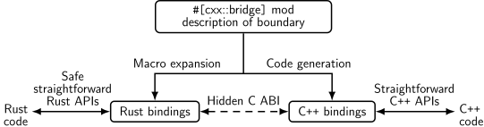

Comprehensive Rust 🦀 এ স্বাগতম


This is a free Rust course developed by the Android team at Google. The course covers the full spectrum of Rust, from basic syntax to advanced topics like generics and error handling.
কোর্সের লক্ষ্য হল আপনাকে রাস্ট শেখানো। আমরা ধরে নিলাম আপনি কিছুই জানেন না রাস্ট সম্পর্কে এবং আশা করিঃ
- আপনাকে রাস্ট সিনট্যাক্স এবং ভাষা সম্পর্কে একটি বিস্তারিত বোঝায়।
- আপনাকে বিদ্যমান প্রোগ্রামগুলি সংশোধন করতে এবং রাস্ট এ নতুন প্রোগ্রাম লিখতে সক্ষম করে।
- আপনাকে সাধারণ রাস্ট ইডিয়মস দেখায়।
We call the first three course days Rust Fundamentals.
Building on this, you’re invited to dive into one or more specialized topics:
- Android: a half-day course on using Rust for Android platform development (AOSP). This includes interoperability with C, C++, and Java.
- Bare-metal: a whole-day class on using Rust for bare-metal (embedded) development. Both microcontrollers and application processors are covered.
- Concurrency: a whole-day class on concurrency in Rust. We cover both classical concurrency (preemptively scheduling using threads and mutexes) and async/await concurrency (cooperative multitasking using futures).
Non-Goals
রাস্ট একটি বৃহৎ প্রোগ্রামিং ল্যাংগুয়েজ এবং আমরা কয়েক দিনের মধ্যে এটিকে কভার করতে সক্ষম হব না। এই কোর্সের কিছু অ-লক্ষ্য হলঃ
- Learning how to develop macros: please see Chapter 19.5 in the Rust Book and Rust by Example instead.
##ধৃষ্টতাসমূহ
The course assumes that you already know how to program. Rust is a statically-typed language and we will sometimes make comparisons with C and C++ to better explain or contrast the Rust approach.
If you know how to program in a dynamically-typed language such as Python or JavaScript, then you will be able to follow along just fine too.
এটি একটি speaker note এর উদাহরণ। আমরা অতিরিক্ত তথ্য স্লাইডে যোগ করতে এইগুলো ব্যবহার করবো। এটি প্রধান পয়েন্ট হতে পারে যা প্রশিক্ষকের উচিত কভারের পাশাপাশি ক্লাসে আসা সাধারণ প্রশ্নের উত্তর দেওয়া।
কোর্স চালু করা হচ্ছে
এই পৃষ্ঠাটি কোর্স প্রশিক্ষকের জন্য।
আমরা কীভাবে কোর্সটি চালাচ্ছি সে সম্পর্কে এখানে কিছু পটভূমির গুগলে অভ্যন্তরীণভাবে তথ্য রয়েছে।
আপনি কোর্স চালানোর আগে, আপনি চাইবেন:
-
কোর্সের উপাদানের সাথে নিজেকে পরিচিত করুন। আমরা স্পিকার নোট অন্তর্ভুক্ত করেছি মূল পয়েন্টগুলি হাইলাইট করতে সাহায্য করার জন্য (অনুগ্রহ করে আরও স্পিকার নোট অবদান রেখে আমাদের সাহায্য করুন !)। উপস্থাপন করার সময়, আপনি একটি স্পিকার নোট পপআপ এ খুলতে ভুলবেন না (“স্পীকার নোটস” এর পাশে একটি ছোট তীর সহ লিঙ্কে ক্লিক করুন)। এই পথে ক্লাসে উপস্থাপন করার জন্য আপনার কাছে একটি পরিষ্কার পর্দা রয়েছে।
-
তারিখের উপর সিদ্ধান্ত।যেহেতু কোর্সটি কমপক্ষে তিন পূর্ণ দিন সময় নেয়, তাই আমরা আপনাকে সুপারিশ করছি দুই সপ্তাহ উপর দিন নির্ধারণ করুন। এমনটাই জানিয়েছেন কোর্সে অংশগ্রহণকারীরা যে তারা কোর্সে ফাঁক থাকা সহায়ক বলে মনে করে কারণ এটি তাদের প্রক্রিয়া করতে সহায়তা করে যে সমস্ত তথ্য তাদের দেওয়া হয়েছে।
-
আপনার ব্যক্তিগত অংশগ্রহনের জন্য যথেষ্ট বড় একটি রুম খুঁজুন। আমরা সুপারিশ করি 15-25 জনের সাইজের ক্লাস। এটি যথেষ্ট ছোট যে মানুষ আরামদায়ক অনুভব করে প্রশ্ন জিজ্ঞাসা করতে— এটি যথেষ্ট ছোট যে একজন প্রশিক্ষক এর সময় থাকবে প্রশ্নের উত্তর দেওয়ার জন্য। নিশ্চিত করুন যে ঘরে আপনার জন্য এবং ছাত্রদের জন্য desks আছে : আপনা্দের সকলকে আপনাদের ল্যাপটপের সাথে বসে কাজ করতে সক্ষম হতে হবে। বিশেষ করে, আপনি একজন প্রশিক্ষক হিসাবে প্রচুর লাইভ-কোডিং করবেন, তাই lecturn আপনার জন্য খুব সহায়ক হবে না।
-
আপনার কোর্সের দিন, জিনিসগুলি সেট করতে একটু তাড়াতাড়ি করুন আমরা আপনার ল্যাপটপে চলমান
mdbook serveব্যবহার করে সরাসরি উপস্থাপন করার পরামর্শ দিই (দেখুন [ইনস্টলেশন নির্দেশাবলী] 3)। আপনি পৃষ্ঠাগুলি পরিবর্তন করার সাথে সাথে এটি কোনও ল্যাগ ছাড়াই সর্বোত্তম কার্যক্ষমতা নিশ্চিত করে। আপনার ল্যাপটপ ব্যবহার করলে আপনি আপনার বা কোর্সের মতো টাইপ ভুল ঠিক করতে পারবেন অংশগ্রহণকারীরা তাদের খুঁজে বের করে। -
তাদেরকে একা একা বা ছোট দলে অনুশীলনের সমাধান করতে দিন। আমরা সাধারণত সকালে এবং বিকেলে ব্যায়ামের জন্য 30-45 মিনিট ব্যয় করি (সমাধানগুলি পর্যালোচনা করার সময় সহ)। নিশ্চিত করুন লোকেদের জিজ্ঞাসা করুন তারা আটকে আছে কিনা বা আপনি সাহায্য করতে পারেন এমন কিছু আছে কিনা। যখন আপনি দেখতে পাচ্ছেন যে বেশ কয়েকজনের একই সমস্যা রয়েছে, এটিকে ক্লাসে কল করুন এবং একটি সমাধান অফার করুন, যেমন, প্রাসঙ্গিক তথ্যটি স্ট্যান্ডার্ড লাইব্রেরিতে কোথায় পাওয়া যাবে তা লোকেদের দেখিয়ে দিন।
এইসব যে, কোর্সটি চালানোর জন্য শুভকামনা। আমরা আশা করি এটা ততটাই মজার হবে আপনার জন্য যতটা হয়েছিলো আমাদের কাছে।
অনুগ্রহ করে [প্রতিক্রিয়া প্রদান করুন] 1 পরে যাতে আমরা উন্নতি করতে পারি৷ অবশ্যই আপনার জন্য কী ভাল কাজ করেছে এবং উত্তম কী তৈরি করা যেতে পারে তা আমরা শুনতে চাই ।আপনার ছাত্রদেরও [আমাদের প্রতিক্রিয়া পাঠাতে] খুব স্বাগত জানাই2
কোর্স এর গঠন
এই পৃষ্ঠাটি কোর্স প্রশিক্ষকের জন্য।
কোর্সটি দ্রুত গতির এবং অনেক কিছু কভার করেঃ
- প্রথম দিনঃ প্রাথমিক রাস্ট, মালিকানা এবং ধার পরীক্ষক।
- দ্বিতীয় দিনঃ যৌগিক ডেটা টাইপস, প্যাটার্ন ম্যাচিং, স্ট্যান্ডার্ড লাইব্রেরি।
- তৃতীয় দিনঃ Traits এবং Generics, এরর হ্যান্ডলিং, টেস্টিং, অনিরাপদ রাস্ট।
গভীর ডুব
রাস্ট ফান্ডামেন্টালের ৩ দিনের ক্লাস ছাড়াও, আমরা আরও কিছু বিশেষ বিষয় কভার করিঃ
Android
The Android Deep Dive is a half-day course on using Rust for Android platform development. This includes interoperability with C, C++, and Java.
আপনার একটি [AOSP চেকআউট] প্রয়োজন হবে 1৷ একটি চেকআউট করুন [কোর্স
রিপোজিটরি 2 একই মেশিনে এবং src/android/ ডিরেক্টরি সরান
আপনার AOSP চেকআউটের মূল ডিরেক্টরিতে। এটি অ্যান্ড্রয়েড বিল্ড সিস্টেম নিশ্চিত করবে
src/android/-এ Android.bp ফাইলগুলি দেখুন।
নিশ্চিত করুন যে adb সিঙ্ক আপনার এমুলেটর বা বাস্তব ডিভাইসের সাথে কাজ করে এবং Android উদাহরণগুলো প্রি-বিল্ড করুন
src/android/build_all.sh ব্যবহার করে ।স্ক্রিপ্ট পড়ুন
কমান্ড দেখতে যেগুলো এটি চালায় এবং নিশ্চিত করুন যে আপনি যখন তাদের ব্যবহার করেন তখন তারা কাজ করে।
Bare-Metal
Bare-Metal Deep Dive: Rust ব্যবহার করে bare-metal (embedded) উন্নয়ন এর জন্য একটি পুরো দিনের ক্লাস। মাইক্রোকন্ট্রোলার এবং অ্যাপ্লিকেশন প্রসেসর উভয়ই কভার করা হয়েছে।
মাইক্রোকন্ট্রোলার অংশের জন্য, আপনাকে সময়ের আগে কিনতে হবে BBC micro:bit v2 উন্নয়ন বোর্ড। সবাইকে welcome page এ বর্ণিত প্যাকেজগুলির একটি সংখ্যা ইনস্টল করতে হবে।
Concurrency
The Concurrency Deep Dive ক্লাসিক্যালের উপর পুরো দিনের ক্লাস
সেইসাথে async/await concurrency.
আপনার প্রয়োজন হবে একটি নতুন ক্রেট সেট আপ এবং নির্ভরতা ডাউনলোড করা এবং প্রস্তুত
হওয়া। তারপর আপনি পরীক্ষা করার জন্য src/main.rs-এ উদাহরণগুলো কপি/পেস্ট করতে পারেন:
cargo init concurrency
cd concurrency
cargo add tokio --features full
cargo run
বিন্যাস
কোর্সটি খুব ইন্টারেক্টিভ হতে বোঝানো হয়েছে এবং আমরা এটি করার সুপারিশ করছি প্রশ্নগুলো Rust এর অন্বেষণ চালনা করুক!
কীবোর্ড শর্টকাট
mdBook-এ বেশ কিছু দরকারী কীবোর্ড শর্টকাট রয়েছেঃ
- Arrow-Left: Navigate to the previous page.
- Arrow-Right: Navigate to the next page.
- Ctrl + Enter: Execute the code sample that has focus.
- s: Activate the search bar.
#অনুবাদ
কোর্সটি বিস্ময়কর একটি সেট দ্বারা অন্যান্য ভাষায় অনুবাদ করা হয়েছে স্বেচ্ছাসেবক:
- Brazilian Portuguese by @rastringer, @hugojacob, @joaovicmendes and @henrif75.
- Korean by @keispace, @jiyongp and @jooyunghan.
ভাষার মধ্যে স্যুইচ করতে উপরের-ডান কোণে ভাষা চয়নকারী ব্যবহার করুন।
Incomplete Translations
There is a large number of in-progress translations. We link to the most recently updated translations:
- Bengali by @raselmandol.
- French by @KookaS and @vcaen.
- German by @Throvn and @ronaldfw.
- Japanese by @CoinEZ-JPN and @momotaro1105.
আপনি যদি এই প্রচেষ্টায় সাহায্য করতে চান, তাহলে কীভাবে শুরু করবেন তার জন্য [আমাদের নির্দেশাবলী] দেখুন । অনুবাদগুলি [ইস্যু ট্র্যাকার] এ সমন্বিত হয়েছে।
Cargo ব্যবহার করা
আপনি যখন Rust সম্বন্ধে পড়া শুরু করবেন, আপনি শীঘ্রই কার্গো এর সাথে দেখা করবেন, একটি আদর্শ টুল যা Rust অ্যাপ্লিকেশন তৈরি এবং চালানোর জন্য Rust ইকোসিস্টেমে ব্যবহৃত হয়েছে। এখানে আমরা চাই কার্গো কী এবং এটি কীভাবে বৃহত্তর ইকোসিস্টেমে ফিট করে তার একটি সংক্ষিপ্ত বিবরণ দিতে এবং কিভাবে এটি এই প্রশিক্ষণের সাথে খাপ খায়।
Installation
Please follow the instructions on https://rustup.rs/.
This will give you the Cargo build tool (cargo) and the Rust compiler (rustc). You will also get rustup, a command line utility that you can use to install/switch toolchains, setup cross compilation, etc.
- On Debian/Ubuntu, you can also install Cargo, the Rust source and the Rust formatter via
apt. However, this gets you an outdated rust version and may lead to unexpected behavior. The command would be:
sudo apt install cargo rust-src rustfmt
-
We suggest using VS Code to edit the code (but any LSP compatible editor works with rust-analyzer3).
-
Some folks also like to use the JetBrains family of IDEs, which do their own analysis but have their own tradeoffs. If you prefer them, you can install the Rust Plugin. Please take note that as of January 2023 debugging only works on the CLion version of the JetBrains IDEA suite.
The Rust এর ইকোসিস্টেম
The Rust ecosystem এ বেশ কয়েকটি সরঞ্জাম রয়েছে, যার মধ্যে প্রধানগুলি হল:
-
rustc: the Rust compiler which turns.rsfiles into binaries and other intermediate formats. -
cargo: the Rust dependency manager and build tool. Cargo knows how to download dependencies, usually hosted on https://crates.io, and it will pass them torustcwhen building your project. Cargo also comes with a built-in test runner which is used to execute unit tests. -
rustup: the Rust toolchain installer and updater. This tool is used to install and updaterustcandcargowhen new versions of Rust is released. In addition,rustupcan also download documentation for the standard library. You can have multiple versions of Rust installed at once andrustupwill let you switch between them as needed.
গুরুত্বপূর্ণ দিক:
-
Rust has a rapid release schedule with a new release coming out every six weeks. New releases maintain backwards compatibility with old releases — plus they enable new functionality.
-
There are three release channels: “stable”, “beta”, and “nightly”.
-
New features are being tested on “nightly”, “beta” is what becomes “stable” every six weeks.
-
Dependencies can also be resolved from alternative registries, git, folders, and more.
-
Rust also has editions: the current edition is Rust 2021. Previous editions were Rust 2015 and Rust 2018.
-
The editions are allowed to make backwards incompatible changes to the language.
-
To prevent breaking code, editions are opt-in: you select the edition for your crate via the
Cargo.tomlfile. -
To avoid splitting the ecosystem, Rust compilers can mix code written for different editions.
-
Mention that it is quite rare to ever use the compiler directly not through
cargo(most users never do). -
It might be worth alluding that Cargo itself is an extremely powerful and comprehensive tool. It is capable of many advanced features including but not limited to:
- Project/package structure
- workspaces
- Dev Dependencies and Runtime Dependency management/caching
- build scripting
- global installation
- It is also extensible with sub command plugins as well (such as cargo clippy).
-
Read more from the official Cargo Book
-
এই প্রশিক্ষণে কোড নমুনা
For this training, we will mostly explore the Rust language through examples which can be executed through your browser. This makes the setup much easier and ensures a consistent experience for everyone.
Installing Cargo is still encouraged: it will make it easier for you to do the exercises. On the last day, we will do a larger exercise which shows you how to work with dependencies and for that you need Cargo.
এই কোর্সের কোড ব্লকগুলি সম্পূর্ণ ইন্টারেক্টিভ:
fn main() { println!("Edit me!"); }
যখন টেক্সট বক্স এ ফোকাস থাকে তখন কোডটি এক্সিকিউট করতে আপনি Ctrl + Enter ব্যবহার করতে পারেন।
বেশিরভাগ কোড নমুনা উপরে দেখানো মত সম্পাদনাযোগ্য। কয়েকটি কোড নমুনা বিভিন্ন কারণে সম্পাদনাযোগ্য নয়:
-
The embedded playgrounds cannot execute unit tests. Copy-paste the code and open it in the real Playground to demonstrate unit tests.
-
The embedded playgrounds lose their state the moment you navigate away from the page! This is the reason that the students should solve the exercises using a local Rust installation or via the Playground.
Cargo এর মাধ্যমে স্থানীয়ভাবে কোড চালানো
If you want to experiment with the code on your own system, then you will need
to first install Rust. Do this by following the instructions in the Rust
Book. This should give you a working rustc and cargo. At the time of
writing, the latest stable Rust release has these version numbers:
% rustc --version
rustc 1.69.0 (84c898d65 2023-04-16)
% cargo --version
cargo 1.69.0 (6e9a83356 2023-04-12)
You can use any later version too since Rust maintains backwards compatibility.
With this in place, follow these steps to build a Rust binary from one of the examples in this training:
-
Click the “Copy to clipboard” button on the example you want to copy.
-
Use
cargo new exerciseto create a newexercise/directory for your code:$ cargo new exercise Created binary (application) `exercise` package -
Navigate into
exercise/and usecargo runto build and run your binary:$ cd exercise $ cargo run Compiling exercise v0.1.0 (/home/mgeisler/tmp/exercise) Finished dev [unoptimized + debuginfo] target(s) in 0.75s Running `target/debug/exercise` Hello, world! -
Replace the boiler-plate code in
src/main.rswith your own code. For example, using the example on the previous page, makesrc/main.rslook likefn main() { println!("Edit me!"); } -
Use
cargo runto build and run your updated binary:$ cargo run Compiling exercise v0.1.0 (/home/mgeisler/tmp/exercise) Finished dev [unoptimized + debuginfo] target(s) in 0.24s Running `target/debug/exercise` Edit me! -
Use
cargo checkto quickly check your project for errors, usecargo buildto compile it without running it. You will find the output intarget/debug/for a normal debug build. Usecargo build --releaseto produce an optimized release build intarget/release/. -
You can add dependencies for your project by editing
Cargo.toml. When you runcargocommands, it will automatically download and compile missing dependencies for you.
ক্লাস অংশগ্রহণকারীদের Cargo ইনস্টল করতে এবং একটি লোকাল এডিটর ব্যবহার করতে উৎসাহিত করার চেষ্টা করুন । এটি তাদের জীবনকে সহজ করে তুলবে যেহেতু তাদের একটি স্বাভাবিক ডেভেলপমেন্ট এনভাইরনমেন্ট থাকবে।
প্রথম দিনে আপনাকে স্বাগতম
This is the first day of Rust Fundamentals. We will cover a lot of ground today:
-
Basic Rust syntax: variables, scalar and compound types, enums, structs, references, functions, and methods.
-
Memory management: stack vs heap, manual memory management, scope-based memory management, and garbage collection.
-
Ownership: move semantics, copying and cloning, borrowing, and lifetimes.
শিক্ষার্থীদের এটি মনে করিয়ে দিন যেঃ
- They should ask questions when they get them, don’t save them to the end.
- The class is meant to be interactive and discussions are very much encouraged!
- As an instructor, you should try to keep the discussions relevant, i.e., keep the discussions related to how Rust does things vs some other language. It can be hard to find the right balance, but err on the side of allowing discussions since they engage people much more than one-way communication.
- The questions will likely mean that we talk about things ahead of the slides.
- This is perfectly okay! Repetition is an important part of learning. Remember that the slides are just a support and you are free to skip them as you like.
The idea for the first day is to show just enough of Rust to be able to speak about the famous borrow checker. The way Rust handles memory is a major feature and we should show students this right away.
যদি আপনি এটি একটি শ্রেনীকক্ষে পড়াচ্ছেন, এটি একটি ভালো যায়গা নিয়মমাফিক চলার জন্য। আমরা পরামর্শ দিই যে দিনটাকে দুইটা ভাগে ভাগ করুন(স্লাইডগুলোকে অনুসরন করে):
- সকালঃ ৯:০০ থেকে ১২:০০,
- বিকাল ১:০০ থেকে ৪:০০.
আপনি অবশ্যই এটি প্রয়োজন অনুসারে পরিবর্তন করতে পারেন। অনুগ্রহ করে নিশ্চিত করুন বিরতি নিতে, আমরা পরামর্শ দিই প্রতি ঘন্টায় একবার বিরতি নিতে!
Rust কি?
Rust একটি নতুন প্রোগ্রামিং ভাষা যেটার ছিলো 1.0 প্রকাশ 2015 তে:
- Rust is a statically compiled language in a similar role as C++
rustcuses LLVM as its backend.
- Rust supports many platforms and
architectures:
- x86, ARM, WebAssembly, …
- Linux, Mac, Windows, …
- Rust is used for a wide range of devices:
- firmware and boot loaders,
- smart displays,
- mobile phones,
- desktops,
- servers.
Rust ঠিক C++ এর মতো সবজায়গায় খাপ খায়:
- High flexibility.
- High level of control.
- Can be scaled down to very constrained devices such as microcontrollers.
- Has no runtime or garbage collection.
- Focuses on reliability and safety without sacrificing performance.
Hello World!
Let us jump into the simplest possible Rust program, a classic Hello World program:
fn main() { println!("Hello 🌍!"); }
যা তুমি দেখতে পাওঃ
- Functions are introduced with
fn. - Blocks are delimited by curly braces like in C and C++.
- The
mainfunction is the entry point of the program. - Rust has hygienic macros,
println!is an example of this. - Rust strings are UTF-8 encoded and can contain any Unicode character.
This slide tries to make the students comfortable with Rust code. They will see a ton of it over the next three days so we start small with something familiar.
গুরুত্বপূর্ণ দিক:
-
Rust is very much like other languages in the C/C++/Java tradition. It is imperative and it doesn’t try to reinvent things unless absolutely necessary.
-
Rust is modern with full support for things like Unicode.
-
Rust uses macros for situations where you want to have a variable number of arguments (no function overloading).
-
Macros being ‘hygienic’ means they don’t accidentally capture identifiers from the scope they are used in. Rust macros are actually only partially hygienic.
-
Rust is multi-paradigm. For example, it has powerful object-oriented programming features, and, while it is not a functional language, it includes a range of functional concepts.
ছোট্ট উদাহরণ
এটি একটি ছোট উদাহরণ প্রোগ্রাম Rust এ:
fn main() { // Program entry point let mut x: i32 = 6; // Mutable variable binding print!("{x}"); // Macro for printing, like printf while x != 1 { // No parenthesis around expression if x % 2 == 0 { // Math like in other languages x = x / 2; } else { x = 3 * x + 1; } print!(" -> {x}"); } println!(); }
The code implements the Collatz conjecture: it is believed that the loop will always end, but this is not yet proved. Edit the code and play with different inputs.
গুরুত্বপূর্ণ দিক:
-
Explain that all variables are statically typed. Try removing
i32to trigger type inference. Try withi8instead and trigger a runtime integer overflow. -
Change
let mut xtolet x, discuss the compiler error. -
Show how
print!gives a compilation error if the arguments don’t match the format string. -
Show how you need to use
{}as a placeholder if you want to print an expression which is more complex than just a single variable. -
Show the students the standard library, show them how to search for
std::fmtwhich has the rules of the formatting mini-language. It’s important that the students become familiar with searching in the standard library.- In a shell
rustup doc std::fmtwill open a browser on the local std::fmt documentation
- In a shell
Rust কেনো?
Rustএর কিছু অনন্য বিক্রয় পয়েন্ট:
- Compile time memory safety.
- Lack of undefined runtime behavior.
- Modern language features.
Make sure to ask the class which languages they have experience with. Depending on the answer you can highlight different features of Rust:
-
Experience with C or C++: Rust eliminates a whole class of runtime errors via the borrow checker. You get performance like in C and C++, but you don’t have the memory unsafety issues. In addition, you get a modern language with constructs like pattern matching and built-in dependency management.
-
Experience with Java, Go, Python, JavaScript…: You get the same memory safety as in those languages, plus a similar high-level language feeling. In addition you get fast and predictable performance like C and C++ (no garbage collector) as well as access to low-level hardware (should you need it)
কম্পাইল সময়ের গ্যারান্টি
Static memory management at compile time:
- No uninitialized variables.
- No memory leaks (mostly, see notes).
- No double-frees.
- No use-after-free.
- No
NULLpointers. - No forgotten locked mutexes.
- No data races between threads.
- No iterator invalidation.
It is possible to produce memory leaks in (safe) Rust. Some examples are:
- You can use
Box::leakto leak a pointer. A use of this could be to get runtime-initialized and runtime-sized static variables - You can use
std::mem::forgetto make the compiler “forget” about a value (meaning the destructor is never run). - You can also accidentally create a reference cycle with
RcorArc. - In fact, some will consider infinitely populating a collection a memory leak and Rust does not protect from those.
For the purpose of this course, “No memory leaks” should be understood as “Pretty much no accidental memory leaks”.
রানটাইম গ্যারান্টি
রানটাইমে কোন অনির্ধারিত আচরণ নেই:
- Array access is bounds checked.
- Integer overflow is defined (panic or wrap-around).
গুরুত্বপূর্ণ দিক:
-
Integer overflow is defined via the
overflow-checkscompile-time flag. If enabled, the program will panic (a controlled crash of the program), otherwise you get wrap-around semantics. By default, you get panics in debug mode (cargo build) and wrap-around in release mode (cargo build --release). -
Bounds checking cannot be disabled with a compiler flag. It can also not be disabled directly with the
unsafekeyword. However,unsafeallows you to call functions such asslice::get_uncheckedwhich does not do bounds checking.
আধুনিক বৈশিষ্ট্যসমূহ
Rust is built with all the experience gained in the last decades.
ভাষার বৈশিষ্ট্যসমূহ
- Enums and pattern matching.
- Generics.
- No overhead FFI.
- Zero-cost abstractions.
Tooling
- Great compiler errors.
- Built-in dependency manager.
- Built-in support for testing.
- Excellent Language Server Protocol support.
গুরুত্বপূর্ণ দিক:
-
Zero-cost abstractions, similar to C++, means that you don’t have to ‘pay’ for higher-level programming constructs with memory or CPU. For example, writing a loop using
forshould result in roughly the same low level instructions as using the.iter().fold()construct. -
It may be worth mentioning that Rust enums are ‘Algebraic Data Types’, also known as ‘sum types’, which allow the type system to express things like
Option<T>andResult<T, E>. -
Remind people to read the errors — many developers have gotten used to ignore lengthy compiler output. The Rust compiler is significantly more talkative than other compilers. It will often provide you with actionable feedback, ready to copy-paste into your code.
-
The Rust standard library is small compared to languages like Java, Python, and Go. Rust does not come with several things you might consider standard and essential:
- a random number generator, but see rand.
- support for SSL or TLS, but see rusttls.
- support for JSON, but see serde_json. The reasoning behind this is that functionality in the standard library cannot go away, so it has to be very stable. For the examples above, the Rust community is still working on finding the best solution — and perhaps there isn’t a single “best solution” for some of these things.
Rust comes with a built-in package manager in the form of Cargo and this makes it trivial to download and compile third-party crates. A consequence of this is that the standard library can be smaller.
Discovering good third-party crates can be a problem. Sites like https://lib.rs/ help with this by letting you compare health metrics for crates to find a good and trusted one.
-
rust-analyzer is a well supported LSP implementation used in major IDEs and text editors.
Basic Syntax
C, C++ or Java থেকে বেশিরভাগ রাস্ট সিনট্যাক্স আপনার কাছে পরিচিত মনে হবেঃ
- Blocks and scopes are delimited by curly braces.
- Line comments are started with
//, block comments are delimited by/* ... */. - Keywords like
ifandwhilework the same. - Variable assignment is done with
=, comparison is done with==.
Scalar Types
| Types | Literals | |
|---|---|---|
| Signed integers | i8, i16, i32, i64, i128, isize | -10, 0, 1_000, 123_i64 |
| Unsigned integers | u8, u16, u32, u64, u128, usize | 0, 123, 10_u16 |
| Floating point numbers | f32, f64 | 3.14, -10.0e20, 2_f32 |
| Strings | &str | "foo", "two\nlines" |
| Unicode scalar values | char | 'a', 'α', '∞' |
| Booleans | bool | true, false |
টাইপগুলোর আকার এ রকম:
iN,uN, andfNare N bits wide,isizeandusizeare the width of a pointer,charis 32 bits wide,boolis 8 bits wide.
কিছু সিনট্যাক্স আছে যা উপরে দেখানো হয়নিঃ
-
Raw strings allow you to create a
&strvalue with escapes disabled:r"\n" == "\\n". You can embed double-quotes by using an equal amount of#on either side of the quotes:fn main() { println!(r#"<a href="link.html">link</a>"#); println!("<a href=\"link.html\">link</a>"); } -
Byte strings allow you to create a
&[u8]value directly:fn main() { println!("{:?}", b"abc"); println!("{:?}", &[97, 98, 99]); } -
All underscores in numbers can be left out, they are for legibility only. So
1_000can be written as1000(or10_00), and123_i64can be written as123i64.
যৌগিক Types
| Types | Literals | |
|---|---|---|
| Arrays | [T; N] | [20, 30, 40], [0; 3] |
| Tuples | (), (T,), (T1, T2), … | (), ('x',), ('x', 1.2), … |
অ্যারে অ্যাসাইনমেন্ট এবং অ্যাক্সেস:
fn main() { let mut a: [i8; 10] = [42; 10]; a[5] = 0; println!("a: {:?}", a); }
Tuple assignment and access:
fn main() { let t: (i8, bool) = (7, true); println!("1st index: {}", t.0); println!("2nd index: {}", t.1); }
গুরুত্বপূর্ণ দিক:
Arrays:
-
A value of the array type
[T; N]holdsN(a compile-time constant) elements of the same typeT. Note that the length of the array is part of its type, which means that[u8; 3]and[u8; 4]are considered two different types. -
We can use literals to assign values to arrays.
-
In the main function, the print statement asks for the debug implementation with the
?format parameter:{}gives the default output,{:?}gives the debug output. We could also have used{a}and{a:?}without specifying the value after the format string. -
Adding
#, eg{a:#?}, invokes a “pretty printing” format, which can be easier to read.
Tuples:
-
Like arrays, tuples have a fixed length.
-
Tuples group together values of different types into a compound type.
-
Fields of a tuple can be accessed by the period and the index of the value, e.g.
t.0,t.1. -
The empty tuple
()is also known as the “unit type”. It is both a type, and the only valid value of that type - that is to say both the type and its value are expressed as(). It is used to indicate, for example, that a function or expression has no return value, as we’ll see in a future slide.- You can think of it as
voidthat can be familiar to you from other programming languages.
- You can think of it as
References
C++ এর মতো, Rust এর ও references আছে
fn main() { let mut x: i32 = 10; let ref_x: &mut i32 = &mut x; *ref_x = 20; println!("x: {x}"); }
কিছু নোট:
- We must dereference
ref_xwhen assigning to it, similar to C and C++ pointers. - Rust will auto-dereference in some cases, in particular when invoking
methods (try
ref_x.count_ones()). - References that are declared as
mutcan be bound to different values over their lifetime.
গুরুত্বপূর্ণ দিক:
- Be sure to note the difference between
let mut ref_x: &i32andlet ref_x: &mut i32. The first one represents a mutable reference which can be bound to different values, while the second represents a reference to a mutable value.
Dangling References
Rust will statically forbid dangling references:
fn main() { let ref_x: &i32; { let x: i32 = 10; ref_x = &x; } println!("ref_x: {ref_x}"); }
- A reference is said to “borrow” the value it refers to.
- Rust is tracking the lifetimes of all references to ensure they live long enough.
- We will talk more about borrowing when we get to ownership.
Slices
A slice gives you a view into a larger collection:
fn main() { let mut a: [i32; 6] = [10, 20, 30, 40, 50, 60]; println!("a: {a:?}"); let s: &[i32] = &a[2..4]; println!("s: {s:?}"); }
- Slices borrow data from the sliced type.
- Question: What happens if you modify
a[3]right before printings?
-
We create a slice by borrowing
aand specifying the starting and ending indexes in brackets. -
If the slice starts at index 0, Rust’s range syntax allows us to drop the starting index, meaning that
&a[0..a.len()]and&a[..a.len()]are identical. -
The same is true for the last index, so
&a[2..a.len()]and&a[2..]are identical. -
To easily create a slice of the full array, we can therefore use
&a[..]. -
sis a reference to a slice ofi32s. Notice that the type ofs(&[i32]) no longer mentions the array length. This allows us to perform computation on slices of different sizes. -
Slices always borrow from another object. In this example,
ahas to remain ‘alive’ (in scope) for at least as long as our slice. -
The question about modifying
a[3]can spark an interesting discussion, but the answer is that for memory safety reasons you cannot do it throughaat this point in the execution, but you can read the data from bothaandssafely. It works before you created the slice, and again after theprintln, when the slice is no longer used. More details will be explained in the borrow checker section.
String vs str
We can now understand the two string types in Rust:
fn main() { let s1: &str = "World"; println!("s1: {s1}"); let mut s2: String = String::from("Hello "); println!("s2: {s2}"); s2.push_str(s1); println!("s2: {s2}"); let s3: &str = &s2[6..]; println!("s3: {s3}"); }
Rust terminology:
&stran immutable reference to a string slice.Stringa mutable string buffer.
-
&strintroduces a string slice, which is an immutable reference to UTF-8 encoded string data stored in a block of memory. String literals (”Hello”), are stored in the program’s binary. -
Rust’s
Stringtype is a wrapper around a vector of bytes. As with aVec<T>, it is owned. -
As with many other types
String::from()creates a string from a string literal;String::new()creates a new empty string, to which string data can be added using thepush()andpush_str()methods. -
The
format!()macro is a convenient way to generate an owned string from dynamic values. It accepts the same format specification asprintln!(). -
You can borrow
&strslices fromStringvia&and optionally range selection. -
For C++ programmers: think of
&strasconst char*from C++, but the one that always points to a valid string in memory. RustStringis a rough equivalent ofstd::stringfrom C++ (main difference: it can only contain UTF-8 encoded bytes and will never use a small-string optimization).
Functions
A Rust version of the famous FizzBuzz interview question:
fn main() { print_fizzbuzz_to(20); } fn is_divisible(n: u32, divisor: u32) -> bool { if divisor == 0 { return false; } n % divisor == 0 } fn fizzbuzz(n: u32) -> String { let fizz = if is_divisible(n, 3) { "fizz" } else { "" }; let buzz = if is_divisible(n, 5) { "buzz" } else { "" }; if fizz.is_empty() && buzz.is_empty() { return format!("{n}"); } format!("{fizz}{buzz}") } fn print_fizzbuzz_to(n: u32) { for i in 1..=n { println!("{}", fizzbuzz(i)); } }
- We refer in
mainto a function written below. Neither forward declarations nor headers are necessary. - Declaration parameters are followed by a type (the reverse of some programming languages), then a return type.
- The last expression in a function body (or any block) becomes the return value. Simply omit the
;at the end of the expression. - Some functions have no return value, and return the ‘unit type’,
(). The compiler will infer this if the-> ()return type is omitted. - The range expression in the
forloop inprint_fizzbuzz_to()contains=n, which causes it to include the upper bound.
Rustdoc
All language items in Rust can be documented using special /// syntax.
/// Determine whether the first argument is divisible by the second argument. /// /// If the second argument is zero, the result is false. fn is_divisible_by(lhs: u32, rhs: u32) -> bool { if rhs == 0 { return false; // Corner case, early return } lhs % rhs == 0 // The last expression in a block is the return value }
The contents are treated as Markdown. All published Rust library crates are
automatically documented at docs.rs using the
rustdoc tool. It is
idiomatic to document all public items in an API using this pattern.
-
Show students the generated docs for the
randcrate atdocs.rs/rand. -
This course does not include rustdoc on slides, just to save space, but in real code they should be present.
-
Inner doc comments are discussed later (in the page on modules) and need not be addressed here.
-
Rustdoc comments can contain code snippets that we can run and test using
cargo test. We will discuss these tests in the Testing section.
Methods
Methods are functions associated with a type. The self argument of a method is
an instance of the type it is associated with:
struct Rectangle { width: u32, height: u32, } impl Rectangle { fn area(&self) -> u32 { self.width * self.height } fn inc_width(&mut self, delta: u32) { self.width += delta; } } fn main() { let mut rect = Rectangle { width: 10, height: 5 }; println!("old area: {}", rect.area()); rect.inc_width(5); println!("new area: {}", rect.area()); }
- We will look much more at methods in today’s exercise and in tomorrow’s class.
-
Add a static method called
Rectangle::newand call this frommain:fn new(width: u32, height: u32) -> Rectangle { Rectangle { width, height } } -
While technically, Rust does not have custom constructors, static methods are commonly used to initialize structs (but don’t have to). The actual constructor,
Rectangle { width, height }, could be called directly. See the Rustnomicon. -
Add a
Rectangle::square(width: u32)constructor to illustrate that such static methods can take arbitrary parameters.
Function Overloading
Overloading is not supported:
- Each function has a single implementation:
- Always takes a fixed number of parameters.
- Always takes a single set of parameter types.
- Default values are not supported:
- All call sites have the same number of arguments.
- Macros are sometimes used as an alternative.
However, function parameters can be generic:
fn pick_one<T>(a: T, b: T) -> T { if std::process::id() % 2 == 0 { a } else { b } } fn main() { println!("coin toss: {}", pick_one("heads", "tails")); println!("cash prize: {}", pick_one(500, 1000)); }
- When using generics, the standard library’s
Into<T>can provide a kind of limited polymorphism on argument types. We will see more details in a later section.
প্রথম দিনঃ সকালের অনুশীলন
In these exercises, we will explore two parts of Rust:
-
Implicit conversions between types.
-
Arrays and
forloops.
A few things to consider while solving the exercises:
-
Use a local Rust installation, if possible. This way you can get auto-completion in your editor. See the page about Using Cargo for details on installing Rust.
-
Alternatively, use the Rust Playground.
The code snippets are not editable on purpose: the inline code snippets lose their state if you navigate away from the page.
After looking at the exercises, you can look at the solutions provided.
Implicit Conversions
Rust will not automatically apply implicit conversions between types (unlike C++). You can see this in a program like this:
fn multiply(x: i16, y: i16) -> i16 { x * y } fn main() { let x: i8 = 15; let y: i16 = 1000; println!("{x} * {y} = {}", multiply(x, y)); }
The Rust integer types all implement the From<T> and Into<T>
traits to let us convert between them. The From<T> trait has a single from()
method and similarly, the Into<T> trait has a single into() method.
Implementing these traits is how a type expresses that it can be converted into
another type.
The standard library has an implementation of From<i8> for i16, which means
that we can convert a variable x of type i8 to an i16 by calling
i16::from(x). Or, simpler, with x.into(), because From<i8> for i16
implementation automatically create an implementation of Into<i16> for i8.
The same applies for your own From implementations for your own types, so it is
sufficient to only implement From to get a respective Into implementation automatically.
-
Execute the above program and look at the compiler error.
-
Update the code above to use
into()to do the conversion. -
Change the types of
xandyto other things (such asf32,bool,i128) to see which types you can convert to which other types. Try converting small types to big types and the other way around. Check the standard library documentation to see ifFrom<T>is implemented for the pairs you check.
Arrays and for Loops
We saw that an array can be declared like this:
#![allow(unused)] fn main() { let array = [10, 20, 30]; }
You can print such an array by asking for its debug representation with {:?}:
fn main() { let array = [10, 20, 30]; println!("array: {array:?}"); }
Rust lets you iterate over things like arrays and ranges using the for
keyword:
fn main() { let array = [10, 20, 30]; print!("Iterating over array:"); for n in &array { print!(" {n}"); } println!(); print!("Iterating over range:"); for i in 0..3 { print!(" {}", array[i]); } println!(); }
Use the above to write a function pretty_print which pretty-print a matrix and
a function transpose which will transpose a matrix (turn rows into columns):
Hard-code both functions to operate on 3 × 3 matrices.
Copy the code below to https://play.rust-lang.org/ and implement the functions:
// TODO: remove this when you're done with your implementation. #![allow(unused_variables, dead_code)] fn transpose(matrix: [[i32; 3]; 3]) -> [[i32; 3]; 3] { unimplemented!() } fn pretty_print(matrix: &[[i32; 3]; 3]) { unimplemented!() } fn main() { let matrix = [ [101, 102, 103], // <-- the comment makes rustfmt add a newline [201, 202, 203], [301, 302, 303], ]; println!("matrix:"); pretty_print(&matrix); let transposed = transpose(matrix); println!("transposed:"); pretty_print(&transposed); }
Bonus Question
Could you use &[i32] slices instead of hard-coded 3 × 3 matrices for your
argument and return types? Something like &[&[i32]] for a two-dimensional
slice-of-slices. Why or why not?
See the ndarray crate for a production quality
implementation.
The solution and the answer to the bonus section are available in the Solution section.
The use of the reference &array within for n in &array is a subtle
preview of issues of ownership that will come later in the afternoon.
Without the &…
- The loop would have been one that consumes the array. This is a change introduced in the 2021 Edition, and …
- since the array is also accessed in the second loop, an implicit
array copy would have occured; since
i32is a copy type, then[i32; 3]is also a copy type.
Variables
Rust provides type safety via static typing. Variable bindings are immutable by default:
fn main() { let x: i32 = 10; println!("x: {x}"); // x = 20; // println!("x: {x}"); }
- Due to type inference the
i32is optional. We will gradually show the types less and less as the course progresses.
Type Inference
Rust will look at how the variable is used to determine the type:
fn takes_u32(x: u32) { println!("u32: {x}"); } fn takes_i8(y: i8) { println!("i8: {y}"); } fn main() { let x = 10; let y = 20; takes_u32(x); takes_i8(y); // takes_u32(y); }
This slide demonstrates how the Rust compiler infers types based on constraints given by variable declarations and usages.
It is very important to emphasize that variables declared like this are not of some sort of dynamic “any type” that can hold any data. The machine code generated by such declaration is identical to the explicit declaration of a type. The compiler does the job for us and helps us write more concise code.
The following code tells the compiler to copy into a certain generic container without the code ever explicitly specifying the contained type, using _ as a placeholder:
fn main() { let mut v = Vec::new(); v.push((10, false)); v.push((20, true)); println!("v: {v:?}"); let vv = v.iter().collect::<std::collections::HashSet<_>>(); println!("vv: {vv:?}"); }
collect relies on FromIterator, which HashSet implements.
Static and Constant Variables
Static and constant variables are two different ways to create globally-scoped values that cannot be moved or reallocated during the execution of the program.
const
Constant variables are evaluated at compile time and their values are inlined wherever they are used:
const DIGEST_SIZE: usize = 3; const ZERO: Option<u8> = Some(42); fn compute_digest(text: &str) -> [u8; DIGEST_SIZE] { let mut digest = [ZERO.unwrap_or(0); DIGEST_SIZE]; for (idx, &b) in text.as_bytes().iter().enumerate() { digest[idx % DIGEST_SIZE] = digest[idx % DIGEST_SIZE].wrapping_add(b); } digest } fn main() { let digest = compute_digest("Hello"); println!("Digest: {digest:?}"); }
According to the Rust RFC Book these are inlined upon use.
Only functions marked const can be called at compile time to generate const values. const functions can however be called at runtime.
static
Static variables will live during the whole execution of the program, and therefore will not move:
static BANNER: &str = "Welcome to RustOS 3.14"; fn main() { println!("{BANNER}"); }
As noted in the Rust RFC Book, these are not inlined upon use and have an actual associated memory location. This is useful for unsafe and
embedded code, and the variable lives through the entirety of the program execution.
When a globally-scoped value does not have a reason to need object identity, const is generally preferred.
Because static variables are accessible from any thread, they must be Sync. Interior mutability
is possible through a Mutex, atomic or
similar. It is also possible to have mutable statics, but they require manual synchronisation so any
access to them requires unsafe code. We will look at
mutable statics in the chapter on Unsafe Rust.
- Mention that
constbehaves semantically similar to C++’sconstexpr. static, on the other hand, is much more similar to aconstor mutable global variable in C++.staticprovides object identity: an address in memory and state as required by types with interior mutability such asMutex<T>.- It isn’t super common that one would need a runtime evaluated constant, but it is helpful and safer than using a static.
thread_localdata can be created with the macrostd::thread_local.
Properties table:
| Property | Static | Constant |
|---|---|---|
| Has an address in memory | Yes | No (inlined) |
| Lives for the entire duration of the program | Yes | No |
| Can be mutable | Yes (unsafe) | No |
| Evaluated at compile time | Yes (initialised at compile time) | Yes |
| Inlined wherever it is used | No | Yes |
Scopes and Shadowing
You can shadow variables, both those from outer scopes and variables from the same scope:
fn main() { let a = 10; println!("before: {a}"); { let a = "hello"; println!("inner scope: {a}"); let a = true; println!("shadowed in inner scope: {a}"); } println!("after: {a}"); }
- Definition: Shadowing is different from mutation, because after shadowing both variable’s memory locations exist at the same time. Both are available under the same name, depending where you use it in the code.
- A shadowing variable can have a different type.
- Shadowing looks obscure at first, but is convenient for holding on to values after
.unwrap(). - The following code demonstrates why the compiler can’t simply reuse memory locations when shadowing an immutable variable in a scope, even if the type does not change.
fn main() { let a = 1; let b = &a; let a = a + 1; println!("{a} {b}"); }
Memory Management
Traditionally, languages have fallen into two broad categories:
- Full control via manual memory management: C, C++, Pascal, …
- Full safety via automatic memory management at runtime: Java, Python, Go, Haskell, …
Rust offers a new mix:
Full control and safety via compile time enforcement of correct memory management.
It does this with an explicit ownership concept.
First, let’s refresh how memory management works.
The Stack vs The Heap
-
Stack: Continuous area of memory for local variables.
- Values have fixed sizes known at compile time.
- Extremely fast: just move a stack pointer.
- Easy to manage: follows function calls.
- Great memory locality.
-
Heap: Storage of values outside of function calls.
- Values have dynamic sizes determined at runtime.
- Slightly slower than the stack: some book-keeping needed.
- No guarantee of memory locality.
Stack and Heap Example
Creating a String puts fixed-sized metadata on the stack and dynamically sized
data, the actual string, on the heap:
fn main() { let s1 = String::from("Hello"); }
-
Mention that a
Stringis backed by aVec, so it has a capacity and length and can grow if mutable via reallocation on the heap. -
If students ask about it, you can mention that the underlying memory is heap allocated using the System Allocator and custom allocators can be implemented using the Allocator API
-
We can inspect the memory layout with
unsafecode. However, you should point out that this is rightfully unsafe!fn main() { let mut s1 = String::from("Hello"); s1.push(' '); s1.push_str("world"); // DON'T DO THIS AT HOME! For educational purposes only. // String provides no guarantees about its layout, so this could lead to // undefined behavior. unsafe { let (ptr, capacity, len): (usize, usize, usize) = std::mem::transmute(s1); println!("ptr = {ptr:#x}, len = {len}, capacity = {capacity}"); } }
ম্যানুয়াল মেমোরি ব্যবস্থাপনা
আপনি নিজেই heap-memory এলোকেট এবং ডি-এলোকেট করুন।
If not done with care, this can lead to crashes, bugs, security vulnerabilities, and memory leaks.
C উদাহরণ
You must call free on every pointer you allocate with malloc:
void foo(size_t n) {
int* int_array = malloc(n * sizeof(int));
//
// ... lots of code
//
free(int_array);
}
Memory is leaked if the function returns early between malloc and free: the
pointer is lost and we cannot deallocate the memory.
Worse, freeing the pointer twice, or accessing a freed pointer can lead to exploitable security vulnerabilities.
Scope-Based Memory Management
Constructors and destructors let you hook into the lifetime of an object.
By wrapping a pointer in an object, you can free memory when the object is destroyed. The compiler guarantees that this happens, even if an exception is raised.
This is often called resource acquisition is initialization (RAII) and gives you smart pointers.
C++ Example
void say_hello(std::unique_ptr<Person> person) {
std::cout << "Hello " << person->name << std::endl;
}
- The
std::unique_ptrobject is allocated on the stack, and points to memory allocated on the heap. - At the end of
say_hello, thestd::unique_ptrdestructor will run. - The destructor frees the
Personobject it points to.
Special move constructors are used when passing ownership to a function:
std::unique_ptr<Person> person = find_person("Carla");
say_hello(std::move(person));
Automatic Memory Management
An alternative to manual and scope-based memory management is automatic memory management:
- The programmer never allocates or deallocates memory explicitly.
- A garbage collector finds unused memory and deallocates it for the programmer.
Java Example
The person object is not deallocated after sayHello returns:
void sayHello(Person person) {
System.out.println("Hello " + person.getName());
}
Memory Management in Rust
Memory management in Rust is a mix:
- Safe and correct like Java, but without a garbage collector.
- Depending on which abstraction (or combination of abstractions) you choose, can be a single unique pointer, reference counted, or atomically reference counted.
- Scope-based like C++, but the compiler enforces full adherence.
- A Rust user can choose the right abstraction for the situation, some even have no cost at runtime like C.
Rust achieves this by modeling ownership explicitly.
-
If asked how at this point, you can mention that in Rust this is usually handled by RAII wrapper types such as Box, Vec, Rc, or Arc. These encapsulate ownership and memory allocation via various means, and prevent the potential errors in C.
-
You may be asked about destructors here, the Drop trait is the Rust equivalent.
Comparison
Here is a rough comparison of the memory management techniques.
Pros of Different Memory Management Techniques
- Manual like C:
- No runtime overhead.
- Automatic like Java:
- Fully automatic.
- Safe and correct.
- Scope-based like C++:
- Partially automatic.
- No runtime overhead.
- Compiler-enforced scope-based like Rust:
- Enforced by compiler.
- No runtime overhead.
- Safe and correct.
Cons of Different Memory Management Techniques
- Manual like C:
- Use-after-free.
- Double-frees.
- Memory leaks.
- Automatic like Java:
- Garbage collection pauses.
- Destructor delays.
- Scope-based like C++:
- Complex, opt-in by programmer (on C++).
- Circular references can lead to memory leaks
- Potential runtime overhead
- Compiler-enforced and scope-based like Rust:
- Some upfront complexity.
- Can reject valid programs.
Ownership
All variable bindings have a scope where they are valid and it is an error to use a variable outside its scope:
struct Point(i32, i32); fn main() { { let p = Point(3, 4); println!("x: {}", p.0); } println!("y: {}", p.1); }
- At the end of the scope, the variable is dropped and the data is freed.
- A destructor can run here to free up resources.
- We say that the variable owns the value.
Move Semantics
An assignment will transfer ownership between variables:
fn main() { let s1: String = String::from("Hello!"); let s2: String = s1; println!("s2: {s2}"); // println!("s1: {s1}"); }
- The assignment of
s1tos2transfers ownership. - When
s1goes out of scope, nothing happens: it does not own anything. - When
s2goes out of scope, the string data is freed. - There is always exactly one variable binding which owns a value.
-
Mention that this is the opposite of the defaults in C++, which copies by value unless you use
std::move(and the move constructor is defined!). -
It is only the ownership that moves. Whether any machine code is generated to manipulate the data itself is a matter of optimization, and such copies are aggressively optimized away.
-
Simple values (such as integers) can be marked
Copy(see later slides). -
In Rust, clones are explicit (by using
clone).
Moved Strings in Rust
fn main() { let s1: String = String::from("Rust"); let s2: String = s1; }
- The heap data from
s1is reused fors2. - When
s1goes out of scope, nothing happens (it has been moved from).
Before move to s2:
After move to s2:
Extra Work in Modern C++
Modern C++ solves this differently:
std::string s1 = "Cpp";
std::string s2 = s1; // Duplicate the data in s1.
- The heap data from
s1is duplicated ands2gets its own independent copy. - When
s1ands2go out of scope, they each free their own memory.
Before copy-assignment:
After copy-assignment:
Moves in Function Calls
When you pass a value to a function, the value is assigned to the function parameter. This transfers ownership:
fn say_hello(name: String) { println!("Hello {name}") } fn main() { let name = String::from("Alice"); say_hello(name); // say_hello(name); }
- With the first call to
say_hello,maingives up ownership ofname. Afterwards,namecannot be used anymore withinmain. - The heap memory allocated for
namewill be freed at the end of thesay_hellofunction. maincan retain ownership if it passesnameas a reference (&name) and ifsay_helloaccepts a reference as a parameter.- Alternatively,
maincan pass a clone ofnamein the first call (name.clone()). - Rust makes it harder than C++ to inadvertently create copies by making move semantics the default, and by forcing programmers to make clones explicit.
Copying and Cloning
While move semantics are the default, certain types are copied by default:
fn main() { let x = 42; let y = x; println!("x: {x}"); println!("y: {y}"); }
These types implement the Copy trait.
You can opt-in your own types to use copy semantics:
#[derive(Copy, Clone, Debug)] struct Point(i32, i32); fn main() { let p1 = Point(3, 4); let p2 = p1; println!("p1: {p1:?}"); println!("p2: {p2:?}"); }
- After the assignment, both
p1andp2own their own data. - We can also use
p1.clone()to explicitly copy the data.
Copying and cloning are not the same thing:
- Copying refers to bitwise copies of memory regions and does not work on arbitrary objects.
- Copying does not allow for custom logic (unlike copy constructors in C++).
- Cloning is a more general operation and also allows for custom behavior by implementing the
Clonetrait. - Copying does not work on types that implement the
Droptrait.
In the above example, try the following:
- Add a
Stringfield tostruct Point. It will not compile becauseStringis not aCopytype. - Remove
Copyfrom thederiveattribute. The compiler error is now in theprintln!forp1. - Show that it works if you clone
p1instead.
If students ask about derive, it is sufficient to say that this is a way to generate code in Rust
at compile time. In this case the default implementations of Copy and Clone traits are generated.
Borrowing
Instead of transferring ownership when calling a function, you can let a function borrow the value:
#[derive(Debug)] struct Point(i32, i32); fn add(p1: &Point, p2: &Point) -> Point { Point(p1.0 + p2.0, p1.1 + p2.1) } fn main() { let p1 = Point(3, 4); let p2 = Point(10, 20); let p3 = add(&p1, &p2); println!("{p1:?} + {p2:?} = {p3:?}"); }
- The
addfunction borrows two points and returns a new point. - The caller retains ownership of the inputs.
Notes on stack returns:
-
Demonstrate that the return from
addis cheap because the compiler can eliminate the copy operation. Change the above code to print stack addresses and run it on the Playground or look at the assembly in Godbolt. In the “DEBUG” optimization level, the addresses should change, while they stay the same when changing to the “RELEASE” setting:#[derive(Debug)] struct Point(i32, i32); fn add(p1: &Point, p2: &Point) -> Point { let p = Point(p1.0 + p2.0, p1.1 + p2.1); println!("&p.0: {:p}", &p.0); p } pub fn main() { let p1 = Point(3, 4); let p2 = Point(10, 20); let p3 = add(&p1, &p2); println!("&p3.0: {:p}", &p3.0); println!("{p1:?} + {p2:?} = {p3:?}"); } -
The Rust compiler can do return value optimization (RVO).
-
In C++, copy elision has to be defined in the language specification because constructors can have side effects. In Rust, this is not an issue at all. If RVO did not happen, Rust will always perform a simple and efficient
memcpycopy.
Shared and Unique Borrows
Rust puts constraints on the ways you can borrow values:
- You can have one or more
&Tvalues at any given time, or - You can have exactly one
&mut Tvalue.
fn main() { let mut a: i32 = 10; let b: &i32 = &a; { let c: &mut i32 = &mut a; *c = 20; } println!("a: {a}"); println!("b: {b}"); }
- The above code does not compile because
ais borrowed as mutable (throughc) and as immutable (throughb) at the same time. - Move the
println!statement forbbefore the scope that introducescto make the code compile. - After that change, the compiler realizes that
bis only ever used before the new mutable borrow ofathroughc. This is a feature of the borrow checker called “non-lexical lifetimes”.
Lifetimes
A borrowed value has a lifetime:
- The lifetime can be implicit:
add(p1: &Point, p2: &Point) -> Point. - Lifetimes can also be explicit:
&'a Point,&'document str. - Read
&'a Pointas “a borrowedPointwhich is valid for at least the lifetimea”. - Lifetimes are always inferred by the compiler: you cannot assign a lifetime
yourself.
- Lifetime annotations create constraints; the compiler verifies that there is a valid solution.
- Lifetimes for function arguments and return values must be fully specified, but Rust allows lifetimes to be elided in most cases with a few simple rules.
Lifetimes in Function Calls
In addition to borrowing its arguments, a function can return a borrowed value:
#[derive(Debug)] struct Point(i32, i32); fn left_most<'a>(p1: &'a Point, p2: &'a Point) -> &'a Point { if p1.0 < p2.0 { p1 } else { p2 } } fn main() { let p1: Point = Point(10, 10); let p2: Point = Point(20, 20); let p3: &Point = left_most(&p1, &p2); println!("left-most point: {:?}", p3); }
'ais a generic parameter, it is inferred by the compiler.- Lifetimes start with
'and'ais a typical default name. - Read
&'a Pointas “a borrowedPointwhich is valid for at least the lifetimea”.- The at least part is important when parameters are in different scopes.
In the above example, try the following:
-
Move the declaration of
p2andp3into a new scope ({ ... }), resulting in the following code:#[derive(Debug)] struct Point(i32, i32); fn left_most<'a>(p1: &'a Point, p2: &'a Point) -> &'a Point { if p1.0 < p2.0 { p1 } else { p2 } } fn main() { let p1: Point = Point(10, 10); let p3: &Point; { let p2: Point = Point(20, 20); p3 = left_most(&p1, &p2); } println!("left-most point: {:?}", p3); }Note how this does not compile since
p3outlivesp2. -
Reset the workspace and change the function signature to
fn left_most<'a, 'b>(p1: &'a Point, p2: &'a Point) -> &'b Point. This will not compile because the relationship between the lifetimes'aand'bis unclear. -
Another way to explain it:
- Two references to two values are borrowed by a function and the function returns another reference.
- It must have come from one of those two inputs (or from a global variable).
- Which one is it? The compiler needs to know, so at the call site the returned reference is not used for longer than a variable from where the reference came from.
Lifetimes in Data Structures
If a data type stores borrowed data, it must be annotated with a lifetime:
#[derive(Debug)] struct Highlight<'doc>(&'doc str); fn erase(text: String) { println!("Bye {text}!"); } fn main() { let text = String::from("The quick brown fox jumps over the lazy dog."); let fox = Highlight(&text[4..19]); let dog = Highlight(&text[35..43]); // erase(text); println!("{fox:?}"); println!("{dog:?}"); }
- In the above example, the annotation on
Highlightenforces that the data underlying the contained&strlives at least as long as any instance ofHighlightthat uses that data. - If
textis consumed before the end of the lifetime offox(ordog), the borrow checker throws an error. - Types with borrowed data force users to hold on to the original data. This can be useful for creating lightweight views, but it generally makes them somewhat harder to use.
- When possible, make data structures own their data directly.
- Some structs with multiple references inside can have more than one lifetime annotation. This can be necessary if there is a need to describe lifetime relationships between the references themselves, in addition to the lifetime of the struct itself. Those are very advanced use cases.
Day 1: Afternoon Exercises
We will look at two things:
-
A small book library,
-
Iterators and ownership (hard).
After looking at the exercises, you can look at the solutions provided.
Storing Books
We will learn much more about structs and the Vec<T> type tomorrow. For now,
you just need to know part of its API:
fn main() { let mut vec = vec![10, 20]; vec.push(30); let midpoint = vec.len() / 2; println!("middle value: {}", vec[midpoint]); for item in &vec { println!("item: {item}"); } }
Use this to model a library’s book collection. Copy the code below to https://play.rust-lang.org/ and update the types to make it compile:
struct Library { books: Vec<Book>, } struct Book { title: String, year: u16, } impl Book { // This is a constructor, used below. fn new(title: &str, year: u16) -> Book { Book { title: String::from(title), year, } } } // Implement the methods below. Update the `self` parameter to // indicate the method's required level of ownership over the object: // // - `&self` for shared read-only access, // - `&mut self` for unique and mutable access, // - `self` for unique access by value. impl Library { fn new() -> Library { todo!("Initialize and return a `Library` value") } //fn len(self) -> usize { // todo!("Return the length of `self.books`") //} //fn is_empty(self) -> bool { // todo!("Return `true` if `self.books` is empty") //} //fn add_book(self, book: Book) { // todo!("Add a new book to `self.books`") //} //fn print_books(self) { // todo!("Iterate over `self.books` and each book's title and year") //} //fn oldest_book(self) -> Option<&Book> { // todo!("Return a reference to the oldest book (if any)") //} } // This shows the desired behavior. Uncomment the code below and // implement the missing methods. You will need to update the // method signatures, including the "self" parameter! You may // also need to update the variable bindings within main. fn main() { let library = Library::new(); //println!("The library is empty: library.is_empty() -> {}", library.is_empty()); // //library.add_book(Book::new("Lord of the Rings", 1954)); //library.add_book(Book::new("Alice's Adventures in Wonderland", 1865)); // //println!("The library is no longer empty: library.is_empty() -> {}", library.is_empty()); // // //library.print_books(); // //match library.oldest_book() { // Some(book) => println!("The oldest book is {}", book.title), // None => println!("The library is empty!"), //} // //println!("The library has {} books", library.len()); //library.print_books(); }
Iterators and Ownership
The ownership model of Rust affects many APIs. An example of this is the
Iterator and
IntoIterator
traits.
Iterator
Traits are like interfaces: they describe behavior (methods) for a type. The
Iterator trait simply says that you can call next until you get None back:
#![allow(unused)] fn main() { pub trait Iterator { type Item; fn next(&mut self) -> Option<Self::Item>; } }
You use this trait like this:
fn main() { let v: Vec<i8> = vec![10, 20, 30]; let mut iter = v.iter(); println!("v[0]: {:?}", iter.next()); println!("v[1]: {:?}", iter.next()); println!("v[2]: {:?}", iter.next()); println!("No more items: {:?}", iter.next()); }
What is the type returned by the iterator? Test your answer here:
fn main() { let v: Vec<i8> = vec![10, 20, 30]; let mut iter = v.iter(); let v0: Option<..> = iter.next(); println!("v0: {v0:?}"); }
Why is this type used?
IntoIterator
The Iterator trait tells you how to iterate once you have created an
iterator. The related trait IntoIterator tells you how to create the iterator:
#![allow(unused)] fn main() { pub trait IntoIterator { type Item; type IntoIter: Iterator<Item = Self::Item>; fn into_iter(self) -> Self::IntoIter; } }
The syntax here means that every implementation of IntoIterator must
declare two types:
Item: the type we iterate over, such asi8,IntoIter: theIteratortype returned by theinto_itermethod.
Note that IntoIter and Item are linked: the iterator must have the same
Item type, which means that it returns Option<Item>
Like before, what is the type returned by the iterator?
fn main() { let v: Vec<String> = vec![String::from("foo"), String::from("bar")]; let mut iter = v.into_iter(); let v0: Option<..> = iter.next(); println!("v0: {v0:?}"); }
for Loops
Now that we know both Iterator and IntoIterator, we can build for loops.
They call into_iter() on an expression and iterates over the resulting
iterator:
fn main() { let v: Vec<String> = vec![String::from("foo"), String::from("bar")]; for word in &v { println!("word: {word}"); } for word in v { println!("word: {word}"); } }
What is the type of word in each loop?
Experiment with the code above and then consult the documentation for impl IntoIterator for &Vec<T>
and impl IntoIterator for Vec<T>
to check your answers.
Welcome to Day 2
Now that we have seen a fair amount of Rust, we will continue with:
-
Structs, enums, methods.
-
Pattern matching: destructuring enums, structs, and arrays.
-
Control flow constructs:
if,if let,while,while let,break, andcontinue. -
The Standard Library:
String,OptionandResult,Vec,HashMap,RcandArc. -
Modules: visibility, paths, and filesystem hierarchy.
Structs
Like C and C++, Rust has support for custom structs:
struct Person { name: String, age: u8, } fn main() { let mut peter = Person { name: String::from("Peter"), age: 27, }; println!("{} is {} years old", peter.name, peter.age); peter.age = 28; println!("{} is {} years old", peter.name, peter.age); let jackie = Person { name: String::from("Jackie"), ..peter }; println!("{} is {} years old", jackie.name, jackie.age); }
Key Points:
- Structs work like in C or C++.
- Like in C++, and unlike in C, no typedef is needed to define a type.
- Unlike in C++, there is no inheritance between structs.
- Methods are defined in an
implblock, which we will see in following slides. - This may be a good time to let people know there are different types of structs.
- Zero-sized structs
e.g., struct Foo;might be used when implementing a trait on some type but don’t have any data that you want to store in the value itself. - The next slide will introduce Tuple structs, used when the field names are not important.
- Zero-sized structs
- The syntax
..peterallows us to copy the majority of the fields from the old struct without having to explicitly type it all out. It must always be the last element.
Tuple Structs
If the field names are unimportant, you can use a tuple struct:
struct Point(i32, i32); fn main() { let p = Point(17, 23); println!("({}, {})", p.0, p.1); }
This is often used for single-field wrappers (called newtypes):
struct PoundsOfForce(f64); struct Newtons(f64); fn compute_thruster_force() -> PoundsOfForce { todo!("Ask a rocket scientist at NASA") } fn set_thruster_force(force: Newtons) { // ... } fn main() { let force = compute_thruster_force(); set_thruster_force(force); }
- Newtypes are a great way to encode additional information about the value in a primitive type, for example:
- The number is measured in some units:
Newtonsin the example above. - The value passed some validation when it was created, so you no longer have to validate it again at every use: ’PhoneNumber(String)
orOddNumber(u32)`.
- The number is measured in some units:
- Demonstrate how to add a
f64value to aNewtonstype by accessing the single field in the newtype.- Rust generally doesn’t like inexplicit things, like automatic unwrapping or for instance using booleans as integers.
- Operator overloading is discussed on Day 3 (generics).
- The example is a subtle reference to the Mars Climate Orbiter failure.
Field Shorthand Syntax
If you already have variables with the right names, then you can create the struct using a shorthand:
#[derive(Debug)] struct Person { name: String, age: u8, } impl Person { fn new(name: String, age: u8) -> Person { Person { name, age } } } fn main() { let peter = Person::new(String::from("Peter"), 27); println!("{peter:?}"); }
-
The
newfunction could be written usingSelfas a type, as it is interchangeable with the struct type name#[derive(Debug)] struct Person { name: String, age: u8, } impl Person { fn new(name: String, age: u8) -> Self { Self { name, age } } } -
Implement the
Defaulttrait for the struct. Define some fields and use the default values for the other fields.#[derive(Debug)] struct Person { name: String, age: u8, } impl Default for Person { fn default() -> Person { Person { name: "Bot".to_string(), age: 0, } } } fn create_default() { let tmp = Person { ..Person::default() }; let tmp = Person { name: "Sam".to_string(), ..Person::default() }; } -
Methods are defined in the
implblock. -
Use struct update syntax to define a new structure using
peter. Note that the variablepeterwill no longer be accessible afterwards. -
Use
{:#?}when printing structs to request theDebugrepresentation.
Enums
The enum keyword allows the creation of a type which has a few
different variants:
fn generate_random_number() -> i32 { // Implementation based on https://xkcd.com/221/ 4 // Chosen by fair dice roll. Guaranteed to be random. } #[derive(Debug)] enum CoinFlip { Heads, Tails, } fn flip_coin() -> CoinFlip { let random_number = generate_random_number(); if random_number % 2 == 0 { return CoinFlip::Heads; } else { return CoinFlip::Tails; } } fn main() { println!("You got: {:?}", flip_coin()); }
Key Points:
- Enumerations allow you to collect a set of values under one type
- This page offers an enum type
CoinFlipwith two variantsHeadsandTails. You might note the namespace when using variants. - This might be a good time to compare Structs and Enums:
- In both, you can have a simple version without fields (unit struct) or one with different types of fields (variant payloads).
- In both, associated functions are defined within an
implblock. - You could even implement the different variants of an enum with separate structs but then they wouldn’t be the same type as they would if they were all defined in an enum.
Variant Payloads
You can define richer enums where the variants carry data. You can then use the
match statement to extract the data from each variant:
enum WebEvent { PageLoad, // Variant without payload KeyPress(char), // Tuple struct variant Click { x: i64, y: i64 }, // Full struct variant } #[rustfmt::skip] fn inspect(event: WebEvent) { match event { WebEvent::PageLoad => println!("page loaded"), WebEvent::KeyPress(c) => println!("pressed '{c}'"), WebEvent::Click { x, y } => println!("clicked at x={x}, y={y}"), } } fn main() { let load = WebEvent::PageLoad; let press = WebEvent::KeyPress('x'); let click = WebEvent::Click { x: 20, y: 80 }; inspect(load); inspect(press); inspect(click); }
- The values in the enum variants can only be accessed after being pattern matched. The pattern binds references to the fields in the “match arm” after the
=>.- The expression is matched against the patterns from top to bottom. There is no fall-through like in C or C++.
- The match expression has a value. The value is the last expression in the match arm which was executed.
- Starting from the top we look for what pattern matches the value then run the code following the arrow. Once we find a match, we stop.
- Demonstrate what happens when the search is inexhaustive. Note the advantage the Rust compiler provides by confirming when all cases are handled.
matchinspects a hidden discriminant field in theenum.- It is possible to retrieve the discriminant by calling
std::mem::discriminant()- This is useful, for example, if implementing
PartialEqfor structs where comparing field values doesn’t affect equality.
- This is useful, for example, if implementing
WebEvent::Click { ... }is not exactly the same asWebEvent::Click(Click)with a top levelstruct Click { ... }. The inlined version cannot implement traits, for example.
Enum Sizes
Rust enums are packed tightly, taking constraints due to alignment into account:
use std::any::type_name; use std::mem::{align_of, size_of}; fn dbg_size<T>() { println!("{}: size {} bytes, align: {} bytes", type_name::<T>(), size_of::<T>(), align_of::<T>()); } enum Foo { A, B, } fn main() { dbg_size::<Foo>(); }
- See the Rust Reference.
Key Points:
-
Internally Rust is using a field (discriminant) to keep track of the enum variant.
-
You can control the discriminant if needed (e.g., for compatibility with C):
#[repr(u32)] enum Bar { A, // 0 B = 10000, C, // 10001 } fn main() { println!("A: {}", Bar::A as u32); println!("B: {}", Bar::B as u32); println!("C: {}", Bar::C as u32); }Without
repr, the discriminant type takes 2 bytes, because 10001 fits 2 bytes. -
Try out other types such as
dbg_size!(bool): size 1 bytes, align: 1 bytes,dbg_size!(Option<bool>): size 1 bytes, align: 1 bytes (niche optimization, see below),dbg_size!(&i32): size 8 bytes, align: 8 bytes (on a 64-bit machine),dbg_size!(Option<&i32>): size 8 bytes, align: 8 bytes (null pointer optimization, see below).
-
Niche optimization: Rust will merge unused bit patterns for the enum discriminant.
-
Null pointer optimization: For some types, Rust guarantees that
size_of::<T>()equalssize_of::<Option<T>>().Example code if you want to show how the bitwise representation may look like in practice. It’s important to note that the compiler provides no guarantees regarding this representation, therefore this is totally unsafe.
use std::mem::transmute; macro_rules! dbg_bits { ($e:expr, $bit_type:ty) => { println!("- {}: {:#x}", stringify!($e), transmute::<_, $bit_type>($e)); }; } fn main() { // TOTALLY UNSAFE. Rust provides no guarantees about the bitwise // representation of types. unsafe { println!("Bitwise representation of bool"); dbg_bits!(false, u8); dbg_bits!(true, u8); println!("Bitwise representation of Option<bool>"); dbg_bits!(None::<bool>, u8); dbg_bits!(Some(false), u8); dbg_bits!(Some(true), u8); println!("Bitwise representation of Option<Option<bool>>"); dbg_bits!(Some(Some(false)), u8); dbg_bits!(Some(Some(true)), u8); dbg_bits!(Some(None::<bool>), u8); dbg_bits!(None::<Option<bool>>, u8); println!("Bitwise representation of Option<&i32>"); dbg_bits!(None::<&i32>, usize); dbg_bits!(Some(&0i32), usize); } }More complex example if you want to discuss what happens when we chain more than 256
Options together.#![recursion_limit = "1000"] use std::mem::transmute; macro_rules! dbg_bits { ($e:expr, $bit_type:ty) => { println!("- {}: {:#x}", stringify!($e), transmute::<_, $bit_type>($e)); }; } // Macro to wrap a value in 2^n Some() where n is the number of "@" signs. // Increasing the recursion limit is required to evaluate this macro. macro_rules! many_options { ($value:expr) => { Some($value) }; ($value:expr, @) => { Some(Some($value)) }; ($value:expr, @ $($more:tt)+) => { many_options!(many_options!($value, $($more)+), $($more)+) }; } fn main() { // TOTALLY UNSAFE. Rust provides no guarantees about the bitwise // representation of types. unsafe { assert_eq!(many_options!(false), Some(false)); assert_eq!(many_options!(false, @), Some(Some(false))); assert_eq!(many_options!(false, @@), Some(Some(Some(Some(false))))); println!("Bitwise representation of a chain of 128 Option's."); dbg_bits!(many_options!(false, @@@@@@@), u8); dbg_bits!(many_options!(true, @@@@@@@), u8); println!("Bitwise representation of a chain of 256 Option's."); dbg_bits!(many_options!(false, @@@@@@@@), u16); dbg_bits!(many_options!(true, @@@@@@@@), u16); println!("Bitwise representation of a chain of 257 Option's."); dbg_bits!(many_options!(Some(false), @@@@@@@@), u16); dbg_bits!(many_options!(Some(true), @@@@@@@@), u16); dbg_bits!(many_options!(None::<bool>, @@@@@@@@), u16); } }
Methods
Rust allows you to associate functions with your new types. You do this with an
impl block:
#[derive(Debug)] struct Person { name: String, age: u8, } impl Person { fn say_hello(&self) { println!("Hello, my name is {}", self.name); } } fn main() { let peter = Person { name: String::from("Peter"), age: 27, }; peter.say_hello(); }
Key Points:
- It can be helpful to introduce methods by comparing them to functions.
- Methods are called on an instance of a type (such as a struct or enum), the first parameter represents the instance as
self. - Developers may choose to use methods to take advantage of method receiver syntax and to help keep them more organized. By using methods we can keep all the implementation code in one predictable place.
- Methods are called on an instance of a type (such as a struct or enum), the first parameter represents the instance as
- Point out the use of the keyword
self, a method receiver.- Show that it is an abbreviated term for
self: Selfand perhaps show how the struct name could also be used. - Explain that
Selfis a type alias for the type theimplblock is in and can be used elsewhere in the block. - Note how
selfis used like other structs and dot notation can be used to refer to individual fields. - This might be a good time to demonstrate how the
&selfdiffers fromselfby modifying the code and trying to run say_hello twice.
- Show that it is an abbreviated term for
- We describe the distinction between method receivers next.
Method Receiver
The &self above indicates that the method borrows the object immutably. There
are other possible receivers for a method:
&self: borrows the object from the caller using a shared and immutable reference. The object can be used again afterwards.&mut self: borrows the object from the caller using a unique and mutable reference. The object can be used again afterwards.self: takes ownership of the object and moves it away from the caller. The method becomes the owner of the object. The object will be dropped (deallocated) when the method returns, unless its ownership is explicitly transmitted. Complete ownership does not automatically mean mutability.mut self: same as above, but the method can mutate the object.- No receiver: this becomes a static method on the struct. Typically used to
create constructors which are called
newby convention.
Beyond variants on self, there are also
special wrapper types
allowed to be receiver types, such as Box<Self>.
Consider emphasizing “shared and immutable” and “unique and mutable”. These constraints always come
together in Rust due to borrow checker rules, and self is no exception. It isn’t possible to
reference a struct from multiple locations and call a mutating (&mut self) method on it.
Example
#[derive(Debug)] struct Race { name: String, laps: Vec<i32>, } impl Race { fn new(name: &str) -> Race { // No receiver, a static method Race { name: String::from(name), laps: Vec::new() } } fn add_lap(&mut self, lap: i32) { // Exclusive borrowed read-write access to self self.laps.push(lap); } fn print_laps(&self) { // Shared and read-only borrowed access to self println!("Recorded {} laps for {}:", self.laps.len(), self.name); for (idx, lap) in self.laps.iter().enumerate() { println!("Lap {idx}: {lap} sec"); } } fn finish(self) { // Exclusive ownership of self let total = self.laps.iter().sum::<i32>(); println!("Race {} is finished, total lap time: {}", self.name, total); } } fn main() { let mut race = Race::new("Monaco Grand Prix"); race.add_lap(70); race.add_lap(68); race.print_laps(); race.add_lap(71); race.print_laps(); race.finish(); // race.add_lap(42); }
Key Points:
- All four methods here use a different method receiver.
- You can point out how that changes what the function can do with the variable values and if/how it can be used again in
main. - You can showcase the error that appears when trying to call
finishtwice.
- You can point out how that changes what the function can do with the variable values and if/how it can be used again in
- Note that although the method receivers are different, the non-static functions are called the same way in the main body. Rust enables automatic referencing and dereferencing when calling methods. Rust automatically adds in the
&,*,mutsso that that object matches the method signature. - You might point out that
print_lapsis using a vector that is iterated over. We describe vectors in more detail in the afternoon.
Pattern Matching
The match keyword let you match a value against one or more patterns. The
comparisons are done from top to bottom and the first match wins.
The patterns can be simple values, similarly to switch in C and C++:
fn main() { let input = 'x'; match input { 'q' => println!("Quitting"), 'a' | 's' | 'w' | 'd' => println!("Moving around"), '0'..='9' => println!("Number input"), _ => println!("Something else"), } }
The _ pattern is a wildcard pattern which matches any value.
Key Points:
- You might point out how some specific characters are being used when in a pattern
|as anor..can expand as much as it needs to be1..=5represents an inclusive range_is a wild card
- It can be useful to show how binding works, by for instance replacing a wildcard character with a variable, or removing the quotes around
q. - You can demonstrate matching on a reference.
- This might be a good time to bring up the concept of irrefutable patterns, as the term can show up in error messages.
Destructuring Enums
Patterns can also be used to bind variables to parts of your values. This is how
you inspect the structure of your types. Let us start with a simple enum type:
enum Result { Ok(i32), Err(String), } fn divide_in_two(n: i32) -> Result { if n % 2 == 0 { Result::Ok(n / 2) } else { Result::Err(format!("cannot divide {n} into two equal parts")) } } fn main() { let n = 100; match divide_in_two(n) { Result::Ok(half) => println!("{n} divided in two is {half}"), Result::Err(msg) => println!("sorry, an error happened: {msg}"), } }
Here we have used the arms to destructure the Result value. In the first
arm, half is bound to the value inside the Ok variant. In the second arm,
msg is bound to the error message.
গুরুত্বপূর্ণ দিক:
- The
if/elseexpression is returning an enum that is later unpacked with amatch. - You can try adding a third variant to the enum definition and displaying the errors when running the code. Point out the places where your code is now inexhaustive and how the compiler tries to give you hints.
Destructuring Structs
You can also destructure structs:
struct Foo { x: (u32, u32), y: u32, } #[rustfmt::skip] fn main() { let foo = Foo { x: (1, 2), y: 3 }; match foo { Foo { x: (1, b), y } => println!("x.0 = 1, b = {b}, y = {y}"), Foo { y: 2, x: i } => println!("y = 2, x = {i:?}"), Foo { y, .. } => println!("y = {y}, other fields were ignored"), } }
- Change the literal values in
footo match with the other patterns. - Add a new field to
Fooand make changes to the pattern as needed. - The distinction between a capture and a constant expression can be hard to
spot. Try changing the
2in the second arm to a variable, and see that it subtly doesn’t work. Change it to aconstand see it working again.
Destructuring Arrays
You can destructure arrays, tuples, and slices by matching on their elements:
#[rustfmt::skip] fn main() { let triple = [0, -2, 3]; println!("Tell me about {triple:?}"); match triple { [0, y, z] => println!("First is 0, y = {y}, and z = {z}"), [1, ..] => println!("First is 1 and the rest were ignored"), _ => println!("All elements were ignored"), } }
-
Destructuring of slices of unknown length also works with patterns of fixed length.
fn main() { inspect(&[0, -2, 3]); inspect(&[0, -2, 3, 4]); } #[rustfmt::skip] fn inspect(slice: &[i32]) { println!("Tell me about {slice:?}"); match slice { &[0, y, z] => println!("First is 0, y = {y}, and z = {z}"), &[1, ..] => println!("First is 1 and the rest were ignored"), _ => println!("All elements were ignored"), } } -
Create a new pattern using
_to represent an element. -
Add more values to the array.
-
Point out that how
..will expand to account for different number of elements. -
Show matching against the tail with patterns
[.., b]and[a@..,b]
Match Guards
When matching, you can add a guard to a pattern. This is an arbitrary Boolean expression which will be executed if the pattern matches:
#[rustfmt::skip] fn main() { let pair = (2, -2); println!("Tell me about {pair:?}"); match pair { (x, y) if x == y => println!("These are twins"), (x, y) if x + y == 0 => println!("Antimatter, kaboom!"), (x, _) if x % 2 == 1 => println!("The first one is odd"), _ => println!("No correlation..."), } }
Key Points:
- Match guards as a separate syntax feature are important and necessary when we wish to concisely express more complex ideas than patterns alone would allow.
- They are not the same as separate
ifexpression inside of the match arm. Anifexpression inside of the branch block (after=>) happens after the match arm is selected. Failing theifcondition inside of that block won’t result in other arms of the originalmatchexpression being considered. - You can use the variables defined in the pattern in your if expression.
- The condition defined in the guard applies to every expression in a pattern with an
|.
দ্বিতীয় দিনঃ সকালের অনুশিলন
We will look at implementing methods in two contexts:
-
Simple struct which tracks health statistics.
-
Multiple structs and enums for a drawing library.
After looking at the exercises, you can look at the solutions provided.
Health Statistics
You’re working on implementing a health-monitoring system. As part of that, you need to keep track of users’ health statistics.
You’ll start with some stubbed functions in an impl block as well as a User
struct definition. Your goal is to implement the stubbed out methods on the
User struct defined in the impl block.
Copy the code below to https://play.rust-lang.org/ and fill in the missing methods:
// TODO: remove this when you're done with your implementation. #![allow(unused_variables, dead_code)] pub struct User { name: String, age: u32, height: f32, visit_count: usize, last_blood_pressure: Option<(u32, u32)>, } pub struct Measurements { height: f32, blood_pressure: (u32, u32), } pub struct HealthReport<'a> { patient_name: &'a str, visit_count: u32, height_change: f32, blood_pressure_change: Option<(i32, i32)>, } impl User { pub fn new(name: String, age: u32, height: f32) -> Self { unimplemented!() } pub fn name(&self) -> &str { unimplemented!() } pub fn age(&self) -> u32 { unimplemented!() } pub fn height(&self) -> f32 { unimplemented!() } pub fn doctor_visits(&self) -> u32 { unimplemented!() } pub fn set_age(&mut self, new_age: u32) { unimplemented!() } pub fn set_height(&mut self, new_height: f32) { unimplemented!() } pub fn visit_doctor(&mut self, measurements: Measurements) -> HealthReport { unimplemented!() } } fn main() { let bob = User::new(String::from("Bob"), 32, 155.2); println!("I'm {} and my age is {}", bob.name(), bob.age()); } #[test] fn test_height() { let bob = User::new(String::from("Bob"), 32, 155.2); assert_eq!(bob.height(), 155.2); } #[test] fn test_set_age() { let mut bob = User::new(String::from("Bob"), 32, 155.2); assert_eq!(bob.age(), 32); bob.set_age(33); assert_eq!(bob.age(), 33); } #[test] fn test_visit() { let mut bob = User::new(String::from("Bob"), 32, 155.2); assert_eq!(bob.doctor_visits(), 0); let report = bob.visit_doctor(Measurements { height: 156.1, blood_pressure: (120, 80), }); assert_eq!(report.patient_name, "Bob"); assert_eq!(report.visit_count, 1); assert_eq!(report.blood_pressure_change, None); let report = bob.visit_doctor(Measurements { height: 156.1, blood_pressure: (115, 76), }); assert_eq!(report.visit_count, 2); assert_eq!(report.blood_pressure_change, Some((-5, -4))); }
Polygon Struct
We will create a Polygon struct which contain some points. Copy the code below
to https://play.rust-lang.org/ and fill in the missing methods to make the
tests pass:
// TODO: remove this when you're done with your implementation. #![allow(unused_variables, dead_code)] pub struct Point { // add fields } impl Point { // add methods } pub struct Polygon { // add fields } impl Polygon { // add methods } pub struct Circle { // add fields } impl Circle { // add methods } pub enum Shape { Polygon(Polygon), Circle(Circle), } #[cfg(test)] mod tests { use super::*; fn round_two_digits(x: f64) -> f64 { (x * 100.0).round() / 100.0 } #[test] fn test_point_magnitude() { let p1 = Point::new(12, 13); assert_eq!(round_two_digits(p1.magnitude()), 17.69); } #[test] fn test_point_dist() { let p1 = Point::new(10, 10); let p2 = Point::new(14, 13); assert_eq!(round_two_digits(p1.dist(p2)), 5.00); } #[test] fn test_point_add() { let p1 = Point::new(16, 16); let p2 = p1 + Point::new(-4, 3); assert_eq!(p2, Point::new(12, 19)); } #[test] fn test_polygon_left_most_point() { let p1 = Point::new(12, 13); let p2 = Point::new(16, 16); let mut poly = Polygon::new(); poly.add_point(p1); poly.add_point(p2); assert_eq!(poly.left_most_point(), Some(p1)); } #[test] fn test_polygon_iter() { let p1 = Point::new(12, 13); let p2 = Point::new(16, 16); let mut poly = Polygon::new(); poly.add_point(p1); poly.add_point(p2); let points = poly.iter().cloned().collect::<Vec<_>>(); assert_eq!(points, vec![Point::new(12, 13), Point::new(16, 16)]); } #[test] fn test_shape_perimeters() { let mut poly = Polygon::new(); poly.add_point(Point::new(12, 13)); poly.add_point(Point::new(17, 11)); poly.add_point(Point::new(16, 16)); let shapes = vec![ Shape::from(poly), Shape::from(Circle::new(Point::new(10, 20), 5)), ]; let perimeters = shapes .iter() .map(Shape::perimeter) .map(round_two_digits) .collect::<Vec<_>>(); assert_eq!(perimeters, vec![15.48, 31.42]); } } #[allow(dead_code)] fn main() {}
Since the method signatures are missing from the problem statements, the key part of the exercise is to specify those correctly. You don’t have to modify the tests.
Other interesting parts of the exercise:
- Derive a
Copytrait for some structs, as in tests the methods sometimes don’t borrow their arguments. - Discover that
Addtrait must be implemented for two objects to be addable via “+”. Note that we do not discuss generics until Day 3.
Control Flow
As we have seen, if is an expression in Rust. It is used to conditionally
evaluate one of two blocks, but the blocks can have a value which then becomes
the value of the if expression. Other control flow expressions work similarly
in Rust.
Blocks
A block in Rust contains a sequence of expressions. Each block has a value and a type, which are those of the last expression of the block:
fn main() { let x = { let y = 10; println!("y: {y}"); let z = { let w = { 3 + 4 }; println!("w: {w}"); y * w }; println!("z: {z}"); z - y }; println!("x: {x}"); }
If the last expression ends with ;, then the resulting value and type is ().
The same rule is used for functions: the value of the function body is the return value:
fn double(x: i32) -> i32 { x + x } fn main() { println!("doubled: {}", double(7)); }
Key Points:
- The point of this slide is to show that blocks have a type and value in Rust.
- You can show how the value of the block changes by changing the last line in the block. For instance, adding/removing a semicolon or using a
return.
if expressions
You use if
expressions
exactly like if statements in other languages:
fn main() { let mut x = 10; if x % 2 == 0 { x = x / 2; } else { x = 3 * x + 1; } }
In addition, you can use if as an expression. The last expression of each
block becomes the value of the if expression:
fn main() { let mut x = 10; x = if x % 2 == 0 { x / 2 } else { 3 * x + 1 }; }
Because if is an expression and must have a particular type, both of its branch blocks must have the same type. Consider showing what happens if you add ; after x / 2 in the second example.
if let expressions
The if let
expression
lets you execute different code depending on whether a value matches a pattern:
fn main() { let arg = std::env::args().next(); if let Some(value) = arg { println!("Program name: {value}"); } else { println!("Missing name?"); } }
See pattern matching for more details on patterns in Rust.
-
Unlike
match,if letdoes not have to cover all branches. This can make it more concise thanmatch. -
A common usage is handling
Somevalues when working withOption. -
Unlike
match,if letdoes not support guard clauses for pattern matching. -
Since 1.65, a similar let-else construct allows to do a destructuring assignment, or if it fails, execute a block which is required to abort normal control flow (with
panic/return/break/continue):fn main() { println!("{:?}", second_word_to_upper("foo bar")); } fn second_word_to_upper(s: &str) -> Option<String> { let mut it = s.split(' '); let (Some(_), Some(item)) = (it.next(), it.next()) else { return None; }; Some(item.to_uppercase()) }
while loops
The while keyword
works very similar to other languages:
fn main() { let mut x = 10; while x != 1 { x = if x % 2 == 0 { x / 2 } else { 3 * x + 1 }; } println!("Final x: {x}"); }
while let loops
Like with if let, there is a while let
variant which repeatedly tests a value against a pattern:
fn main() { let v = vec![10, 20, 30]; let mut iter = v.into_iter(); while let Some(x) = iter.next() { println!("x: {x}"); } }
Here the iterator returned by v.into_iter() will return a Option<i32> on every
call to next(). It returns Some(x) until it is done, after which it will
return None. The while let lets us keep iterating through all items.
See pattern matching for more details on patterns in Rust.
- Point out that the
while letloop will keep going as long as the value matches the pattern. - You could rewrite the
while letloop as an infinite loop with an if statement that breaks when there is no value to unwrap foriter.next(). Thewhile letprovides syntactic sugar for the above scenario.
for loops
The for loop is closely
related to the while let loop. It will
automatically call into_iter() on the expression and then iterate over it:
fn main() { let v = vec![10, 20, 30]; for x in v { println!("x: {x}"); } for i in (0..10).step_by(2) { println!("i: {i}"); } }
You can use break and continue here as usual.
- Index iteration is not a special syntax in Rust for just that case.
(0..10)is a range that implements anIteratortrait.step_byis a method that returns anotherIteratorthat skips every other element.- Modify the elements in the vector and explain the compiler errors. Change vector
vto be mutable and the for loop tofor x in v.iter_mut().
loop expressions
Finally, there is a loop keyword
which creates an endless loop.
Here you must either break or return to stop the loop:
fn main() { let mut x = 10; loop { x = if x % 2 == 0 { x / 2 } else { 3 * x + 1 }; if x == 1 { break; } } println!("Final x: {x}"); }
- Break the
loopwith a value (e.g.break 8) and print it out. - Note that
loopis the only looping construct which returns a non-trivial value. This is because it’s guaranteed to be entered at least once (unlikewhileandforloops).
match expressions
The match keyword
is used to match a value against one or more patterns. In that sense, it works
like a series of if let expressions:
fn main() { match std::env::args().next().as_deref() { Some("cat") => println!("Will do cat things"), Some("ls") => println!("Will ls some files"), Some("mv") => println!("Let's move some files"), Some("rm") => println!("Uh, dangerous!"), None => println!("Hmm, no program name?"), _ => println!("Unknown program name!"), } }
Like if let, each match arm must have the same type. The type is the last
expression of the block, if any. In the example above, the type is ().
See pattern matching for more details on patterns in Rust.
- Save the match expression to a variable and print it out.
- Remove
.as_deref()and explain the error.std::env::args().next()returns anOption<String>, but we cannot match againstString.as_deref()transforms anOption<T>toOption<&T::Target>. In our case, this turnsOption<String>intoOption<&str>.- We can now use pattern matching to match against the
&strinsideOption.
break and continue
- If you want to exit a loop early, use
break, - If you want to immediately start
the next iteration use
continue.
Both continue and break can optionally take a label argument which is used
to break out of nested loops:
fn main() { let v = vec![10, 20, 30]; let mut iter = v.into_iter(); 'outer: while let Some(x) = iter.next() { println!("x: {x}"); let mut i = 0; while i < x { println!("x: {x}, i: {i}"); i += 1; if i == 3 { break 'outer; } } } }
In this case we break the outer loop after 3 iterations of the inner loop.
Standard Library
Rust comes with a standard library which helps establish a set of common types
used by Rust library and programs. This way, two libraries can work together
smoothly because they both use the same String type.
The common vocabulary types include:
-
OptionandResulttypes: used for optional values and error handling. -
String: the default string type used for owned data. -
Vec: a standard extensible vector. -
HashMap: a hash map type with a configurable hashing algorithm. -
Box: an owned pointer for heap-allocated data. -
Rc: a shared reference-counted pointer for heap-allocated data.
- In fact, Rust contains several layers of the Standard Library:
core,allocandstd. coreincludes the most basic types and functions that don’t depend onlibc, allocator or even the presence of an operating system.allocincludes types which require a global heap allocator, such asVec,BoxandArc.- Embedded Rust applications often only use
core, and sometimesalloc.
Option and Result
The types represent optional data:
fn main() { let numbers = vec![10, 20, 30]; let first: Option<&i8> = numbers.first(); println!("first: {first:?}"); let idx: Result<usize, usize> = numbers.binary_search(&10); println!("idx: {idx:?}"); }
OptionandResultare widely used not just in the standard library.Option<&T>has zero space overhead compared to&T.Resultis the standard type to implement error handling as we will see on Day 3.binary_searchreturnsResult<usize, usize>.- If found,
Result::Okholds the index where the element is found. - Otherwise,
Result::Errcontains the index where such an element should be inserted.
- If found,
String
String is the standard heap-allocated growable UTF-8 string buffer:
fn main() { let mut s1 = String::new(); s1.push_str("Hello"); println!("s1: len = {}, capacity = {}", s1.len(), s1.capacity()); let mut s2 = String::with_capacity(s1.len() + 1); s2.push_str(&s1); s2.push('!'); println!("s2: len = {}, capacity = {}", s2.len(), s2.capacity()); let s3 = String::from("🇨🇭"); println!("s3: len = {}, number of chars = {}", s3.len(), s3.chars().count()); }
String implements Deref<Target = str>, which means that you can call all
str methods on a String.
String::newreturns a new empty string, useString::with_capacitywhen you know how much data you want to push to the string.String::lenreturns the size of theStringin bytes (which can be different from its length in characters).String::charsreturns an iterator over the actual characters. Note that acharcan be different from what a human will consider a “character” due to grapheme clusters.- When people refer to strings they could either be talking about
&strorString. - When a type implements
Deref<Target = T>, the compiler will let you transparently call methods fromT.StringimplementsDeref<Target = str>which transparently gives it access tostr’s methods.- Write and compare
let s3 = s1.deref();andlet s3 = &*s1;.
Stringis implemented as a wrapper around a vector of bytes, many of the operations you see supported on vectors are also supported onString, but with some extra guarantees.- Compare the different ways to index a
String:- To a character by using
s3.chars().nth(i).unwrap()whereiis in-bound, out-of-bounds. - To a substring by using
s3[0..4], where that slice is on character boundaries or not.
- To a character by using
Vec
Vec is the standard resizable heap-allocated buffer:
fn main() { let mut v1 = Vec::new(); v1.push(42); println!("v1: len = {}, capacity = {}", v1.len(), v1.capacity()); let mut v2 = Vec::with_capacity(v1.len() + 1); v2.extend(v1.iter()); v2.push(9999); println!("v2: len = {}, capacity = {}", v2.len(), v2.capacity()); // Canonical macro to initialize a vector with elements. let mut v3 = vec![0, 0, 1, 2, 3, 4]; // Retain only the even elements. v3.retain(|x| x % 2 == 0); println!("{v3:?}"); // Remove consecutive duplicates. v3.dedup(); println!("{v3:?}"); }
Vec implements Deref<Target = [T]>, which means that you can call slice
methods on a Vec.
Vecis a type of collection, along withStringandHashMap. The data it contains is stored on the heap. This means the amount of data doesn’t need to be known at compile time. It can grow or shrink at runtime.- Notice how
Vec<T>is a generic type too, but you don’t have to specifyTexplicitly. As always with Rust type inference, theTwas established during the firstpushcall. vec![...]is a canonical macro to use instead ofVec::new()and it supports adding initial elements to the vector.- To index the vector you use
[], but they will panic if out of bounds. Alternatively, usinggetwill return anOption. Thepopfunction will remove the last element. - Show iterating over a vector and mutating the value:
for e in &mut v { *e += 50; }
HashMap
Standard hash map with protection against HashDoS attacks:
use std::collections::HashMap; fn main() { let mut page_counts = HashMap::new(); page_counts.insert("Adventures of Huckleberry Finn".to_string(), 207); page_counts.insert("Grimms' Fairy Tales".to_string(), 751); page_counts.insert("Pride and Prejudice".to_string(), 303); if !page_counts.contains_key("Les Misérables") { println!("We know about {} books, but not Les Misérables.", page_counts.len()); } for book in ["Pride and Prejudice", "Alice's Adventure in Wonderland"] { match page_counts.get(book) { Some(count) => println!("{book}: {count} pages"), None => println!("{book} is unknown.") } } // Use the .entry() method to insert a value if nothing is found. for book in ["Pride and Prejudice", "Alice's Adventure in Wonderland"] { let page_count: &mut i32 = page_counts.entry(book.to_string()).or_insert(0); *page_count += 1; } println!("{page_counts:#?}"); }
-
HashMapis not defined in the prelude and needs to be brought into scope. -
Try the following lines of code. The first line will see if a book is in the hashmap and if not return an alternative value. The second line will insert the alternative value in the hashmap if the book is not found.
let pc1 = page_counts .get("Harry Potter and the Sorcerer's Stone ") .unwrap_or(&336); let pc2 = page_counts .entry("The Hunger Games".to_string()) .or_insert(374); -
Unlike
vec!, there is unfortunately no standardhashmap!macro.-
Although, since Rust 1.56, HashMap implements
From<[(K, V); N]>, which allows us to easily initialize a hash map from a literal array:let page_counts = HashMap::from([ ("Harry Potter and the Sorcerer's Stone".to_string(), 336), ("The Hunger Games".to_string(), 374), ]);
-
-
Alternatively HashMap can be built from any
Iteratorwhich yields key-value tuples. -
We are showing
HashMap<String, i32>, and avoid using&stras key to make examples easier. Using references in collections can, of course, be done, but it can lead into complications with the borrow checker.- Try removing
to_string()from the example above and see if it still compiles. Where do you think we might run into issues?
- Try removing
-
This type has several “method-specific” return types, such as
std::collections::hash_map::Keys. These types often appear in searches of the Rust docs. Show students the docs for this type, and the helpful link back to thekeysmethod.
Box
Box is an owned pointer to data on the heap:
fn main() { let five = Box::new(5); println!("five: {}", *five); }
Box<T> implements Deref<Target = T>, which means that you can call methods
from T directly on a Box<T>.
Boxis likestd::unique_ptrin C++, except that it’s guaranteed to be not null.- In the above example, you can even leave out the
*in theprintln!statement thanks toDeref. - A
Boxcan be useful when you:- have a type whose size that can’t be known at compile time, but the Rust compiler wants to know an exact size.
- want to transfer ownership of a large amount of data. To avoid copying large amounts of data on the stack, instead store the data on the heap in a
Boxso only the pointer is moved.
Box with Recursive Data Structures
Recursive data types or data types with dynamic sizes need to use a Box:
#[derive(Debug)] enum List<T> { Cons(T, Box<List<T>>), Nil, } fn main() { let list: List<i32> = List::Cons(1, Box::new(List::Cons(2, Box::new(List::Nil)))); println!("{list:?}"); }
-
If
Boxwas not used and we attempted to embed aListdirectly into theList, the compiler would not compute a fixed size of the struct in memory (Listwould be of infinite size). -
Boxsolves this problem as it has the same size as a regular pointer and just points at the next element of theListin the heap. -
Remove the
Boxin the List definition and show the compiler error. “Recursive with indirection” is a hint you might want to use a Box or reference of some kind, instead of storing a value directly.
Niche Optimization
#[derive(Debug)] enum List<T> { Cons(T, Box<List<T>>), Nil, } fn main() { let list: List<i32> = List::Cons(1, Box::new(List::Cons(2, Box::new(List::Nil)))); println!("{list:?}"); }
A Box cannot be empty, so the pointer is always valid and non-null. This
allows the compiler to optimize the memory layout:
Rc
Rc is a reference-counted shared pointer. Use this when you need to refer
to the same data from multiple places:
use std::rc::Rc; fn main() { let mut a = Rc::new(10); let mut b = Rc::clone(&a); println!("a: {a}"); println!("b: {b}"); }
- See
ArcandMutexif you are in a multi-threaded context. - You can downgrade a shared pointer into a
Weakpointer to create cycles that will get dropped.
Rc’s count ensures that its contained value is valid for as long as there are references.Rcin Rust is likestd::shared_ptrin C++.Rc::cloneis cheap: it creates a pointer to the same allocation and increases the reference count. Does not make a deep clone and can generally be ignored when looking for performance issues in code.make_mutactually clones the inner value if necessary (“clone-on-write”) and returns a mutable reference.- Use
Rc::strong_countto check the reference count. Rc::downgradegives you a weakly reference-counted object to create cycles that will be dropped properly (likely in combination withRefCell, on the next slide).
Cell and RefCell
Cell and
RefCell implement
what Rust calls interior mutability: mutation of values in an immutable
context.
Cell is typically used for simple types, as it requires copying or moving
values. More complex interior types typically use RefCell, which tracks shared
and exclusive references at runtime and panics if they are misused.
use std::cell::RefCell; use std::rc::Rc; #[derive(Debug, Default)] struct Node { value: i64, children: Vec<Rc<RefCell<Node>>>, } impl Node { fn new(value: i64) -> Rc<RefCell<Node>> { Rc::new(RefCell::new(Node { value, ..Node::default() })) } fn sum(&self) -> i64 { self.value + self.children.iter().map(|c| c.borrow().sum()).sum::<i64>() } } fn main() { let root = Node::new(1); root.borrow_mut().children.push(Node::new(5)); let subtree = Node::new(10); subtree.borrow_mut().children.push(Node::new(11)); subtree.borrow_mut().children.push(Node::new(12)); root.borrow_mut().children.push(subtree); println!("graph: {root:#?}"); println!("graph sum: {}", root.borrow().sum()); }
- If we were using
Cellinstead ofRefCellin this example, we would have to move theNodeout of theRcto push children, then move it back in. This is safe because there’s always one, un-referenced value in the cell, but it’s not ergonomic. - To do anything with a Node, you must call a
RefCellmethod, usuallyborroworborrow_mut. - Demonstrate that reference loops can be created by adding
roottosubtree.children(don’t try to print it!). - To demonstrate a runtime panic, add a
fn inc(&mut self)that incrementsself.valueand calls the same method on its children. This will panic in the presence of the reference loop, withthread 'main' panicked at 'already borrowed: BorrowMutError'.
Modules
We have seen how impl blocks let us namespace functions to a type.
Similarly, mod lets us namespace types and functions:
mod foo { pub fn do_something() { println!("In the foo module"); } } mod bar { pub fn do_something() { println!("In the bar module"); } } fn main() { foo::do_something(); bar::do_something(); }
- Packages provide functionality and include a
Cargo.tomlfile that describes how to build a bundle of 1+ crates. - Crates are a tree of modules, where a binary crate creates an executable and a library crate compiles to a library.
- Modules define organization, scope, and are the focus of this section.
Visibility
Modules are a privacy boundary:
- Module items are private by default (hides implementation details).
- Parent and sibling items are always visible.
- In other words, if an item is visible in module
foo, it’s visible in all the descendants offoo.
mod outer { fn private() { println!("outer::private"); } pub fn public() { println!("outer::public"); } mod inner { fn private() { println!("outer::inner::private"); } pub fn public() { println!("outer::inner::public"); super::private(); } } } fn main() { outer::public(); }
- Use the
pubkeyword to make modules public.
Additionally, there are advanced pub(...) specifiers to restrict the scope of public visibility.
- See the Rust Reference.
- Configuring
pub(crate)visibility is a common pattern. - Less commonly, you can give visibility to a specific path.
- In any case, visibility must be granted to an ancestor module (and all of its descendants).
Paths
Paths are resolved as follows:
-
As a relative path:
fooorself::foorefers tofooin the current module,super::foorefers tofooin the parent module.
-
As an absolute path:
crate::foorefers tofooin the root of the current crate,bar::foorefers tofooin thebarcrate.
A module can bring symbols from another module into scope with use.
You will typically see something like this at the top of each module:
use std::collections::HashSet; use std::mem::transmute;
Filesystem Hierarchy
Omitting the module content will tell Rust to look for it in another file:
mod garden;
This tells rust that the garden module content is found at src/garden.rs.
Similarly, a garden::vegetables module can be found at src/garden/vegetables.rs.
The crate root is in:
src/lib.rs(for a library crate)src/main.rs(for a binary crate)
Modules defined in files can be documented, too, using “inner doc comments”. These document the item that contains them – in this case, a module.
//! This module implements the garden, including a highly performant germination //! implementation. // Re-export types from this module. pub use seeds::SeedPacket; pub use garden::Garden; /// Sow the given seed packets. pub fn sow(seeds: Vec<SeedPacket>) { todo!() } /// Harvest the produce in the garden that is ready. pub fn harvest(garden: &mut Garden) { todo!() }
-
Before Rust 2018, modules needed to be located at
module/mod.rsinstead ofmodule.rs, and this is still a working alternative for editions after 2018. -
The main reason to introduce
filename.rsas alternative tofilename/mod.rswas because many files namedmod.rscan be hard to distinguish in IDEs. -
Deeper nesting can use folders, even if the main module is a file:
src/ ├── main.rs ├── top_module.rs └── top_module/ └── sub_module.rs -
The place rust will look for modules can be changed with a compiler directive:
#[path = "some/path.rs"] mod some_module;This is useful, for example, if you would like to place tests for a module in a file named
some_module_test.rs, similar to the convention in Go.
Day 2: Afternoon Exercises
The exercises for this afternoon will focus on strings and iterators.
After looking at the exercises, you can look at the solutions provided.
Luhn Algorithm
The Luhn algorithm is used to validate credit card numbers. The algorithm takes a string as input and does the following to validate the credit card number:
-
Ignore all spaces. Reject number with less than two digits.
-
Moving from right to left, double every second digit: for the number
1234, we double3and1. For the number98765, we double6and8. -
After doubling a digit, sum the digits. So doubling
7becomes14which becomes5. -
Sum all the undoubled and doubled digits.
-
The credit card number is valid if the sum ends with
0.
Copy the code below to https://play.rust-lang.org/ and implement the function.
Try to solve the problem the “simple” way first, using for loops and integers.
Then, revisit the solution and try to implement it with iterators.
// TODO: remove this when you're done with your implementation. #![allow(unused_variables, dead_code)] pub fn luhn(cc_number: &str) -> bool { unimplemented!() } #[test] fn test_non_digit_cc_number() { assert!(!luhn("foo")); } #[test] fn test_empty_cc_number() { assert!(!luhn("")); assert!(!luhn(" ")); assert!(!luhn(" ")); assert!(!luhn(" ")); } #[test] fn test_single_digit_cc_number() { assert!(!luhn("0")); } #[test] fn test_two_digit_cc_number() { assert!(luhn(" 0 0 ")); } #[test] fn test_valid_cc_number() { assert!(luhn("4263 9826 4026 9299")); assert!(luhn("4539 3195 0343 6467")); assert!(luhn("7992 7398 713")); } #[test] fn test_invalid_cc_number() { assert!(!luhn("4223 9826 4026 9299")); assert!(!luhn("4539 3195 0343 6476")); assert!(!luhn("8273 1232 7352 0569")); } #[allow(dead_code)] fn main() {}
Strings and Iterators
In this exercise, you are implementing a routing component of a web server. The server is configured with a number of path prefixes which are matched against request paths. The path prefixes can contain a wildcard character which matches a full segment. See the unit tests below.
Copy the following code to https://play.rust-lang.org/ and make the tests
pass. Try avoiding allocating a Vec for your intermediate results:
#![allow(unused)] fn main() { // TODO: remove this when you're done with your implementation. #![allow(unused_variables, dead_code)] pub fn prefix_matches(prefix: &str, request_path: &str) -> bool { unimplemented!() } #[test] fn test_matches_without_wildcard() { assert!(prefix_matches("/v1/publishers", "/v1/publishers")); assert!(prefix_matches("/v1/publishers", "/v1/publishers/abc-123")); assert!(prefix_matches("/v1/publishers", "/v1/publishers/abc/books")); assert!(!prefix_matches("/v1/publishers", "/v1")); assert!(!prefix_matches("/v1/publishers", "/v1/publishersBooks")); assert!(!prefix_matches("/v1/publishers", "/v1/parent/publishers")); } #[test] fn test_matches_with_wildcard() { assert!(prefix_matches( "/v1/publishers/*/books", "/v1/publishers/foo/books" )); assert!(prefix_matches( "/v1/publishers/*/books", "/v1/publishers/bar/books" )); assert!(prefix_matches( "/v1/publishers/*/books", "/v1/publishers/foo/books/book1" )); assert!(!prefix_matches("/v1/publishers/*/books", "/v1/publishers")); assert!(!prefix_matches( "/v1/publishers/*/books", "/v1/publishers/foo/booksByAuthor" )); } }
Welcome to Day 3
Today, we will cover some more advanced topics of Rust:
-
Traits: deriving traits, default methods, and important standard library traits.
-
Generics: generic data types, generic methods, monomorphization, and trait objects.
-
Error handling: panics,
Result, and the try operator?. -
Testing: unit tests, documentation tests, and integration tests.
-
Unsafe Rust: raw pointers, static variables, unsafe functions, and extern functions.
Generics
Rust support generics, which lets you abstract algorithms or data structures (such as sorting or a binary tree) over the types used or stored.
Generic Data Types
You can use generics to abstract over the concrete field type:
#[derive(Debug)] struct Point<T> { x: T, y: T, } fn main() { let integer = Point { x: 5, y: 10 }; let float = Point { x: 1.0, y: 4.0 }; println!("{integer:?} and {float:?}"); }
-
Try declaring a new variable
let p = Point { x: 5, y: 10.0 };. -
Fix the code to allow points that have elements of different types.
Generic Methods
You can declare a generic type on your impl block:
#[derive(Debug)] struct Point<T>(T, T); impl<T> Point<T> { fn x(&self) -> &T { &self.0 // + 10 } // fn set_x(&mut self, x: T) } fn main() { let p = Point(5, 10); println!("p.x = {}", p.x()); }
- Q: Why
Tis specified twice inimpl<T> Point<T> {}? Isn’t that redundant?- This is because it is a generic implementation section for generic type. They are independently generic.
- It means these methods are defined for any
T. - It is possible to write
impl Point<u32> { .. }.Pointis still generic and you can usePoint<f64>, but methods in this block will only be available forPoint<u32>.
Monomorphization
Generic code is turned into non-generic code based on the call sites:
fn main() { let integer = Some(5); let float = Some(5.0); }
behaves as if you wrote
enum Option_i32 { Some(i32), None, } enum Option_f64 { Some(f64), None, } fn main() { let integer = Option_i32::Some(5); let float = Option_f64::Some(5.0); }
This is a zero-cost abstraction: you get exactly the same result as if you had hand-coded the data structures without the abstraction.
Traits
Rust lets you abstract over types with traits. They’re similar to interfaces:
trait Pet { fn name(&self) -> String; } struct Dog { name: String, } struct Cat; impl Pet for Dog { fn name(&self) -> String { self.name.clone() } } impl Pet for Cat { fn name(&self) -> String { String::from("The cat") // No name, cats won't respond to it anyway. } } fn greet<P: Pet>(pet: &P) { println!("Who's a cutie? {} is!", pet.name()); } fn main() { let fido = Dog { name: "Fido".into() }; greet(&fido); let captain_floof = Cat; greet(&captain_floof); }
Trait Objects
Trait objects allow for values of different types, for instance in a collection:
trait Pet { fn name(&self) -> String; } struct Dog { name: String, } struct Cat; impl Pet for Dog { fn name(&self) -> String { self.name.clone() } } impl Pet for Cat { fn name(&self) -> String { String::from("The cat") // No name, cats won't respond to it anyway. } } fn main() { let pets: Vec<Box<dyn Pet>> = vec![ Box::new(Cat), Box::new(Dog { name: String::from("Fido") }), ]; for pet in pets { println!("Hello {}!", pet.name()); } }
Memory layout after allocating pets:
- Types that implement a given trait may be of different sizes. This makes it impossible to have things like
Vec<Pet>in the example above. dyn Petis a way to tell the compiler about a dynamically sized type that implementsPet.- In the example,
petsholds fat pointers to objects that implementPet. The fat pointer consists of two components, a pointer to the actual object and a pointer to the virtual method table for thePetimplementation of that particular object. - Compare these outputs in the above example:
println!("{} {}", std::mem::size_of::<Dog>(), std::mem::size_of::<Cat>()); println!("{} {}", std::mem::size_of::<&Dog>(), std::mem::size_of::<&Cat>()); println!("{}", std::mem::size_of::<&dyn Pet>()); println!("{}", std::mem::size_of::<Box<dyn Pet>>());
Deriving Traits
Rust derive macros work by automatically generating code that implements the specified traits for a data structure.
You can let the compiler derive a number of traits as follows:
#[derive(Debug, Clone, PartialEq, Eq, Default)] struct Player { name: String, strength: u8, hit_points: u8, } fn main() { let p1 = Player::default(); let p2 = p1.clone(); println!("Is {:?}\nequal to {:?}?\nThe answer is {}!", &p1, &p2, if p1 == p2 { "yes" } else { "no" }); }
Default Methods
Traits can implement behavior in terms of other trait methods:
trait Equals { fn equals(&self, other: &Self) -> bool; fn not_equals(&self, other: &Self) -> bool { !self.equals(other) } } #[derive(Debug)] struct Centimeter(i16); impl Equals for Centimeter { fn equals(&self, other: &Centimeter) -> bool { self.0 == other.0 } } fn main() { let a = Centimeter(10); let b = Centimeter(20); println!("{a:?} equals {b:?}: {}", a.equals(&b)); println!("{a:?} not_equals {b:?}: {}", a.not_equals(&b)); }
-
Traits may specify pre-implemented (default) methods and methods that users are required to implement themselves. Methods with default implementations can rely on required methods.
-
Move method
not_equalsto a new traitNotEquals. -
Make
Equalsa super trait forNotEquals.trait NotEquals: Equals { fn not_equals(&self, other: &Self) -> bool { !self.equals(other) } } -
Provide a blanket implementation of
NotEqualsforEquals.trait NotEquals { fn not_equals(&self, other: &Self) -> bool; } impl<T> NotEquals for T where T: Equals { fn not_equals(&self, other: &Self) -> bool { !self.equals(other) } }- With the blanket implementation, you no longer need
Equalsas a super trait forNotEqual.
- With the blanket implementation, you no longer need
Trait Bounds
When working with generics, you often want to require the types to implement some trait, so that you can call this trait’s methods.
You can do this with T: Trait or impl Trait:
fn duplicate<T: Clone>(a: T) -> (T, T) { (a.clone(), a.clone()) } // Syntactic sugar for: // fn add_42_millions<T: Into<i32>>(x: T) -> i32 { fn add_42_millions(x: impl Into<i32>) -> i32 { x.into() + 42_000_000 } // struct NotClonable; fn main() { let foo = String::from("foo"); let pair = duplicate(foo); println!("{pair:?}"); let many = add_42_millions(42_i8); println!("{many}"); let many_more = add_42_millions(10_000_000); println!("{many_more}"); }
Show a where clause, students will encounter it when reading code.
fn duplicate<T>(a: T) -> (T, T)
where
T: Clone,
{
(a.clone(), a.clone())
}- It declutters the function signature if you have many parameters.
- It has additional features making it more powerful.
- If someone asks, the extra feature is that the type on the left of “:” can be arbitrary, like
Option<T>.
- If someone asks, the extra feature is that the type on the left of “:” can be arbitrary, like
impl Trait
Similar to trait bounds, an impl Trait syntax can be used in function
arguments and return values:
use std::fmt::Display; fn get_x(name: impl Display) -> impl Display { format!("Hello {name}") } fn main() { let x = get_x("foo"); println!("{x}"); }
impl Traitallows you to work with types which you cannot name.
The meaning of impl Trait is a bit different in the different positions.
-
For a parameter,
impl Traitis like an anonymous generic parameter with a trait bound. -
For a return type, it means that the return type is some concrete type that implements the trait, without naming the type. This can be useful when you don’t want to expose the concrete type in a public API.
Inference is hard in return position. A function returning
impl Foopicks the concrete type it returns, without writing it out in the source. A function returning a generic type likecollect<B>() -> Bcan return any type satisfyingB, and the caller may need to choose one, such as withlet x: Vec<_> = foo.collect()or with the turbofish,foo.collect::<Vec<_>>().
This example is great, because it uses impl Display twice. It helps to explain that
nothing here enforces that it is the same impl Display type. If we used a single
T: Display, it would enforce the constraint that input T and return T type are the same type.
It would not work for this particular function, as the type we expect as input is likely not
what format! returns. If we wanted to do the same via : Display syntax, we’d need two
independent generic parameters.
Important Traits
We will now look at some of the most common traits of the Rust standard library:
IteratorandIntoIteratorused inforloops,FromandIntoused to convert values,ReadandWriteused for IO,Add,Mul, … used for operator overloading, andDropused for defining destructors.Defaultused to construct a default instance of a type.
Iterators
You can implement the Iterator trait on your own types:
struct Fibonacci { curr: u32, next: u32, } impl Iterator for Fibonacci { type Item = u32; fn next(&mut self) -> Option<Self::Item> { let new_next = self.curr + self.next; self.curr = self.next; self.next = new_next; Some(self.curr) } } fn main() { let fib = Fibonacci { curr: 0, next: 1 }; for (i, n) in fib.enumerate().take(5) { println!("fib({i}): {n}"); } }
-
The
Iteratortrait implements many common functional programming operations over collections (e.g.map,filter,reduce, etc). This is the trait where you can find all the documentation about them. In Rust these functions should produce the code as efficient as equivalent imperative implementations. -
IntoIteratoris the trait that makes for loops work. It is implemented by collection types such asVec<T>and references to them such as&Vec<T>and&[T]. Ranges also implement it. This is why you can iterate over a vector withfor i in some_vec { .. }butsome_vec.next()doesn’t exist.
FromIterator
FromIterator lets you build a collection from an Iterator.
fn main() { let primes = vec![2, 3, 5, 7]; let prime_squares = primes .into_iter() .map(|prime| prime * prime) .collect::<Vec<_>>(); }
Iterator implements
fn collect<B>(self) -> B where B: FromIterator<Self::Item>, Self: Sized
There are also implementations which let you do cool things like convert an
Iterator<Item = Result<V, E>> into a Result<Vec<V>, E>.
From and Into
Types implement From and Into to facilitate type conversions:
fn main() { let s = String::from("hello"); let addr = std::net::Ipv4Addr::from([127, 0, 0, 1]); let one = i16::from(true); let bigger = i32::from(123i16); println!("{s}, {addr}, {one}, {bigger}"); }
Into is automatically implemented when From is implemented:
fn main() { let s: String = "hello".into(); let addr: std::net::Ipv4Addr = [127, 0, 0, 1].into(); let one: i16 = true.into(); let bigger: i32 = 123i16.into(); println!("{s}, {addr}, {one}, {bigger}"); }
- That’s why it is common to only implement
From, as your type will getIntoimplementation too. - When declaring a function argument input type like “anything that can be converted into a
String”, the rule is opposite, you should useInto. Your function will accept types that implementFromand those that only implementInto.
Read and Write
Using Read and BufRead, you can abstract over u8 sources:
use std::io::{BufRead, BufReader, Read, Result}; fn count_lines<R: Read>(reader: R) -> usize { let buf_reader = BufReader::new(reader); buf_reader.lines().count() } fn main() -> Result<()> { let slice: &[u8] = b"foo\nbar\nbaz\n"; println!("lines in slice: {}", count_lines(slice)); let file = std::fs::File::open(std::env::current_exe()?)?; println!("lines in file: {}", count_lines(file)); Ok(()) }
Similarly, Write lets you abstract over u8 sinks:
use std::io::{Result, Write}; fn log<W: Write>(writer: &mut W, msg: &str) -> Result<()> { writer.write_all(msg.as_bytes())?; writer.write_all("\n".as_bytes()) } fn main() -> Result<()> { let mut buffer = Vec::new(); log(&mut buffer, "Hello")?; log(&mut buffer, "World")?; println!("Logged: {:?}", buffer); Ok(()) }
The Drop Trait
Values which implement Drop can specify code to run when they go out of scope:
struct Droppable { name: &'static str, } impl Drop for Droppable { fn drop(&mut self) { println!("Dropping {}", self.name); } } fn main() { let a = Droppable { name: "a" }; { let b = Droppable { name: "b" }; { let c = Droppable { name: "c" }; let d = Droppable { name: "d" }; println!("Exiting block B"); } println!("Exiting block A"); } drop(a); println!("Exiting main"); }
Discussion points:
- Why doesn’t
Drop::droptakeself?- Short-answer: If it did,
std::mem::dropwould be called at the end of the block, resulting in another call toDrop::drop, and a stack overflow!
- Short-answer: If it did,
- Try replacing
drop(a)witha.drop().
The Default Trait
Default trait produces a default value for a type.
#[derive(Debug, Default)] struct Derived { x: u32, y: String, z: Implemented, } #[derive(Debug)] struct Implemented(String); impl Default for Implemented { fn default() -> Self { Self("John Smith".into()) } } fn main() { let default_struct = Derived::default(); println!("{default_struct:#?}"); let almost_default_struct = Derived { y: "Y is set!".into(), ..Derived::default() }; println!("{almost_default_struct:#?}"); let nothing: Option<Derived> = None; println!("{:#?}", nothing.unwrap_or_default()); }
- It can be implemented directly or it can be derived via
#[derive(Default)]. - A derived implementation will produce a value where all fields are set to their default values.
- This means all types in the struct must implement
Defaulttoo.
- This means all types in the struct must implement
- Standard Rust types often implement
Defaultwith reasonable values (e.g.0,"", etc). - The partial struct copy works nicely with default.
- Rust standard library is aware that types can implement
Defaultand provides convenience methods that use it. - the
..syntax is called struct update syntax
Add, Mul, …
Operator overloading is implemented via traits in std::ops:
#[derive(Debug, Copy, Clone)] struct Point { x: i32, y: i32 } impl std::ops::Add for Point { type Output = Self; fn add(self, other: Self) -> Self { Self {x: self.x + other.x, y: self.y + other.y} } } fn main() { let p1 = Point { x: 10, y: 20 }; let p2 = Point { x: 100, y: 200 }; println!("{:?} + {:?} = {:?}", p1, p2, p1 + p2); }
Discussion points:
- You could implement
Addfor&Point. In which situations is that useful?- Answer:
Add:addconsumesself. If typeTfor which you are overloading the operator is notCopy, you should consider overloading the operator for&Tas well. This avoids unnecessary cloning on the call site.
- Answer:
- Why is
Outputan associated type? Could it be made a type parameter of the method?- Short answer: Function type parameters are controlled by the caller, but
associated types (like
Output) are controlled by the implementor of a trait.
- Short answer: Function type parameters are controlled by the caller, but
associated types (like
- You could implement
Addfor two different types, e.g.impl Add<(i32, i32)> for Pointwould add a tuple to aPoint.
Closures
Closures or lambda expressions have types which cannot be named. However, they
implement special Fn,
FnMut, and
FnOnce traits:
fn apply_with_log(func: impl FnOnce(i32) -> i32, input: i32) -> i32 { println!("Calling function on {input}"); func(input) } fn main() { let add_3 = |x| x + 3; println!("add_3: {}", apply_with_log(add_3, 10)); println!("add_3: {}", apply_with_log(add_3, 20)); let mut v = Vec::new(); let mut accumulate = |x: i32| { v.push(x); v.iter().sum::<i32>() }; println!("accumulate: {}", apply_with_log(&mut accumulate, 4)); println!("accumulate: {}", apply_with_log(&mut accumulate, 5)); let multiply_sum = |x| x * v.into_iter().sum::<i32>(); println!("multiply_sum: {}", apply_with_log(multiply_sum, 3)); }
An Fn (e.g. add_3) neither consumes nor mutates captured values, or perhaps captures
nothing at all. It can be called multiple times concurrently.
An FnMut (e.g. accumulate) might mutate captured values. You can call it multiple times,
but not concurrently.
If you have an FnOnce (e.g. multiply_sum), you may only call it once. It might consume
captured values.
FnMut is a subtype of FnOnce. Fn is a subtype of FnMut and FnOnce. I.e. you can use an
FnMut wherever an FnOnce is called for, and you can use an Fn wherever an FnMut or FnOnce
is called for.
The compiler also infers Copy (e.g. for add_3) and Clone (e.g. multiply_sum),
depending on what the closure captures.
By default, closures will capture by reference if they can. The move keyword makes them capture
by value.
fn make_greeter(prefix: String) -> impl Fn(&str) { return move |name| println!("{} {}", prefix, name) } fn main() { let hi = make_greeter("Hi".to_string()); hi("there"); }
তৃতীয় দিনঃ সকালের অনুশীলন
We will design a classical GUI library traits and trait objects.
After looking at the exercises, you can look at the solutions provided.
A Simple GUI Library
Let us design a classical GUI library using our new knowledge of traits and trait objects.
We will have a number of widgets in our library:
Window: has atitleand contains other widgets.Button: has alabeland a callback function which is invoked when the button is pressed.Label: has alabel.
The widgets will implement a Widget trait, see below.
Copy the code below to https://play.rust-lang.org/, fill in the missing
draw_into methods so that you implement the Widget trait:
// TODO: remove this when you're done with your implementation. #![allow(unused_imports, unused_variables, dead_code)] pub trait Widget { /// Natural width of `self`. fn width(&self) -> usize; /// Draw the widget into a buffer. fn draw_into(&self, buffer: &mut dyn std::fmt::Write); /// Draw the widget on standard output. fn draw(&self) { let mut buffer = String::new(); self.draw_into(&mut buffer); println!("{buffer}"); } } pub struct Label { label: String, } impl Label { fn new(label: &str) -> Label { Label { label: label.to_owned(), } } } pub struct Button { label: Label, callback: Box<dyn FnMut()>, } impl Button { fn new(label: &str, callback: Box<dyn FnMut()>) -> Button { Button { label: Label::new(label), callback, } } } pub struct Window { title: String, widgets: Vec<Box<dyn Widget>>, } impl Window { fn new(title: &str) -> Window { Window { title: title.to_owned(), widgets: Vec::new(), } } fn add_widget(&mut self, widget: Box<dyn Widget>) { self.widgets.push(widget); } fn inner_width(&self) -> usize { std::cmp::max( self.title.chars().count(), self.widgets.iter().map(|w| w.width()).max().unwrap_or(0), ) } } impl Widget for Label { fn width(&self) -> usize { unimplemented!() } fn draw_into(&self, buffer: &mut dyn std::fmt::Write) { unimplemented!() } } impl Widget for Button { fn width(&self) -> usize { unimplemented!() } fn draw_into(&self, buffer: &mut dyn std::fmt::Write) { unimplemented!() } } impl Widget for Window { fn width(&self) -> usize { unimplemented!() } fn draw_into(&self, buffer: &mut dyn std::fmt::Write) { unimplemented!() } } fn main() { let mut window = Window::new("Rust GUI Demo 1.23"); window.add_widget(Box::new(Label::new("This is a small text GUI demo."))); window.add_widget(Box::new(Button::new( "Click me!", Box::new(|| println!("You clicked the button!")), ))); window.draw(); }
The output of the above program can be something simple like this:
========
Rust GUI Demo 1.23
========
This is a small text GUI demo.
| Click me! |
If you want to draw aligned text, you can use the
fill/alignment
formatting operators. In particular, notice how you can pad with different
characters (here a '/') and how you can control alignment:
fn main() { let width = 10; println!("left aligned: |{:/<width$}|", "foo"); println!("centered: |{:/^width$}|", "foo"); println!("right aligned: |{:/>width$}|", "foo"); }
Using such alignment tricks, you can for example produce output like this:
+--------------------------------+
| Rust GUI Demo 1.23 |
+================================+
| This is a small text GUI demo. |
| +-----------+ |
| | Click me! | |
| +-----------+ |
+--------------------------------+
Error Handling
Error handling in Rust is done using explicit control flow:
- Functions that can have errors list this in their return type,
- There are no exceptions.
Panics
Rust will trigger a panic if a fatal error happens at runtime:
fn main() { let v = vec![10, 20, 30]; println!("v[100]: {}", v[100]); }
- Panics are for unrecoverable and unexpected errors.
- Panics are symptoms of bugs in the program.
- Use non-panicking APIs (such as
Vec::get) if crashing is not acceptable.
Catching the Stack Unwinding
By default, a panic will cause the stack to unwind. The unwinding can be caught:
use std::panic; fn main() { let result = panic::catch_unwind(|| { println!("hello!"); }); assert!(result.is_ok()); let result = panic::catch_unwind(|| { panic!("oh no!"); }); assert!(result.is_err()); }
- This can be useful in servers which should keep running even if a single request crashes.
- This does not work if
panic = 'abort'is set in yourCargo.toml.
Structured Error Handling with Result
We have already seen the Result enum. This is used pervasively when errors are
expected as part of normal operation:
use std::fs; use std::io::Read; fn main() { let file = fs::File::open("diary.txt"); match file { Ok(mut file) => { let mut contents = String::new(); file.read_to_string(&mut contents); println!("Dear diary: {contents}"); }, Err(err) => { println!("The diary could not be opened: {err}"); } } }
- As with
Option, the successful value sits inside ofResult, forcing the developer to explicitly extract it. This encourages error checking. In the case where an error should never happen,unwrap()orexpect()can be called, and this is a signal of the developer intent too. Resultdocumentation is a recommended read. Not during the course, but it is worth mentioning. It contains a lot of convenience methods and functions that help functional-style programming.
Propagating Errors with ?
The try-operator ? is used to return errors to the caller. It lets you turn
the common
match some_expression {
Ok(value) => value,
Err(err) => return Err(err),
}into the much simpler
some_expression?We can use this to simplify our error handling code:
use std::{fs, io}; use std::io::Read; fn read_username(path: &str) -> Result<String, io::Error> { let username_file_result = fs::File::open(path); let mut username_file = match username_file_result { Ok(file) => file, Err(err) => return Err(err), }; let mut username = String::new(); match username_file.read_to_string(&mut username) { Ok(_) => Ok(username), Err(err) => Err(err), } } fn main() { //fs::write("config.dat", "alice").unwrap(); let username = read_username("config.dat"); println!("username or error: {username:?}"); }
গুরুত্বপূর্ণ দিক:
- The
usernamevariable can be eitherOk(string)orErr(error). - Use the
fs::writecall to test out the different scenarios: no file, empty file, file with username. - The return type of the function has to be compatible with the nested functions it calls. For instance,
a function returning a
Result<T, Err>can only apply the?operator on a function returning aResult<AnyT, Err>. It cannot apply the?operator on a function returning anOption<AnyT>orResult<T, OtherErr>unlessOtherErrimplementsFrom<Err>. Reciprocally, a function returning anOption<T>can only apply the?operator on a function returning anOption<AnyT>.- You can convert incompatible types into one another with the different
OptionandResultmethods such asOption::ok_or,Result::ok,Result::err.
- You can convert incompatible types into one another with the different
Converting Error Types
The effective expansion of ? is a little more complicated than previously indicated:
expression?works the same as
match expression {
Ok(value) => value,
Err(err) => return Err(From::from(err)),
}The From::from call here means we attempt to convert the error type to the
type returned by the function:
Converting Error Types
use std::error::Error; use std::fmt::{self, Display, Formatter}; use std::fs::{self, File}; use std::io::{self, Read}; #[derive(Debug)] enum ReadUsernameError { IoError(io::Error), EmptyUsername(String), } impl Error for ReadUsernameError {} impl Display for ReadUsernameError { fn fmt(&self, f: &mut Formatter) -> fmt::Result { match self { Self::IoError(e) => write!(f, "IO error: {e}"), Self::EmptyUsername(filename) => write!(f, "Found no username in {filename}"), } } } impl From<io::Error> for ReadUsernameError { fn from(err: io::Error) -> ReadUsernameError { ReadUsernameError::IoError(err) } } fn read_username(path: &str) -> Result<String, ReadUsernameError> { let mut username = String::with_capacity(100); File::open(path)?.read_to_string(&mut username)?; if username.is_empty() { return Err(ReadUsernameError::EmptyUsername(String::from(path))); } Ok(username) } fn main() { //fs::write("config.dat", "").unwrap(); let username = read_username("config.dat"); println!("username or error: {username:?}"); }
গুরুত্বপূর্ণ দিক:
- The
usernamevariable can be eitherOk(string)orErr(error). - Use the
fs::writecall to test out the different scenarios: no file, empty file, file with username.
It is good practice for all error types that don’t need to be no_std to implement std::error::Error, which requires Debug and Display. The Error crate for core is only available in nightly, so not fully no_std compatible yet.
It’s generally helpful for them to implement Clone and Eq too where possible, to make
life easier for tests and consumers of your library. In this case we can’t easily do so, because
io::Error doesn’t implement them.
Deriving Error Enums
The thiserror crate is a popular way to create an error enum like we did on the previous page:
use std::{fs, io}; use std::io::Read; use thiserror::Error; #[derive(Debug, Error)] enum ReadUsernameError { #[error("Could not read: {0}")] IoError(#[from] io::Error), #[error("Found no username in {0}")] EmptyUsername(String), } fn read_username(path: &str) -> Result<String, ReadUsernameError> { let mut username = String::new(); fs::File::open(path)?.read_to_string(&mut username)?; if username.is_empty() { return Err(ReadUsernameError::EmptyUsername(String::from(path))); } Ok(username) } fn main() { //fs::write("config.dat", "").unwrap(); match read_username("config.dat") { Ok(username) => println!("Username: {username}"), Err(err) => println!("Error: {err}"), } }
thiserror’s derive macro automatically implements std::error::Error, and optionally Display
(if the #[error(...)] attributes are provided) and From (if the #[from] attribute is added).
It also works for structs.
It doesn’t affect your public API, which makes it good for libraries.
Dynamic Error Types
Sometimes we want to allow any type of error to be returned without writing our own enum covering
all the different possibilities. std::error::Error makes this easy.
use std::fs; use std::io::Read; use thiserror::Error; use std::error::Error; #[derive(Clone, Debug, Eq, Error, PartialEq)] #[error("Found no username in {0}")] struct EmptyUsernameError(String); fn read_username(path: &str) -> Result<String, Box<dyn Error>> { let mut username = String::new(); fs::File::open(path)?.read_to_string(&mut username)?; if username.is_empty() { return Err(EmptyUsernameError(String::from(path)).into()); } Ok(username) } fn main() { //fs::write("config.dat", "").unwrap(); match read_username("config.dat") { Ok(username) => println!("Username: {username}"), Err(err) => println!("Error: {err}"), } }
This saves on code, but gives up the ability to cleanly handle different error cases differently in
the program. As such it’s generally not a good idea to use Box<dyn Error> in the public API of a
library, but it can be a good option in a program where you just want to display the error message
somewhere.
Adding Context to Errors
The widely used anyhow crate can help you add contextual information to your errors and allows you to have fewer custom error types:
use std::{fs, io}; use std::io::Read; use anyhow::{Context, Result, bail}; fn read_username(path: &str) -> Result<String> { let mut username = String::with_capacity(100); fs::File::open(path) .with_context(|| format!("Failed to open {path}"))? .read_to_string(&mut username) .context("Failed to read")?; if username.is_empty() { bail!("Found no username in {path}"); } Ok(username) } fn main() { //fs::write("config.dat", "").unwrap(); match read_username("config.dat") { Ok(username) => println!("Username: {username}"), Err(err) => println!("Error: {err:?}"), } }
anyhow::Result<V>is a type alias forResult<V, anyhow::Error>.anyhow::Erroris essentially a wrapper aroundBox<dyn Error>. As such it’s again generally not a good choice for the public API of a library, but is widely used in applications.- Actual error type inside of it can be extracted for examination if necessary.
- Functionality provided by
anyhow::Result<T>may be familiar to Go developers, as it provides similar usage patterns and ergonomics to(T, error)from Go.
Testing
Rust and Cargo come with a simple unit test framework:
-
Unit tests are supported throughout your code.
-
Integration tests are supported via the
tests/directory.
Unit Tests
Mark unit tests with #[test]:
fn first_word(text: &str) -> &str {
match text.find(' ') {
Some(idx) => &text[..idx],
None => &text,
}
}
#[test]
fn test_empty() {
assert_eq!(first_word(""), "");
}
#[test]
fn test_single_word() {
assert_eq!(first_word("Hello"), "Hello");
}
#[test]
fn test_multiple_words() {
assert_eq!(first_word("Hello World"), "Hello");
}Use cargo test to find and run the unit tests.
Test Modules
Unit tests are often put in a nested module (run tests on the Playground):
fn helper(a: &str, b: &str) -> String { format!("{a} {b}") } pub fn main() { println!("{}", helper("Hello", "World")); } #[cfg(test)] mod tests { use super::*; #[test] fn test_helper() { assert_eq!(helper("foo", "bar"), "foo bar"); } }
- This lets you unit test private helpers.
- The
#[cfg(test)]attribute is only active when you runcargo test.
Documentation Tests
Rust has built-in support for documentation tests:
#![allow(unused)] fn main() { /// Shortens a string to the given length. /// /// ``` /// use playground::shorten_string; /// assert_eq!(shorten_string("Hello World", 5), "Hello"); /// assert_eq!(shorten_string("Hello World", 20), "Hello World"); /// ``` pub fn shorten_string(s: &str, length: usize) -> &str { &s[..std::cmp::min(length, s.len())] } }
- Code blocks in
///comments are automatically seen as Rust code. - The code will be compiled and executed as part of
cargo test. - Test the above code on the Rust Playground.
Integration Tests
If you want to test your library as a client, use an integration test.
Create a .rs file under tests/:
use my_library::init;
#[test]
fn test_init() {
assert!(init().is_ok());
}These tests only have access to the public API of your crate.
Useful crates for writing tests
Rust comes with only basic support for writing tests.
Here are some additional crates which we recommend for writing tests:
- googletest: Comprehensive test assertion library in the tradition of GoogleTest for C++.
- proptest: Property-based testing for Rust.
- rstest: Support for fixtures and parameterised tests.
Unsafe Rust
The Rust language has two parts:
- Safe Rust: memory safe, no undefined behavior possible.
- Unsafe Rust: can trigger undefined behavior if preconditions are violated.
We will be seeing mostly safe Rust in this course, but it’s important to know what Unsafe Rust is.
Unsafe code is usually small and isolated, and its correctness should be carefully documented. It is usually wrapped in a safe abstraction layer.
Unsafe Rust gives you access to five new capabilities:
- Dereference raw pointers.
- Access or modify mutable static variables.
- Access
unionfields. - Call
unsafefunctions, includingexternfunctions. - Implement
unsafetraits.
We will briefly cover unsafe capabilities next. For full details, please see Chapter 19.1 in the Rust Book and the Rustonomicon.
Unsafe Rust does not mean the code is incorrect. It means that developers have turned off the compiler safety features and have to write correct code by themselves. It means the compiler no longer enforces Rust’s memory-safety rules.
Dereferencing Raw Pointers
Creating pointers is safe, but dereferencing them requires unsafe:
fn main() { let mut num = 5; let r1 = &mut num as *mut i32; let r2 = r1 as *const i32; // Safe because r1 and r2 were obtained from references and so are // guaranteed to be non-null and properly aligned, the objects underlying // the references from which they were obtained are live throughout the // whole unsafe block, and they are not accessed either through the // references or concurrently through any other pointers. unsafe { println!("r1 is: {}", *r1); *r1 = 10; println!("r2 is: {}", *r2); } }
It is good practice (and required by the Android Rust style guide) to write a comment for each
unsafe block explaining how the code inside it satisfies the safety requirements of the unsafe
operations it is doing.
In the case of pointer dereferences, this means that the pointers must be valid, i.e.:
- The pointer must be non-null.
- The pointer must be dereferenceable (within the bounds of a single allocated object).
- The object must not have been deallocated.
- There must not be concurrent accesses to the same location.
- If the pointer was obtained by casting a reference, the underlying object must be live and no reference may be used to access the memory.
In most cases the pointer must also be properly aligned.
Mutable Static Variables
It is safe to read an immutable static variable:
static HELLO_WORLD: &str = "Hello, world!"; fn main() { println!("HELLO_WORLD: {HELLO_WORLD}"); }
However, since data races can occur, it is unsafe to read and write mutable static variables:
static mut COUNTER: u32 = 0; fn add_to_counter(inc: u32) { unsafe { COUNTER += inc; } // Potential data race! } fn main() { add_to_counter(42); unsafe { println!("COUNTER: {COUNTER}"); } // Potential data race! }
Using a mutable static is generally a bad idea, but there are some cases where it might make sense
in low-level no_std code, such as implementing a heap allocator or working with some C APIs.
Unions
Unions are like enums, but you need to track the active field yourself:
#[repr(C)] union MyUnion { i: u8, b: bool, } fn main() { let u = MyUnion { i: 42 }; println!("int: {}", unsafe { u.i }); println!("bool: {}", unsafe { u.b }); // Undefined behavior! }
Unions are very rarely needed in Rust as you can usually use an enum. They are occasionally needed for interacting with C library APIs.
If you just want to reinterpret bytes as a different type, you probably want
std::mem::transmute or a safe
wrapper such as the zerocopy crate.
Calling Unsafe Functions
A function or method can be marked unsafe if it has extra preconditions you
must uphold to avoid undefined behaviour:
fn main() { let emojis = "🗻∈🌏"; // Safe because the indices are in the correct order, within the bounds of // the string slice, and lie on UTF-8 sequence boundaries. unsafe { println!("emoji: {}", emojis.get_unchecked(0..4)); println!("emoji: {}", emojis.get_unchecked(4..7)); println!("emoji: {}", emojis.get_unchecked(7..11)); } println!("char count: {}", count_chars(unsafe { emojis.get_unchecked(0..7) })); // Not upholding the UTF-8 encoding requirement breaks memory safety! // println!("emoji: {}", unsafe { emojis.get_unchecked(0..3) }); // println!("char count: {}", count_chars(unsafe { emojis.get_unchecked(0..3) })); } fn count_chars(s: &str) -> usize { s.chars().map(|_| 1).sum() }
Writing Unsafe Functions
You can mark your own functions as unsafe if they require particular conditions to avoid undefined
behaviour.
/// Swaps the values pointed to by the given pointers. /// /// # Safety /// /// The pointers must be valid and properly aligned. unsafe fn swap(a: *mut u8, b: *mut u8) { let temp = *a; *a = *b; *b = temp; } fn main() { let mut a = 42; let mut b = 66; // Safe because ... unsafe { swap(&mut a, &mut b); } println!("a = {}, b = {}", a, b); }
We wouldn’t actually use pointers for this because it can be done safely with references.
Note that unsafe code is allowed within an unsafe function without an unsafe block. We can
prohibit this with #[deny(unsafe_op_in_unsafe_fn)]. Try adding it and see what happens.
Calling External Code
Functions from other languages might violate the guarantees of Rust. Calling them is thus unsafe:
extern "C" { fn abs(input: i32) -> i32; } fn main() { unsafe { // Undefined behavior if abs misbehaves. println!("Absolute value of -3 according to C: {}", abs(-3)); } }
This is usually only a problem for extern functions which do things with pointers which might violate Rust’s memory model, but in general any C function might have undefined behaviour under any arbitrary circumstances.
The "C" in this example is the ABI;
other ABIs are available too.
Implementing Unsafe Traits
Like with functions, you can mark a trait as unsafe if the implementation must guarantee
particular conditions to avoid undefined behaviour.
For example, the zerocopy crate has an unsafe trait that looks
something like this:
use std::mem::size_of_val; use std::slice; /// ... /// # Safety /// The type must have a defined representation and no padding. pub unsafe trait AsBytes { fn as_bytes(&self) -> &[u8] { unsafe { slice::from_raw_parts(self as *const Self as *const u8, size_of_val(self)) } } } // Safe because u32 has a defined representation and no padding. unsafe impl AsBytes for u32 {}
There should be a # Safety section on the Rustdoc for the trait explaining the requirements for
the trait to be safely implemented.
The actual safety section for AsBytes is rather longer and more complicated.
The built-in Send and Sync traits are unsafe.
Day 3: Afternoon Exercises
Let us build a safe wrapper for reading directory content!
For this exercise, we suggest using a local dev environment instead of the Playground. This will allow you to run your binary on your own machine.
To get started, follow the running locally instructions.
After looking at the exercise, you can look at the solution provided.
Safe FFI Wrapper
Rust has great support for calling functions through a foreign function
interface (FFI). We will use this to build a safe wrapper for the libc
functions you would use from C to read the filenames of a directory.
You will want to consult the manual pages:
You will also want to browse the std::ffi module. There you find a number of
string types which you need for the exercise:
| Types | Encoding | Use |
|---|---|---|
str and String | UTF-8 | Text processing in Rust |
CStr and CString | NUL-terminated | Communicating with C functions |
OsStr and OsString | OS-specific | Communicating with the OS |
You will convert between all these types:
&strtoCString: you need to allocate space for a trailing\0character,CStringto*const i8: you need a pointer to call C functions,*const i8to&CStr: you need something which can find the trailing\0character,&CStrto&[u8]: a slice of bytes is the universal interface for “some unknow data”,&[u8]to&OsStr:&OsStris a step towardsOsString, useOsStrExtto create it,&OsStrtoOsString: you need to clone the data in&OsStrto be able to return it and callreaddiragain.
The Nomicon also has a very useful chapter about FFI.
Copy the code below to https://play.rust-lang.org/ and fill in the missing functions and methods:
// TODO: remove this when you're done with your implementation. #![allow(unused_imports, unused_variables, dead_code)] mod ffi { use std::os::raw::{c_char, c_int}; #[cfg(not(target_os = "macos"))] use std::os::raw::{c_long, c_ulong, c_ushort, c_uchar}; // Opaque type. See https://doc.rust-lang.org/nomicon/ffi.html. #[repr(C)] pub struct DIR { _data: [u8; 0], _marker: core::marker::PhantomData<(*mut u8, core::marker::PhantomPinned)>, } // Layout according to the Linux man page for readdir(3), where ino_t and // off_t are resolved according to the definitions in // /usr/include/x86_64-linux-gnu/{sys/types.h, bits/typesizes.h}. #[cfg(not(target_os = "macos"))] #[repr(C)] pub struct dirent { pub d_ino: c_ulong, pub d_off: c_long, pub d_reclen: c_ushort, pub d_type: c_uchar, pub d_name: [c_char; 256], } // Layout according to the macOS man page for dir(5). #[cfg(all(target_os = "macos"))] #[repr(C)] pub struct dirent { pub d_fileno: u64, pub d_seekoff: u64, pub d_reclen: u16, pub d_namlen: u16, pub d_type: u8, pub d_name: [c_char; 1024], } extern "C" { pub fn opendir(s: *const c_char) -> *mut DIR; #[cfg(not(all(target_os = "macos", target_arch = "x86_64")))] pub fn readdir(s: *mut DIR) -> *const dirent; // See https://github.com/rust-lang/libc/issues/414 and the section on // _DARWIN_FEATURE_64_BIT_INODE in the macOS man page for stat(2). // // "Platforms that existed before these updates were available" refers // to macOS (as opposed to iOS / wearOS / etc.) on Intel and PowerPC. #[cfg(all(target_os = "macos", target_arch = "x86_64"))] #[link_name = "readdir$INODE64"] pub fn readdir(s: *mut DIR) -> *const dirent; pub fn closedir(s: *mut DIR) -> c_int; } } use std::ffi::{CStr, CString, OsStr, OsString}; use std::os::unix::ffi::OsStrExt; #[derive(Debug)] struct DirectoryIterator { path: CString, dir: *mut ffi::DIR, } impl DirectoryIterator { fn new(path: &str) -> Result<DirectoryIterator, String> { // Call opendir and return a Ok value if that worked, // otherwise return Err with a message. unimplemented!() } } impl Iterator for DirectoryIterator { type Item = OsString; fn next(&mut self) -> Option<OsString> { // Keep calling readdir until we get a NULL pointer back. unimplemented!() } } impl Drop for DirectoryIterator { fn drop(&mut self) { // Call closedir as needed. unimplemented!() } } fn main() -> Result<(), String> { let iter = DirectoryIterator::new(".")?; println!("files: {:#?}", iter.collect::<Vec<_>>()); Ok(()) }
Welcome to Rust in Android
Rust is supported for native platform development on Android. This means that you can write new operating system services in Rust, as well as extending existing services.
We will attempt to call Rust from one of your own projects today. So try to find a little corner of your code base where we can move some lines of code to Rust. The fewer dependencies and “exotic” types the better. Something that parses some raw bytes would be ideal.
Setup
We will be using an Android Virtual Device to test our code. Make sure you have access to one or create a new one with:
source build/envsetup.sh
lunch aosp_cf_x86_64_phone-userdebug
acloud create
Please see the Android Developer Codelab for details.
Build Rules
The Android build system (Soong) supports Rust via a number of modules:
| Module Type | Description |
|---|---|
rust_binary | Produces a Rust binary. |
rust_library | Produces a Rust library, and provides both rlib and dylib variants. |
rust_ffi | Produces a Rust C library usable by cc modules, and provides both static and shared variants. |
rust_proc_macro | Produces a proc-macro Rust library. These are analogous to compiler plugins. |
rust_test | Produces a Rust test binary that uses the standard Rust test harness. |
rust_fuzz | Produces a Rust fuzz binary leveraging libfuzzer. |
rust_protobuf | Generates source and produces a Rust library that provides an interface for a particular protobuf. |
rust_bindgen | Generates source and produces a Rust library containing Rust bindings to C libraries. |
We will look at rust_binary and rust_library next.
Rust Binaries
Let us start with a simple application. At the root of an AOSP checkout, create the following files:
hello_rust/Android.bp:
rust_binary {
name: "hello_rust",
crate_name: "hello_rust",
srcs: ["src/main.rs"],
}
hello_rust/src/main.rs:
//! Rust demo. /// Prints a greeting to standard output. fn main() { println!("Hello from Rust!"); }
You can now build, push, and run the binary:
m hello_rust
adb push "$ANDROID_PRODUCT_OUT/system/bin/hello_rust /data/local/tmp"
adb shell /data/local/tmp/hello_rust
Hello from Rust!
Rust Libraries
You use rust_library to create a new Rust library for Android.
Here we declare a dependency on two libraries:
libgreeting, which we define below,libtextwrap, which is a crate already vendored inexternal/rust/crates/.
hello_rust/Android.bp:
rust_binary {
name: "hello_rust_with_dep",
crate_name: "hello_rust_with_dep",
srcs: ["src/main.rs"],
rustlibs: [
"libgreetings",
"libtextwrap",
],
prefer_rlib: true,
}
rust_library {
name: "libgreetings",
crate_name: "greetings",
srcs: ["src/lib.rs"],
}
hello_rust/src/main.rs:
//! Rust demo.
use greetings::greeting;
use textwrap::fill;
/// Prints a greeting to standard output.
fn main() {
println!("{}", fill(&greeting("Bob"), 24));
}hello_rust/src/lib.rs:
//! Greeting library.
/// Greet `name`.
pub fn greeting(name: &str) -> String {
format!("Hello {name}, it is very nice to meet you!")
}You build, push, and run the binary like before:
m hello_rust_with_dep
adb push "$ANDROID_PRODUCT_OUT/system/bin/hello_rust_with_dep /data/local/tmp"
adb shell /data/local/tmp/hello_rust_with_dep
Hello Bob, it is very
nice to meet you!
AIDL
The Android Interface Definition Language (AIDL) is supported in Rust:
- Rust code can call existing AIDL servers,
- You can create new AIDL servers in Rust.
AIDL Interfaces
You declare the API of your service using an AIDL interface:
birthday_service/aidl/com/example/birthdayservice/IBirthdayService.aidl:
package com.example.birthdayservice;
/** Birthday service interface. */
interface IBirthdayService {
/** Generate a Happy Birthday message. */
String wishHappyBirthday(String name, int years);
}
birthday_service/aidl/Android.bp:
aidl_interface {
name: "com.example.birthdayservice",
srcs: ["com/example/birthdayservice/*.aidl"],
unstable: true,
backend: {
rust: { // Rust is not enabled by default
enabled: true,
},
},
}
Add vendor_available: true if your AIDL file is used by a binary in the vendor
partition.
Service Implementation
We can now implement the AIDL service:
birthday_service/src/lib.rs:
//! Implementation of the `IBirthdayService` AIDL interface.
use com_example_birthdayservice::aidl::com::example::birthdayservice::IBirthdayService::IBirthdayService;
use com_example_birthdayservice::binder;
/// The `IBirthdayService` implementation.
pub struct BirthdayService;
impl binder::Interface for BirthdayService {}
impl IBirthdayService for BirthdayService {
fn wishHappyBirthday(&self, name: &str, years: i32) -> binder::Result<String> {
Ok(format!(
"Happy Birthday {name}, congratulations with the {years} years!"
))
}
}birthday_service/Android.bp:
rust_library {
name: "libbirthdayservice",
srcs: ["src/lib.rs"],
crate_name: "birthdayservice",
rustlibs: [
"com.example.birthdayservice-rust",
"libbinder_rs",
],
}
AIDL Server
Finally, we can create a server which exposes the service:
birthday_service/src/server.rs:
//! Birthday service.
use birthdayservice::BirthdayService;
use com_example_birthdayservice::aidl::com::example::birthdayservice::IBirthdayService::BnBirthdayService;
use com_example_birthdayservice::binder;
const SERVICE_IDENTIFIER: &str = "birthdayservice";
/// Entry point for birthday service.
fn main() {
let birthday_service = BirthdayService;
let birthday_service_binder = BnBirthdayService::new_binder(
birthday_service,
binder::BinderFeatures::default(),
);
binder::add_service(SERVICE_IDENTIFIER, birthday_service_binder.as_binder())
.expect("Failed to register service");
binder::ProcessState::join_thread_pool()
}birthday_service/Android.bp:
rust_binary {
name: "birthday_server",
crate_name: "birthday_server",
srcs: ["src/server.rs"],
rustlibs: [
"com.example.birthdayservice-rust",
"libbinder_rs",
"libbirthdayservice",
],
prefer_rlib: true,
}
Deploy
We can now build, push, and start the service:
m birthday_server
adb push "$ANDROID_PRODUCT_OUT/system/bin/birthday_server /data/local/tmp"
adb shell /data/local/tmp/birthday_server
In another terminal, check that the service runs:
adb shell service check birthdayservice
Service birthdayservice: found
You can also call the service with service call:
adb shell service call birthdayservice 1 s16 Bob i32 24
Result: Parcel(
0x00000000: 00000000 00000036 00610048 00700070 '....6...H.a.p.p.'
0x00000010: 00200079 00690042 00740072 00640068 'y. .B.i.r.t.h.d.'
0x00000020: 00790061 00420020 0062006f 0020002c 'a.y. .B.o.b.,. .'
0x00000030: 006f0063 0067006e 00610072 00750074 'c.o.n.g.r.a.t.u.'
0x00000040: 0061006c 00690074 006e006f 00200073 'l.a.t.i.o.n.s. .'
0x00000050: 00690077 00680074 00740020 00650068 'w.i.t.h. .t.h.e.'
0x00000060: 00320020 00200034 00650079 00720061 ' .2.4. .y.e.a.r.'
0x00000070: 00210073 00000000 's.!..... ')
AIDL Client
Finally, we can create a Rust client for our new service.
birthday_service/src/client.rs:
//! Birthday service.
use com_example_birthdayservice::aidl::com::example::birthdayservice::IBirthdayService::IBirthdayService;
use com_example_birthdayservice::binder;
const SERVICE_IDENTIFIER: &str = "birthdayservice";
/// Connect to the BirthdayService.
pub fn connect() -> Result<binder::Strong<dyn IBirthdayService>, binder::StatusCode> {
binder::get_interface(SERVICE_IDENTIFIER)
}
/// Call the birthday service.
fn main() -> Result<(), binder::Status> {
let name = std::env::args()
.nth(1)
.unwrap_or_else(|| String::from("Bob"));
let years = std::env::args()
.nth(2)
.and_then(|arg| arg.parse::<i32>().ok())
.unwrap_or(42);
binder::ProcessState::start_thread_pool();
let service = connect().expect("Failed to connect to BirthdayService");
let msg = service.wishHappyBirthday(&name, years)?;
println!("{msg}");
Ok(())
}birthday_service/Android.bp:
rust_binary {
name: "birthday_client",
crate_name: "birthday_client",
srcs: ["src/client.rs"],
rustlibs: [
"com.example.birthdayservice-rust",
"libbinder_rs",
],
prefer_rlib: true,
}
Notice that the client does not depend on libbirthdayservice.
Build, push, and run the client on your device:
m birthday_client
adb push "$ANDROID_PRODUCT_OUT/system/bin/birthday_client /data/local/tmp"
adb shell /data/local/tmp/birthday_client Charlie 60
Happy Birthday Charlie, congratulations with the 60 years!
Changing API
Let us extend the API with more functionality: we want to let clients specify a list of lines for the birthday card:
package com.example.birthdayservice;
/** Birthday service interface. */
interface IBirthdayService {
/** Generate a Happy Birthday message. */
String wishHappyBirthday(String name, int years, in String[] text);
}
Logging
You should use the log crate to automatically log to logcat (on-device) or
stdout (on-host):
hello_rust_logs/Android.bp:
rust_binary {
name: "hello_rust_logs",
crate_name: "hello_rust_logs",
srcs: ["src/main.rs"],
rustlibs: [
"liblog_rust",
"liblogger",
],
prefer_rlib: true,
host_supported: true,
}
hello_rust_logs/src/main.rs:
//! Rust logging demo.
use log::{debug, error, info};
/// Logs a greeting.
fn main() {
logger::init(
logger::Config::default()
.with_tag_on_device("rust")
.with_min_level(log::Level::Trace),
);
debug!("Starting program.");
info!("Things are going fine.");
error!("Something went wrong!");
}Build, push, and run the binary on your device:
m hello_rust_logs
adb push "$ANDROID_PRODUCT_OUT/system/bin/hello_rust_logs /data/local/tmp"
adb shell /data/local/tmp/hello_rust_logs
The logs show up in adb logcat:
adb logcat -s rust
09-08 08:38:32.454 2420 2420 D rust: hello_rust_logs: Starting program.
09-08 08:38:32.454 2420 2420 I rust: hello_rust_logs: Things are going fine.
09-08 08:38:32.454 2420 2420 E rust: hello_rust_logs: Something went wrong!
Interoperability
Rust has excellent support for interoperability with other languages. This means that you can:
- Call Rust functions from other languages.
- Call functions written in other languages from Rust.
When you call functions in a foreign language we say that you’re using a foreign function interface, also known as FFI.
Interoperability with C
Rust has full support for linking object files with a C calling convention. Similarly, you can export Rust functions and call them from C.
You can do it by hand if you want:
extern "C" { fn abs(x: i32) -> i32; } fn main() { let x = -42; let abs_x = unsafe { abs(x) }; println!("{x}, {abs_x}"); }
We already saw this in the Safe FFI Wrapper exercise.
This assumes full knowledge of the target platform. Not recommended for production.
We will look at better options next.
Using Bindgen
The bindgen tool can auto-generate bindings from a C header file.
First create a small C library:
interoperability/bindgen/libbirthday.h:
typedef struct card {
const char* name;
int years;
} card;
void print_card(const card* card);
interoperability/bindgen/libbirthday.c:
#include <stdio.h>
#include "libbirthday.h"
void print_card(const card* card) {
printf("+--------------\n");
printf("| Happy Birthday %s!\n", card->name);
printf("| Congratulations with the %i years!\n", card->years);
printf("+--------------\n");
}
Add this to your Android.bp file:
interoperability/bindgen/Android.bp:
cc_library {
name: "libbirthday",
srcs: ["libbirthday.c"],
}
Create a wrapper header file for the library (not strictly needed in this example):
interoperability/bindgen/libbirthday_wrapper.h:
#include "libbirthday.h"
You can now auto-generate the bindings:
interoperability/bindgen/Android.bp:
rust_bindgen {
name: "libbirthday_bindgen",
crate_name: "birthday_bindgen",
wrapper_src: "libbirthday_wrapper.h",
source_stem: "bindings",
static_libs: ["libbirthday"],
}
Finally, we can use the bindings in our Rust program:
interoperability/bindgen/Android.bp:
rust_binary {
name: "print_birthday_card",
srcs: ["main.rs"],
rustlibs: ["libbirthday_bindgen"],
}
interoperability/bindgen/main.rs:
//! Bindgen demo. use birthday_bindgen::{card, print_card}; fn main() { let name = std::ffi::CString::new("Peter").unwrap(); let card = card { name: name.as_ptr(), years: 42, }; unsafe { print_card(&card as *const card); } }
Build, push, and run the binary on your device:
m print_birthday_card
adb push "$ANDROID_PRODUCT_OUT/system/bin/print_birthday_card /data/local/tmp"
adb shell /data/local/tmp/print_birthday_card
Finally, we can run auto-generated tests to ensure the bindings work:
interoperability/bindgen/Android.bp:
rust_test {
name: "libbirthday_bindgen_test",
srcs: [":libbirthday_bindgen"],
crate_name: "libbirthday_bindgen_test",
test_suites: ["general-tests"],
auto_gen_config: true,
clippy_lints: "none", // Generated file, skip linting
lints: "none",
}
atest libbirthday_bindgen_test
Calling Rust
Exporting Rust functions and types to C is easy:
interoperability/rust/libanalyze/analyze.rs
//! Rust FFI demo. #![deny(improper_ctypes_definitions)] use std::os::raw::c_int; /// Analyze the numbers. #[no_mangle] pub extern "C" fn analyze_numbers(x: c_int, y: c_int) { if x < y { println!("x ({x}) is smallest!"); } else { println!("y ({y}) is probably larger than x ({x})"); } }
interoperability/rust/libanalyze/analyze.h
#ifndef ANALYSE_H
#define ANALYSE_H
extern "C" {
void analyze_numbers(int x, int y);
}
#endif
interoperability/rust/libanalyze/Android.bp
rust_ffi {
name: "libanalyze_ffi",
crate_name: "analyze_ffi",
srcs: ["analyze.rs"],
include_dirs: ["."],
}
We can now call this from a C binary:
interoperability/rust/analyze/main.c
#include "analyze.h"
int main() {
analyze_numbers(10, 20);
analyze_numbers(123, 123);
return 0;
}
interoperability/rust/analyze/Android.bp
cc_binary {
name: "analyze_numbers",
srcs: ["main.c"],
static_libs: ["libanalyze_ffi"],
}
Build, push, and run the binary on your device:
m analyze_numbers
adb push "$ANDROID_PRODUCT_OUT/system/bin/analyze_numbers /data/local/tmp"
adb shell /data/local/tmp/analyze_numbers
#[no_mangle] disables Rust’s usual name mangling, so the exported symbol will just be the name of
the function. You can also use #[export_name = "some_name"] to specify whatever name you want.
With C++
The CXX crate makes it possible to do safe interoperability between Rust and C++.
The overall approach looks like this:
See the CXX tutorial for an full example of using this.
-
At this point, the instructor should switch to the CXX tutorial.
-
Walk the students through the tutorial step by step.
-
Highlight how CXX presents a clean interface without unsafe code in both languages.
-
Show the correspondence between Rust and C++ types:
-
Explain how a Rust
Stringcannot map to a C++std::string(the latter does not uphold the UTF-8 invariant). Show that despite being different types,rust::Stringin C++ can be easily constructed from a C++std::string, making it very ergonomic to use. -
Explain that a Rust function returning
Result<T, E>becomes a function which throws aEexception in C++ (and vice versa).
-
Interoperability with Java
Java can load shared objects via Java Native Interface
(JNI). The jni
crate allows you to create a compatible library.
First, we create a Rust function to export to Java:
interoperability/java/src/lib.rs:
#![allow(unused)] fn main() { //! Rust <-> Java FFI demo. use jni::objects::{JClass, JString}; use jni::sys::jstring; use jni::JNIEnv; /// HelloWorld::hello method implementation. #[no_mangle] pub extern "system" fn Java_HelloWorld_hello( env: JNIEnv, _class: JClass, name: JString, ) -> jstring { let input: String = env.get_string(name).unwrap().into(); let greeting = format!("Hello, {input}!"); let output = env.new_string(greeting).unwrap(); output.into_inner() } }
interoperability/java/Android.bp:
rust_ffi_shared {
name: "libhello_jni",
crate_name: "hello_jni",
srcs: ["src/lib.rs"],
rustlibs: ["libjni"],
}
Finally, we can call this function from Java:
interoperability/java/HelloWorld.java:
class HelloWorld {
private static native String hello(String name);
static {
System.loadLibrary("hello_jni");
}
public static void main(String[] args) {
String output = HelloWorld.hello("Alice");
System.out.println(output);
}
}
interoperability/java/Android.bp:
java_binary {
name: "helloworld_jni",
srcs: ["HelloWorld.java"],
main_class: "HelloWorld",
required: ["libhello_jni"],
}
Finally, you can build, sync, and run the binary:
m helloworld_jni
adb sync # requires adb root && adb remount
adb shell /system/bin/helloworld_jni
Exercises
This is a group exercise: We will look at one of the projects you work with and try to integrate some Rust into it. Some suggestions:
-
Call your AIDL service with a client written in Rust.
-
Move a function from your project to Rust and call it.
No solution is provided here since this is open-ended: it relies on someone in the class having a piece of code which you can turn in to Rust on the fly.
Welcome to Bare Metal Rust
This is a standalone one-day course about bare-metal Rust, aimed at people who are familiar with the basics of Rust (perhaps from completing the Comprehensive Rust course), and ideally also have some experience with bare-metal programming in some other language such as C.
Today we will talk about ‘bare-metal’ Rust: running Rust code without an OS underneath us. This will be divided into several parts:
- What is
no_stdRust? - Writing firmware for microcontrollers.
- Writing bootloader / kernel code for application processors.
- Some useful crates for bare-metal Rust development.
For the microcontroller part of the course we will use the BBC micro:bit v2 as an example. It’s a development board based on the Nordic nRF51822 microcontroller with some LEDs and buttons, an I2C-connected accelerometer and compass, and an on-board SWD debugger.
To get started, install some tools we’ll need later. On gLinux or Debian:
sudo apt install gcc-aarch64-linux-gnu gdb-multiarch libudev-dev picocom pkg-config qemu-system-arm
rustup update
rustup target add aarch64-unknown-none thumbv7em-none-eabihf
rustup component add llvm-tools-preview
cargo install cargo-binutils cargo-embed
And give users in the plugdev group access to the micro:bit programmer:
echo 'SUBSYSTEM=="usb", ATTR{idVendor}=="0d28", MODE="0664", GROUP="plugdev"' |\
sudo tee /etc/udev/rules.d/50-microbit.rules
sudo udevadm control --reload-rules
On MacOS:
xcode-select --install
brew install gdb picocom qemu
brew install --cask gcc-aarch64-embedded
rustup update
rustup target add aarch64-unknown-none thumbv7em-none-eabihf
rustup component add llvm-tools-preview
cargo install cargo-binutils cargo-embed
no_std
|
|
|
|
|---|---|---|
|
|
|
HashMapdepends on RNG.stdre-exports the contents of bothcoreandalloc.
A minimal no_std program
#![no_main] #![no_std] use core::panic::PanicInfo; #[panic_handler] fn panic(_panic: &PanicInfo) -> ! { loop {} }
- This will compile to an empty binary.
stdprovides a panic handler; without it we must provide our own.- It can also be provided by another crate, such as
panic-halt. - Depending on the target, you may need to compile with
panic = "abort"to avoid an error abouteh_personality. - Note that there is no
mainor any other entry point; it’s up to you to define your own entry point. This will typically involve a linker script and some assembly code to set things up ready for Rust code to run.
alloc
To use alloc you must implement a
global (heap) allocator.
#![no_main] #![no_std] extern crate alloc; extern crate panic_halt as _; use alloc::string::ToString; use alloc::vec::Vec; use buddy_system_allocator::LockedHeap; #[global_allocator] static HEAP_ALLOCATOR: LockedHeap<32> = LockedHeap::<32>::new(); static mut HEAP: [u8; 65536] = [0; 65536]; pub fn entry() { // Safe because `HEAP` is only used here and `entry` is only called once. unsafe { // Give the allocator some memory to allocate. HEAP_ALLOCATOR .lock() .init(HEAP.as_mut_ptr() as usize, HEAP.len()); } // Now we can do things that require heap allocation. let mut v = Vec::new(); v.push("A string".to_string()); }
buddy_system_allocatoris a third-party crate implementing a basic buddy system allocator. Other crates are available, or you can write your own or hook into your existing allocator.- The const parameter of
LockedHeapis the max order of the allocator; i.e. in this case it can allocate regions of up to 2**32 bytes. - If any crate in your dependency tree depends on
allocthen you must have exactly one global allocator defined in your binary. Usually this is done in the top-level binary crate. extern crate panic_halt as _is necessary to ensure that thepanic_haltcrate is linked in so we get its panic handler.- This example will build but not run, as it doesn’t have an entry point.
Microcontrollers
The cortex_m_rt crate provides (among other things) a reset handler for Cortex M microcontrollers.
#![no_main] #![no_std] extern crate panic_halt as _; mod interrupts; use cortex_m_rt::entry; #[entry] fn main() -> ! { loop {} }
Next we’ll look at how to access peripherals, with increasing levels of abstraction.
- The
cortex_m_rt::entrymacro requires that the function have typefn() -> !, because returning to the reset handler doesn’t make sense. - Run the example with
cargo embed --bin minimal
Raw MMIO
Most microcontrollers access peripherals via memory-mapped IO. Let’s try turning on an LED on our micro:bit:
#![no_main] #![no_std] extern crate panic_halt as _; mod interrupts; use core::mem::size_of; use cortex_m_rt::entry; /// GPIO port 0 peripheral address const GPIO_P0: usize = 0x5000_0000; // GPIO peripheral offsets const PIN_CNF: usize = 0x700; const OUTSET: usize = 0x508; const OUTCLR: usize = 0x50c; // PIN_CNF fields const DIR_OUTPUT: u32 = 0x1; const INPUT_DISCONNECT: u32 = 0x1 << 1; const PULL_DISABLED: u32 = 0x0 << 2; const DRIVE_S0S1: u32 = 0x0 << 8; const SENSE_DISABLED: u32 = 0x0 << 16; #[entry] fn main() -> ! { // Configure GPIO 0 pins 21 and 28 as push-pull outputs. let pin_cnf_21 = (GPIO_P0 + PIN_CNF + 21 * size_of::<u32>()) as *mut u32; let pin_cnf_28 = (GPIO_P0 + PIN_CNF + 28 * size_of::<u32>()) as *mut u32; // Safe because the pointers are to valid peripheral control registers, and // no aliases exist. unsafe { pin_cnf_21.write_volatile( DIR_OUTPUT | INPUT_DISCONNECT | PULL_DISABLED | DRIVE_S0S1 | SENSE_DISABLED, ); pin_cnf_28.write_volatile( DIR_OUTPUT | INPUT_DISCONNECT | PULL_DISABLED | DRIVE_S0S1 | SENSE_DISABLED, ); } // Set pin 28 low and pin 21 high to turn the LED on. let gpio0_outset = (GPIO_P0 + OUTSET) as *mut u32; let gpio0_outclr = (GPIO_P0 + OUTCLR) as *mut u32; // Safe because the pointers are to valid peripheral control registers, and // no aliases exist. unsafe { gpio0_outclr.write_volatile(1 << 28); gpio0_outset.write_volatile(1 << 21); } loop {} }
- GPIO 0 pin 21 is connected to the first column of the LED matrix, and pin 28 to the first row.
Run the example with:
cargo embed --bin mmio
Peripheral Access Crates
svd2rust generates mostly-safe Rust wrappers for
memory-mapped peripherals from CMSIS-SVD
files.
#![no_main] #![no_std] extern crate panic_halt as _; use cortex_m_rt::entry; use nrf52833_pac::Peripherals; #[entry] fn main() -> ! { let p = Peripherals::take().unwrap(); let gpio0 = p.P0; // Configure GPIO 0 pins 21 and 28 as push-pull outputs. gpio0.pin_cnf[21].write(|w| { w.dir().output(); w.input().disconnect(); w.pull().disabled(); w.drive().s0s1(); w.sense().disabled(); w }); gpio0.pin_cnf[28].write(|w| { w.dir().output(); w.input().disconnect(); w.pull().disabled(); w.drive().s0s1(); w.sense().disabled(); w }); // Set pin 28 low and pin 21 high to turn the LED on. gpio0.outclr.write(|w| w.pin28().clear()); gpio0.outset.write(|w| w.pin21().set()); loop {} }
- SVD (System View Description) files are XML files typically provided by silicon vendors which
describe the memory map of the device.
- They are organised by peripheral, register, field and value, with names, descriptions, addresses and so on.
- SVD files are often buggy and incomplete, so there are various projects which patch the mistakes, add missing details, and publish the generated crates.
cortex-m-rtprovides the vector table, among other things.- If you
cargo install cargo-binutilsthen you can runcargo objdump --bin pac -- -d --no-show-raw-insnto see the resulting binary.
Run the example with:
cargo embed --bin pac
HAL crates
HAL crates for
many microcontrollers provide wrappers around various peripherals. These generally implement traits
from embedded-hal.
#![no_main] #![no_std] extern crate panic_halt as _; use cortex_m_rt::entry; use nrf52833_hal::gpio::{p0, Level}; use nrf52833_hal::pac::Peripherals; use nrf52833_hal::prelude::*; #[entry] fn main() -> ! { let p = Peripherals::take().unwrap(); // Create HAL wrapper for GPIO port 0. let gpio0 = p0::Parts::new(p.P0); // Configure GPIO 0 pins 21 and 28 as push-pull outputs. let mut col1 = gpio0.p0_28.into_push_pull_output(Level::High); let mut row1 = gpio0.p0_21.into_push_pull_output(Level::Low); // Set pin 28 low and pin 21 high to turn the LED on. col1.set_low().unwrap(); row1.set_high().unwrap(); loop {} }
set_lowandset_highare methods on theembedded_halOutputPintrait.- HAL crates exist for many Cortex-M and RISC-V devices, including various STM32, GD32, nRF, NXP, MSP430, AVR and PIC microcontrollers.
Run the example with:
cargo embed --bin hal
Board support crates
Board support crates provide a further level of wrapping for a specific board for convenience.
#![no_main] #![no_std] extern crate panic_halt as _; use cortex_m_rt::entry; use microbit::hal::prelude::*; use microbit::Board; #[entry] fn main() -> ! { let mut board = Board::take().unwrap(); board.display_pins.col1.set_low().unwrap(); board.display_pins.row1.set_high().unwrap(); loop {} }
- In this case the board support crate is just providing more useful names, and a bit of initialisation.
- The crate may also include drivers for some on-board devices outside of the microcontroller
itself.
microbit-v2includes a simple driver for the LED matrix.
Run the example with:
cargo embed --bin board_support
The type state pattern
#[entry] fn main() -> ! { let p = Peripherals::take().unwrap(); let gpio0 = p0::Parts::new(p.P0); let pin: P0_01<Disconnected> = gpio0.p0_01; // let gpio0_01_again = gpio0.p0_01; // Error, moved. let pin_input: P0_01<Input<Floating>> = pin.into_floating_input(); if pin_input.is_high().unwrap() { // ... } let mut pin_output: P0_01<Output<OpenDrain>> = pin_input .into_open_drain_output(OpenDrainConfig::Disconnect0Standard1, Level::Low); pin_output.set_high().unwrap(); // pin_input.is_high(); // Error, moved. let _pin2: P0_02<Output<OpenDrain>> = gpio0 .p0_02 .into_open_drain_output(OpenDrainConfig::Disconnect0Standard1, Level::Low); let _pin3: P0_03<Output<PushPull>> = gpio0.p0_03.into_push_pull_output(Level::Low); loop {} }
- Pins don’t implement
CopyorClone, so only one instance of each can exist. Once a pin is moved out of the port struct nobody else can take it. - Changing the configuration of a pin consumes the old pin instance, so you can’t keep use the old instance afterwards.
- The type of a value indicates the state that it is in: e.g. in this case, the configuration state of a GPIO pin. This encodes the state machine into the type system, and ensures that you don’t try to use a pin in a certain way without properly configuring it first. Illegal state transitions are caught at compile time.
- You can call
is_highon an input pin andset_highon an output pin, but not vice-versa. - Many HAL crates follow this pattern.
embedded-hal
The embedded-hal crate provides a number of traits
covering common microcontroller peripherals.
- GPIO
- ADC
- I2C, SPI, UART, CAN
- RNG
- Timers
- Watchdogs
Other crates then implement drivers in terms of these traits, e.g. an accelerometer driver might need an I2C or SPI bus implementation.
- There are implementations for many microcontrollers, as well as other platforms such as Linux on Raspberry Pi.
- There is work in progress on an
asyncversion ofembedded-hal, but it isn’t stable yet.
probe-rs, cargo-embed
probe-rs is a handy toolset for embedded debugging, like OpenOCD but better integrated.
- SWD and JTAG via CMSIS-DAP, ST-Link and J-Link probes
- GDB stub and Microsoft DAP server
- Cargo integration
cargo-embed is a cargo subcommand to build and flash binaries, log
RTT output and connect GDB. It’s configured by an
Embed.toml file in your project directory.
- CMSIS-DAP is an Arm standard protocol over USB for an in-circuit debugger to access the CoreSight Debug Access Port of various Arm Cortex processors. It’s what the on-board debugger on the BBC micro:bit uses.
- ST-Link is a range of in-circuit debuggers from ST Microelectronics, J-Link is a range from SEGGER.
- The Debug Access Port is usually either a 5-pin JTAG interface or 2-pin Serial Wire Debug.
- probe-rs is a library which you can integrate into your own tools if you want to.
- The Microsoft Debug Adapter Protocol lets VSCode and other IDEs debug code running on any supported microcontroller.
- cargo-embed is a binary built using the probe-rs library.
- RTT (Real Time Transfers) is a mechanism to transfer data between the debug host and the target through a number of ringbuffers.
Debugging
Embed.toml:
[default.general]
chip = "nrf52833_xxAA"
[debug.gdb]
enabled = true
In one terminal under src/bare-metal/microcontrollers/examples/:
cargo embed --bin board_support debug
In another terminal in the same directory:
gdb-multiarch target/thumbv7em-none-eabihf/debug/board_support --eval-command="target remote :1337"
In GDB, try running:
b src/bin/board_support.rs:29
b src/bin/board_support.rs:30
b src/bin/board_support.rs:32
c
c
c
Other projects
- RTIC
- “Real-Time Interrupt-driven Concurrency”
- Shared resource management, message passing, task scheduling, timer queue
- Embassy
asyncexecutors with priorities, timers, networking, USB
- TockOS
- Security-focused RTOS with preemptive scheduling and Memory Protection Unit support
- Hubris
- Microkernel RTOS from Oxide Computer Company with memory protection, unprivileged drivers, IPC
- Bindings for FreeRTOS
- Some platforms have
stdimplementations, e.g. esp-idf.
- RTIC can be considered either an RTOS or a concurrency framework.
- It doesn’t include any HALs.
- It uses the Cortex-M NVIC (Nested Virtual Interrupt Controller) for scheduling rather than a proper kernel.
- Cortex-M only.
- Google uses TockOS on the Haven microcontroller for Titan security keys.
- FreeRTOS is mostly written in C, but there are Rust bindings for writing applications.
Exercises
We will read the direction from an I2C compass, and log the readings to a serial port.
After looking at the exercises, you can look at the solutions provided.
Compass
We will read the direction from an I2C compass, and log the readings to a serial port. If you have time, try displaying it on the LEDs somehow too, or use the buttons somehow.
Hints:
- Check the documentation for the
lsm303agrandmicrobit-v2crates, as well as the micro:bit hardware. - The LSM303AGR Inertial Measurement Unit is connected to the internal I2C bus.
- TWI is another name for I2C, so the I2C master peripheral is called TWIM.
- The LSM303AGR driver needs something implementing the
embedded_hal::blocking::i2c::WriteReadtrait. Themicrobit::hal::Twimstruct implements this. - You have a
microbit::Boardstruct with fields for the various pins and peripherals. - You can also look at the nRF52833 datasheet if you want, but it shouldn’t be necessary for this exercise.
Download the exercise template and look in the compass
directory for the following files.
src/main.rs:
#![no_main] #![no_std] extern crate panic_halt as _; use core::fmt::Write; use cortex_m_rt::entry; use microbit::{hal::uarte::{Baudrate, Parity, Uarte}, Board}; #[entry] fn main() -> ! { let board = Board::take().unwrap(); // Configure serial port. let mut serial = Uarte::new( board.UARTE0, board.uart.into(), Parity::EXCLUDED, Baudrate::BAUD115200, ); // Set up the I2C controller and Inertial Measurement Unit. // TODO writeln!(serial, "Ready.").unwrap(); loop { // Read compass data and log it to the serial port. // TODO } }
Cargo.toml (you shouldn’t need to change this):
[workspace]
[package]
name = "compass"
version = "0.1.0"
edition = "2021"
publish = false
[dependencies]
cortex-m-rt = "0.7.3"
embedded-hal = "0.2.6"
lsm303agr = "0.2.2"
microbit-v2 = "0.13.0"
panic-halt = "0.2.0"
Embed.toml (you shouldn’t need to change this):
[default.general]
chip = "nrf52833_xxAA"
[debug.gdb]
enabled = true
[debug.reset]
halt_afterwards = true
.cargo/config.toml (you shouldn’t need to change this):
[build]
target = "thumbv7em-none-eabihf" # Cortex-M4F
[target.'cfg(all(target_arch = "arm", target_os = "none"))']
rustflags = ["-C", "link-arg=-Tlink.x"]
See the serial output on Linux with:
picocom --baud 115200 --imap lfcrlf /dev/ttyACM0
Or on Mac OS something like (the device name may be slightly different):
picocom --baud 115200 --imap lfcrlf /dev/tty.usbmodem14502
Use Ctrl+A Ctrl+Q to quit picocom.
Application processors
So far we’ve talked about microcontrollers, such as the Arm Cortex-M series. Now let’s try writing something for Cortex-A. For simplicity we’ll just work with QEMU’s aarch64 ‘virt’ board.
- Broadly speaking, microcontrollers don’t have an MMU or multiple levels of privilege (exception levels on Arm CPUs, rings on x86), while application processors do.
- QEMU supports emulating various different machines or board models for each architecture. The ‘virt’ board doesn’t correspond to any particular real hardware, but is designed purely for virtual machines.
Getting Ready to Rust
Before we can start running Rust code, we need to do some initialisation.
.section .init.entry, "ax"
.global entry
entry:
/*
* Load and apply the memory management configuration, ready to enable MMU and
* caches.
*/
adrp x30, idmap
msr ttbr0_el1, x30
mov_i x30, .Lmairval
msr mair_el1, x30
mov_i x30, .Ltcrval
/* Copy the supported PA range into TCR_EL1.IPS. */
mrs x29, id_aa64mmfr0_el1
bfi x30, x29, #32, #4
msr tcr_el1, x30
mov_i x30, .Lsctlrval
/*
* Ensure everything before this point has completed, then invalidate any
* potentially stale local TLB entries before they start being used.
*/
isb
tlbi vmalle1
ic iallu
dsb nsh
isb
/*
* Configure sctlr_el1 to enable MMU and cache and don't proceed until this
* has completed.
*/
msr sctlr_el1, x30
isb
/* Disable trapping floating point access in EL1. */
mrs x30, cpacr_el1
orr x30, x30, #(0x3 << 20)
msr cpacr_el1, x30
isb
/* Zero out the bss section. */
adr_l x29, bss_begin
adr_l x30, bss_end
0: cmp x29, x30
b.hs 1f
stp xzr, xzr, [x29], #16
b 0b
1: /* Prepare the stack. */
adr_l x30, boot_stack_end
mov sp, x30
/* Set up exception vector. */
adr x30, vector_table_el1
msr vbar_el1, x30
/* Call into Rust code. */
bl main
/* Loop forever waiting for interrupts. */
2: wfi
b 2b
- This is the same as it would be for C: initialising the processor state, zeroing the BSS, and
setting up the stack pointer.
- The BSS (block starting symbol, for historical reasons) is the part of the object file which containing statically allocated variables which are initialised to zero. They are omitted from the image, to avoid wasting space on zeroes. The compiler assumes that the loader will take care of zeroing them.
- The BSS may already be zeroed, depending on how memory is initialised and the image is loaded, but we zero it to be sure.
- We need to enable the MMU and cache before reading or writing any memory. If we don’t:
- Unaligned accesses will fault. We build the Rust code for the
aarch64-unknown-nonetarget which sets+strict-alignto prevent the compiler generating unaligned accesses, so it should be fine in this case, but this is not necessarily the case in general. - If it were running in a VM, this can lead to cache coherency issues. The problem is that the VM is accessing memory directly with the cache disabled, while the host has cachable aliases to the same memory. Even if the host doesn’t explicitly access the memory, speculative accesses can lead to cache fills, and then changes from one or the other will get lost when the cache is cleaned or the VM enables the cache. (Cache is keyed by physical address, not VA or IPA.)
- Unaligned accesses will fault. We build the Rust code for the
- For simplicity, we just use a hardcoded pagetable (see
idmap.S) which identity maps the first 1 GiB of address space for devices, the next 1 GiB for DRAM, and another 1 GiB higher up for more devices. This matches the memory layout that QEMU uses. - We also set up the exception vector (
vbar_el1), which we’ll see more about later. - All examples this afternoon assume we will be running at exception level 1 (EL1). If you need to
run at a different exception level you’ll need to modify
entry.Saccordingly.
Inline assembly
Sometimes we need to use assembly to do things that aren’t possible with Rust code. For example, to make an HVC to tell the firmware to power off the system:
#![no_main] #![no_std] use core::arch::asm; use core::panic::PanicInfo; mod exceptions; const PSCI_SYSTEM_OFF: u32 = 0x84000008; #[no_mangle] extern "C" fn main(_x0: u64, _x1: u64, _x2: u64, _x3: u64) { // Safe because this only uses the declared registers and doesn't do // anything with memory. unsafe { asm!("hvc #0", inout("w0") PSCI_SYSTEM_OFF => _, inout("w1") 0 => _, inout("w2") 0 => _, inout("w3") 0 => _, inout("w4") 0 => _, inout("w5") 0 => _, inout("w6") 0 => _, inout("w7") 0 => _, options(nomem, nostack) ); } loop {} }
(If you actually want to do this, use the smccc crate which has wrappers for all these functions.)
- PSCI is the Arm Power State Coordination Interface, a standard set of functions to manage system and CPU power states, among other things. It is implemented by EL3 firmware and hypervisors on many systems.
- The
0 => _syntax means initialise the register to 0 before running the inline assembly code, and ignore its contents afterwards. We need to useinoutrather thaninbecause the call could potentially clobber the contents of the registers. - This
mainfunction needs to be#[no_mangle]andextern "C"because it is called from our entry point inentry.S. _x0–_x3are the values of registersx0–x3, which are conventionally used by the bootloader to pass things like a pointer to the device tree. According to the standard aarch64 calling convention (which is whatextern "C"specifies to use), registersx0–x7are used for the first 8 arguments passed to a function, soentry.Sdoesn’t need to do anything special except make sure it doesn’t change these registers.- Run the example in QEMU with
make qemu_psciundersrc/bare-metal/aps/examples.
Volatile memory access for MMIO
- Use
pointer::read_volatileandpointer::write_volatile. - Never hold a reference.
addr_of!lets you get fields of structs without creating an intermediate reference.
- Volatile access: read or write operations may have side-effects, so prevent the compiler or
hardware from reordering, duplicating or eliding them.
- Usually if you write and then read, e.g. via a mutable reference, the compiler may assume that the value read is the same as the value just written, and not bother actually reading memory.
- Some existing crates for volatile access to hardware do hold references, but this is unsound. Whenever a reference exist, the compiler may choose to dereference it.
- Use the
addr_of!macro to get struct field pointers from a pointer to the struct.
Let’s write a UART driver
The QEMU ‘virt’ machine has a PL011 UART, so let’s write a driver for that.
const FLAG_REGISTER_OFFSET: usize = 0x18; const FR_BUSY: u8 = 1 << 3; const FR_TXFF: u8 = 1 << 5; /// Minimal driver for a PL011 UART. #[derive(Debug)] pub struct Uart { base_address: *mut u8, } impl Uart { /// Constructs a new instance of the UART driver for a PL011 device at the /// given base address. /// /// # Safety /// /// The given base address must point to the 8 MMIO control registers of a /// PL011 device, which must be mapped into the address space of the process /// as device memory and not have any other aliases. pub unsafe fn new(base_address: *mut u8) -> Self { Self { base_address } } /// Writes a single byte to the UART. pub fn write_byte(&self, byte: u8) { // Wait until there is room in the TX buffer. while self.read_flag_register() & FR_TXFF != 0 {} // Safe because we know that the base address points to the control // registers of a PL011 device which is appropriately mapped. unsafe { // Write to the TX buffer. self.base_address.write_volatile(byte); } // Wait until the UART is no longer busy. while self.read_flag_register() & FR_BUSY != 0 {} } fn read_flag_register(&self) -> u8 { // Safe because we know that the base address points to the control // registers of a PL011 device which is appropriately mapped. unsafe { self.base_address.add(FLAG_REGISTER_OFFSET).read_volatile() } } }
- Note that
Uart::newis unsafe while the other methods are safe. This is because as long as the caller ofUart::newguarantees that its safety requirements are met (i.e. that there is only ever one instance of the driver for a given UART, and nothing else aliasing its address space), then it is always safe to callwrite_bytelater because we can assume the necessary preconditions. - We could have done it the other way around (making
newsafe butwrite_byteunsafe), but that would be much less convenient to use as every place that callswrite_bytewould need to reason about the safety - This is a common pattern for writing safe wrappers of unsafe code: moving the burden of proof for soundness from a large number of places to a smaller number of places.
More traits
We derived the Debug trait. It would be useful to implement a few more traits too.
use core::fmt::{self, Write}; impl Write for Uart { fn write_str(&mut self, s: &str) -> fmt::Result { for c in s.as_bytes() { self.write_byte(*c); } Ok(()) } } // Safe because it just contains a pointer to device memory, which can be // accessed from any context. unsafe impl Send for Uart {}
- Implementing
Writelets us use thewrite!andwriteln!macros with ourUarttype. - Run the example in QEMU with
make qemu_minimalundersrc/bare-metal/aps/examples.
A better UART driver
The PL011 actually has a bunch more registers, and adding offsets to construct pointers to access them is error-prone and hard to read. Plus, some of them are bit fields which would be nice to access in a structured way.
| Offset | Register name | Width |
|---|---|---|
| 0x00 | DR | 12 |
| 0x04 | RSR | 4 |
| 0x18 | FR | 9 |
| 0x20 | ILPR | 8 |
| 0x24 | IBRD | 16 |
| 0x28 | FBRD | 6 |
| 0x2c | LCR_H | 8 |
| 0x30 | CR | 16 |
| 0x34 | IFLS | 6 |
| 0x38 | IMSC | 11 |
| 0x3c | RIS | 11 |
| 0x40 | MIS | 11 |
| 0x44 | ICR | 11 |
| 0x48 | DMACR | 3 |
- There are also some ID registers which have been omitted for brevity.
Bitflags
The bitflags crate is useful for working with bitflags.
use bitflags::bitflags; bitflags! { /// Flags from the UART flag register. #[repr(transparent)] #[derive(Copy, Clone, Debug, Eq, PartialEq)] struct Flags: u16 { /// Clear to send. const CTS = 1 << 0; /// Data set ready. const DSR = 1 << 1; /// Data carrier detect. const DCD = 1 << 2; /// UART busy transmitting data. const BUSY = 1 << 3; /// Receive FIFO is empty. const RXFE = 1 << 4; /// Transmit FIFO is full. const TXFF = 1 << 5; /// Receive FIFO is full. const RXFF = 1 << 6; /// Transmit FIFO is empty. const TXFE = 1 << 7; /// Ring indicator. const RI = 1 << 8; } }
- The
bitflags!macro creates a newtype something likeFlags(u16), along with a bunch of method implementations to get and set flags.
Multiple registers
We can use a struct to represent the memory layout of the UART’s registers.
#[repr(C, align(4))] struct Registers { dr: u16, _reserved0: [u8; 2], rsr: ReceiveStatus, _reserved1: [u8; 19], fr: Flags, _reserved2: [u8; 6], ilpr: u8, _reserved3: [u8; 3], ibrd: u16, _reserved4: [u8; 2], fbrd: u8, _reserved5: [u8; 3], lcr_h: u8, _reserved6: [u8; 3], cr: u16, _reserved7: [u8; 3], ifls: u8, _reserved8: [u8; 3], imsc: u16, _reserved9: [u8; 2], ris: u16, _reserved10: [u8; 2], mis: u16, _reserved11: [u8; 2], icr: u16, _reserved12: [u8; 2], dmacr: u8, _reserved13: [u8; 3], }
#[repr(C)]tells the compiler to lay the struct fields out in order, following the same rules as C. This is necessary for our struct to have a predictable layout, as default Rust representation allows the compiler to (among other things) reorder fields however it sees fit.
Driver
Now let’s use the new Registers struct in our driver.
/// Driver for a PL011 UART. #[derive(Debug)] pub struct Uart { registers: *mut Registers, } impl Uart { /// Constructs a new instance of the UART driver for a PL011 device at the /// given base address. /// /// # Safety /// /// The given base address must point to the 8 MMIO control registers of a /// PL011 device, which must be mapped into the address space of the process /// as device memory and not have any other aliases. pub unsafe fn new(base_address: *mut u32) -> Self { Self { registers: base_address as *mut Registers, } } /// Writes a single byte to the UART. pub fn write_byte(&self, byte: u8) { // Wait until there is room in the TX buffer. while self.read_flag_register().contains(Flags::TXFF) {} // Safe because we know that self.registers points to the control // registers of a PL011 device which is appropriately mapped. unsafe { // Write to the TX buffer. addr_of_mut!((*self.registers).dr).write_volatile(byte.into()); } // Wait until the UART is no longer busy. while self.read_flag_register().contains(Flags::BUSY) {} } /// Reads and returns a pending byte, or `None` if nothing has been received. pub fn read_byte(&self) -> Option<u8> { if self.read_flag_register().contains(Flags::RXFE) { None } else { let data = unsafe { addr_of!((*self.registers).dr).read_volatile() }; // TODO: Check for error conditions in bits 8-11. Some(data as u8) } } fn read_flag_register(&self) -> Flags { // Safe because we know that self.registers points to the control // registers of a PL011 device which is appropriately mapped. unsafe { addr_of!((*self.registers).fr).read_volatile() } } }
- Note the use of
addr_of!/addr_of_mut!to get pointers to individual fields without creating an intermediate reference, which would be unsound.
Using it
Let’s write a small program using our driver to write to the serial console, and echo incoming bytes.
#![no_main] #![no_std] mod exceptions; mod pl011; use crate::pl011::Uart; use core::fmt::Write; use core::panic::PanicInfo; use log::error; use smccc::psci::system_off; use smccc::Hvc; /// Base address of the primary PL011 UART. const PL011_BASE_ADDRESS: *mut u32 = 0x900_0000 as _; #[no_mangle] extern "C" fn main(x0: u64, x1: u64, x2: u64, x3: u64) { // Safe because `PL011_BASE_ADDRESS` is the base address of a PL011 device, // and nothing else accesses that address range. let mut uart = unsafe { Uart::new(PL011_BASE_ADDRESS) }; writeln!(uart, "main({x0:#x}, {x1:#x}, {x2:#x}, {x3:#x})").unwrap(); loop { if let Some(byte) = uart.read_byte() { uart.write_byte(byte); match byte { b'\r' => { uart.write_byte(b'\n'); } b'q' => break, _ => {} } } } writeln!(uart, "Bye!").unwrap(); system_off::<Hvc>().unwrap(); }
- As in the inline assembly example, this
mainfunction is called from our entry point code inentry.S. See the speaker notes there for details. - Run the example in QEMU with
make qemuundersrc/bare-metal/aps/examples.
Logging
It would be nice to be able to use the logging macros from the log crate. We can do this by
implementing the Log trait.
use crate::pl011::Uart; use core::fmt::Write; use log::{LevelFilter, Log, Metadata, Record, SetLoggerError}; use spin::mutex::SpinMutex; static LOGGER: Logger = Logger { uart: SpinMutex::new(None), }; struct Logger { uart: SpinMutex<Option<Uart>>, } impl Log for Logger { fn enabled(&self, _metadata: &Metadata) -> bool { true } fn log(&self, record: &Record) { writeln!( self.uart.lock().as_mut().unwrap(), "[{}] {}", record.level(), record.args() ) .unwrap(); } fn flush(&self) {} } /// Initialises UART logger. pub fn init(uart: Uart, max_level: LevelFilter) -> Result<(), SetLoggerError> { LOGGER.uart.lock().replace(uart); log::set_logger(&LOGGER)?; log::set_max_level(max_level); Ok(()) }
- The unwrap in
logis safe because we initialiseLOGGERbefore callingset_logger.
Using it
We need to initialise the logger before we use it.
#![no_main] #![no_std] mod exceptions; mod logger; mod pl011; use crate::pl011::Uart; use core::panic::PanicInfo; use log::{error, info, LevelFilter}; use smccc::psci::system_off; use smccc::Hvc; /// Base address of the primary PL011 UART. const PL011_BASE_ADDRESS: *mut u32 = 0x900_0000 as _; #[no_mangle] extern "C" fn main(x0: u64, x1: u64, x2: u64, x3: u64) { // Safe because `PL011_BASE_ADDRESS` is the base address of a PL011 device, // and nothing else accesses that address range. let uart = unsafe { Uart::new(PL011_BASE_ADDRESS) }; logger::init(uart, LevelFilter::Trace).unwrap(); info!("main({x0:#x}, {x1:#x}, {x2:#x}, {x3:#x})"); assert_eq!(x1, 42); system_off::<Hvc>().unwrap(); } #[panic_handler] fn panic(info: &PanicInfo) -> ! { error!("{info}"); system_off::<Hvc>().unwrap(); loop {} }
- Note that our panic handler can now log details of panics.
- Run the example in QEMU with
make qemu_loggerundersrc/bare-metal/aps/examples.
Exceptions
AArch64 defines an exception vector table with 16 entries, for 4 types of exceptions (synchronous, IRQ, FIQ, SError) from 4 states (current EL with SP0, current EL with SPx, lower EL using AArch64, lower EL using AArch32). We implement this in assembly to save volatile registers to the stack before calling into Rust code:
use log::error; use smccc::psci::system_off; use smccc::Hvc; #[no_mangle] extern "C" fn sync_exception_current(_elr: u64, _spsr: u64) { error!("sync_exception_current"); system_off::<Hvc>().unwrap(); } #[no_mangle] extern "C" fn irq_current(_elr: u64, _spsr: u64) { error!("irq_current"); system_off::<Hvc>().unwrap(); } #[no_mangle] extern "C" fn fiq_current(_elr: u64, _spsr: u64) { error!("fiq_current"); system_off::<Hvc>().unwrap(); } #[no_mangle] extern "C" fn serr_current(_elr: u64, _spsr: u64) { error!("serr_current"); system_off::<Hvc>().unwrap(); } #[no_mangle] extern "C" fn sync_lower(_elr: u64, _spsr: u64) { error!("sync_lower"); system_off::<Hvc>().unwrap(); } #[no_mangle] extern "C" fn irq_lower(_elr: u64, _spsr: u64) { error!("irq_lower"); system_off::<Hvc>().unwrap(); } #[no_mangle] extern "C" fn fiq_lower(_elr: u64, _spsr: u64) { error!("fiq_lower"); system_off::<Hvc>().unwrap(); } #[no_mangle] extern "C" fn serr_lower(_elr: u64, _spsr: u64) { error!("serr_lower"); system_off::<Hvc>().unwrap(); }
- EL is exception level; all our examples this afternoon run in EL1.
- For simplicity we aren’t distinguishing between SP0 and SPx for the current EL exceptions, or between AArch32 and AArch64 for the lower EL exceptions.
- For this example we just log the exception and power down, as we don’t expect any of them to actually happen.
- We can think of exception handlers and our main execution context more or less like different
threads.
SendandSyncwill control what we can share between them, just like with threads. For example, if we want to share some value between exception handlers and the rest of the program, and it’sSendbut notSync, then we’ll need to wrap it in something like aMutexand put it in a static.
Other projects
- oreboot
- “coreboot without the C”
- Supports x86, aarch64 and RISC-V.
- Relies on LinuxBoot rather than having many drivers itself.
- Rust RaspberryPi OS tutorial
- Initialisation, UART driver, simple bootloader, JTAG, exception levels, exception handling, page tables
- Some dodginess around cache maintenance and initialisation in Rust, not necessarily a good example to copy for production code.
cargo-call-stack- Static analysis to determine maximum stack usage.
- The RaspberryPi OS tutorial runs Rust code before the MMU and caches are enabled. This will read
and write memory (e.g. the stack). However:
- Without the MMU and cache, unaligned accesses will fault. It builds with
aarch64-unknown-nonewhich sets+strict-alignto prevent the compiler generating unaligned accesses so it should be alright, but this is not necessarily the case in general. - If it were running in a VM, this can lead to cache coherency issues. The problem is that the VM is accessing memory directly with the cache disabled, while the host has cachable aliases to the same memory. Even if the host doesn’t explicitly access the memory, speculative accesses can lead to cache fills, and then changes from one or the other will get lost. Again this is alright in this particular case (running directly on the hardware with no hypervisor), but isn’t a good pattern in general.
- Without the MMU and cache, unaligned accesses will fault. It builds with
Useful crates
We’ll go over a few crates which solve some common problems in bare-metal programming.
zerocopy
The zerocopy crate (from Fuchsia) provides traits and macros for safely converting between
byte sequences and other types.
use zerocopy::AsBytes; #[repr(u32)] #[derive(AsBytes, Debug, Default)] enum RequestType { #[default] In = 0, Out = 1, Flush = 4, } #[repr(C)] #[derive(AsBytes, Debug, Default)] struct VirtioBlockRequest { request_type: RequestType, reserved: u32, sector: u64, } fn main() { let request = VirtioBlockRequest { request_type: RequestType::Flush, sector: 42, ..Default::default() }; assert_eq!( request.as_bytes(), &[4, 0, 0, 0, 0, 0, 0, 0, 42, 0, 0, 0, 0, 0, 0, 0] ); }
This is not suitable for MMIO (as it doesn’t use volatile reads and writes), but can be useful for working with structures shared with hardware e.g. by DMA, or sent over some external interface.
FromBytescan be implemented for types for which any byte pattern is valid, and so can safely be converted from an untrusted sequence of bytes.- Attempting to derive
FromBytesfor these types would fail, becauseRequestTypedoesn’t use all possible u32 values as discriminants, so not all byte patterns are valid. zerocopy::byteorderhas types for byte-order aware numeric primitives.- Run the example with
cargo runundersrc/bare-metal/useful-crates/zerocopy-example/. (It won’t run in the Playground because of the crate dependency.)
aarch64-paging
The aarch64-paging crate lets you create page tables according to the AArch64 Virtual Memory
System Architecture.
use aarch64_paging::{ idmap::IdMap, paging::{Attributes, MemoryRegion}, }; const ASID: usize = 1; const ROOT_LEVEL: usize = 1; // Create a new page table with identity mapping. let mut idmap = IdMap::new(ASID, ROOT_LEVEL); // Map a 2 MiB region of memory as read-only. idmap.map_range( &MemoryRegion::new(0x80200000, 0x80400000), Attributes::NORMAL | Attributes::NON_GLOBAL | Attributes::READ_ONLY, ).unwrap(); // Set `TTBR0_EL1` to activate the page table. idmap.activate();
- For now it only supports EL1, but support for other exception levels should be straightforward to add.
- This is used in Android for the Protected VM Firmware.
- There’s no easy way to run this example, as it needs to run on real hardware or under QEMU.
buddy_system_allocator
buddy_system_allocator is a third-party crate implementing a basic buddy system allocator.
It can be used both for LockedHeap implementing GlobalAlloc so you can use the
standard alloc crate (as we saw before), or for allocating other address space. For example,
we might want to allocate MMIO space for PCI BARs:
use buddy_system_allocator::FrameAllocator; use core::alloc::Layout; fn main() { let mut allocator = FrameAllocator::<32>::new(); allocator.add_frame(0x200_0000, 0x400_0000); let layout = Layout::from_size_align(0x100, 0x100).unwrap(); let bar = allocator .alloc_aligned(layout) .expect("Failed to allocate 0x100 byte MMIO region"); println!("Allocated 0x100 byte MMIO region at {:#x}", bar); }
- PCI BARs always have alignment equal to their size.
- Run the example with
cargo runundersrc/bare-metal/useful-crates/allocator-example/. (It won’t run in the Playground because of the crate dependency.)
tinyvec
Sometimes you want something which can be resized like a Vec, but without heap allocation.
tinyvec provides this: a vector backed by an array or slice, which could be statically
allocated or on the stack, which keeps track of how many elements are used and panics if you try to
use more than are allocated.
use tinyvec::{array_vec, ArrayVec}; fn main() { let mut numbers: ArrayVec<[u32; 5]> = array_vec!(42, 66); println!("{numbers:?}"); numbers.push(7); println!("{numbers:?}"); numbers.remove(1); println!("{numbers:?}"); }
tinyvecrequires that the element type implementDefaultfor initialisation.- The Rust Playground includes
tinyvec, so this example will run fine inline.
spin
std::sync::Mutex and the other synchronisation primitives from std::sync are not available in
core or alloc. How can we manage synchronisation or interior mutability, such as for sharing
state between different CPUs?
The spin crate provides spinlock-based equivalents of many of these primitives.
use spin::mutex::SpinMutex; static counter: SpinMutex<u32> = SpinMutex::new(0); fn main() { println!("count: {}", counter.lock()); *counter.lock() += 2; println!("count: {}", counter.lock()); }
- Be careful to avoid deadlock if you take locks in interrupt handlers.
spinalso has a ticket lock mutex implementation; equivalents ofRwLock,BarrierandOncefromstd::sync; andLazyfor lazy initialisation.- The
once_cellcrate also has some useful types for late initialisation with a slightly different approach tospin::once::Once. - The Rust Playground includes
spin, so this example will run fine inline.
Android
To build a bare-metal Rust binary in AOSP, you need to use a rust_ffi_static Soong rule to build
your Rust code, then a cc_binary with a linker script to produce the binary itself, and then a
raw_binary to convert the ELF to a raw binary ready to be run.
rust_ffi_static {
name: "libvmbase_example",
defaults: ["vmbase_ffi_defaults"],
crate_name: "vmbase_example",
srcs: ["src/main.rs"],
rustlibs: [
"libvmbase",
],
}
cc_binary {
name: "vmbase_example",
defaults: ["vmbase_elf_defaults"],
srcs: [
"idmap.S",
],
static_libs: [
"libvmbase_example",
],
linker_scripts: [
"image.ld",
":vmbase_sections",
],
}
raw_binary {
name: "vmbase_example_bin",
stem: "vmbase_example.bin",
src: ":vmbase_example",
enabled: false,
target: {
android_arm64: {
enabled: true,
},
},
}
vmbase
For VMs running under crosvm on aarch64, the vmbase library provides a linker script and useful defaults for the build rules, along with an entry point, UART console logging and more.
#![no_main] #![no_std] use vmbase::{main, println}; main!(main); pub fn main(arg0: u64, arg1: u64, arg2: u64, arg3: u64) { println!("Hello world"); }
- The
main!macro marks your main function, to be called from thevmbaseentry point. - The
vmbaseentry point handles console initialisation, and issues a PSCI_SYSTEM_OFF to shutdown the VM if your main function returns.
Exercises
We will write a driver for the PL031 real-time clock device.
After looking at the exercises, you can look at the solutions provided.
RTC driver
The QEMU aarch64 virt machine has a PL031 real-time clock at 0x9010000. For this exercise, you should write a driver for it.
- Use it to print the current time to the serial console. You can use the
chronocrate for date/time formatting. - Use the match register and raw interrupt status to busy-wait until a given time, e.g. 3 seconds
in the future. (Call
core::hint::spin_loopinside the loop.) - Extension if you have time: Enable and handle the interrupt generated by the RTC match. You can
use the driver provided in the
arm-giccrate to configure the Arm Generic Interrupt Controller.- Use the RTC interrupt, which is wired to the GIC as
IntId::spi(2). - Once the interrupt is enabled, you can put the core to sleep via
arm_gic::wfi(), which will cause the core to sleep until it receives an interrupt.
- Use the RTC interrupt, which is wired to the GIC as
Download the exercise template and look in the rtc
directory for the following files.
src/main.rs:
#![no_main] #![no_std] mod exceptions; mod logger; mod pl011; use crate::pl011::Uart; use arm_gic::gicv3::GicV3; use core::panic::PanicInfo; use log::{error, info, trace, LevelFilter}; use smccc::psci::system_off; use smccc::Hvc; /// Base addresses of the GICv3. const GICD_BASE_ADDRESS: *mut u64 = 0x800_0000 as _; const GICR_BASE_ADDRESS: *mut u64 = 0x80A_0000 as _; /// Base address of the primary PL011 UART. const PL011_BASE_ADDRESS: *mut u32 = 0x900_0000 as _; #[no_mangle] extern "C" fn main(x0: u64, x1: u64, x2: u64, x3: u64) { // Safe because `PL011_BASE_ADDRESS` is the base address of a PL011 device, // and nothing else accesses that address range. let uart = unsafe { Uart::new(PL011_BASE_ADDRESS) }; logger::init(uart, LevelFilter::Trace).unwrap(); info!("main({:#x}, {:#x}, {:#x}, {:#x})", x0, x1, x2, x3); // Safe because `GICD_BASE_ADDRESS` and `GICR_BASE_ADDRESS` are the base // addresses of a GICv3 distributor and redistributor respectively, and // nothing else accesses those address ranges. let mut gic = unsafe { GicV3::new(GICD_BASE_ADDRESS, GICR_BASE_ADDRESS) }; gic.setup(); // TODO: Create instance of RTC driver and print current time. // TODO: Wait for 3 seconds. system_off::<Hvc>().unwrap(); } #[panic_handler] fn panic(info: &PanicInfo) -> ! { error!("{info}"); system_off::<Hvc>().unwrap(); loop {} }
src/exceptions.rs (you should only need to change this for the 3rd part of the exercise):
#![allow(unused)] fn main() { // Copyright 2023 Google LLC // // Licensed under the Apache License, Version 2.0 (the "License"); // you may not use this file except in compliance with the License. // You may obtain a copy of the License at // // http://www.apache.org/licenses/LICENSE-2.0 // // Unless required by applicable law or agreed to in writing, software // distributed under the License is distributed on an "AS IS" BASIS, // WITHOUT WARRANTIES OR CONDITIONS OF ANY KIND, either express or implied. // See the License for the specific language governing permissions and // limitations under the License. use arm_gic::gicv3::GicV3; use log::{error, info, trace}; use smccc::psci::system_off; use smccc::Hvc; #[no_mangle] extern "C" fn sync_exception_current(_elr: u64, _spsr: u64) { error!("sync_exception_current"); system_off::<Hvc>().unwrap(); } #[no_mangle] extern "C" fn irq_current(_elr: u64, _spsr: u64) { trace!("irq_current"); let intid = GicV3::get_and_acknowledge_interrupt().expect("No pending interrupt"); info!("IRQ {intid:?}"); } #[no_mangle] extern "C" fn fiq_current(_elr: u64, _spsr: u64) { error!("fiq_current"); system_off::<Hvc>().unwrap(); } #[no_mangle] extern "C" fn serr_current(_elr: u64, _spsr: u64) { error!("serr_current"); system_off::<Hvc>().unwrap(); } #[no_mangle] extern "C" fn sync_lower(_elr: u64, _spsr: u64) { error!("sync_lower"); system_off::<Hvc>().unwrap(); } #[no_mangle] extern "C" fn irq_lower(_elr: u64, _spsr: u64) { error!("irq_lower"); system_off::<Hvc>().unwrap(); } #[no_mangle] extern "C" fn fiq_lower(_elr: u64, _spsr: u64) { error!("fiq_lower"); system_off::<Hvc>().unwrap(); } #[no_mangle] extern "C" fn serr_lower(_elr: u64, _spsr: u64) { error!("serr_lower"); system_off::<Hvc>().unwrap(); } }
src/logger.rs (you shouldn’t need to change this):
#![allow(unused)] fn main() { // Copyright 2023 Google LLC // // Licensed under the Apache License, Version 2.0 (the "License"); // you may not use this file except in compliance with the License. // You may obtain a copy of the License at // // http://www.apache.org/licenses/LICENSE-2.0 // // Unless required by applicable law or agreed to in writing, software // distributed under the License is distributed on an "AS IS" BASIS, // WITHOUT WARRANTIES OR CONDITIONS OF ANY KIND, either express or implied. // See the License for the specific language governing permissions and // limitations under the License. // ANCHOR: main use crate::pl011::Uart; use core::fmt::Write; use log::{LevelFilter, Log, Metadata, Record, SetLoggerError}; use spin::mutex::SpinMutex; static LOGGER: Logger = Logger { uart: SpinMutex::new(None), }; struct Logger { uart: SpinMutex<Option<Uart>>, } impl Log for Logger { fn enabled(&self, _metadata: &Metadata) -> bool { true } fn log(&self, record: &Record) { writeln!( self.uart.lock().as_mut().unwrap(), "[{}] {}", record.level(), record.args() ) .unwrap(); } fn flush(&self) {} } /// Initialises UART logger. pub fn init(uart: Uart, max_level: LevelFilter) -> Result<(), SetLoggerError> { LOGGER.uart.lock().replace(uart); log::set_logger(&LOGGER)?; log::set_max_level(max_level); Ok(()) } }
src/pl011.rs (you shouldn’t need to change this):
#![allow(unused)] fn main() { // Copyright 2023 Google LLC // // Licensed under the Apache License, Version 2.0 (the "License"); // you may not use this file except in compliance with the License. // You may obtain a copy of the License at // // http://www.apache.org/licenses/LICENSE-2.0 // // Unless required by applicable law or agreed to in writing, software // distributed under the License is distributed on an "AS IS" BASIS, // WITHOUT WARRANTIES OR CONDITIONS OF ANY KIND, either express or implied. // See the License for the specific language governing permissions and // limitations under the License. #![allow(unused)] use core::fmt::{self, Write}; use core::ptr::{addr_of, addr_of_mut}; // ANCHOR: Flags use bitflags::bitflags; bitflags! { /// Flags from the UART flag register. #[repr(transparent)] #[derive(Copy, Clone, Debug, Eq, PartialEq)] struct Flags: u16 { /// Clear to send. const CTS = 1 << 0; /// Data set ready. const DSR = 1 << 1; /// Data carrier detect. const DCD = 1 << 2; /// UART busy transmitting data. const BUSY = 1 << 3; /// Receive FIFO is empty. const RXFE = 1 << 4; /// Transmit FIFO is full. const TXFF = 1 << 5; /// Receive FIFO is full. const RXFF = 1 << 6; /// Transmit FIFO is empty. const TXFE = 1 << 7; /// Ring indicator. const RI = 1 << 8; } } // ANCHOR_END: Flags bitflags! { /// Flags from the UART Receive Status Register / Error Clear Register. #[repr(transparent)] #[derive(Copy, Clone, Debug, Eq, PartialEq)] struct ReceiveStatus: u16 { /// Framing error. const FE = 1 << 0; /// Parity error. const PE = 1 << 1; /// Break error. const BE = 1 << 2; /// Overrun error. const OE = 1 << 3; } } // ANCHOR: Registers #[repr(C, align(4))] struct Registers { dr: u16, _reserved0: [u8; 2], rsr: ReceiveStatus, _reserved1: [u8; 19], fr: Flags, _reserved2: [u8; 6], ilpr: u8, _reserved3: [u8; 3], ibrd: u16, _reserved4: [u8; 2], fbrd: u8, _reserved5: [u8; 3], lcr_h: u8, _reserved6: [u8; 3], cr: u16, _reserved7: [u8; 3], ifls: u8, _reserved8: [u8; 3], imsc: u16, _reserved9: [u8; 2], ris: u16, _reserved10: [u8; 2], mis: u16, _reserved11: [u8; 2], icr: u16, _reserved12: [u8; 2], dmacr: u8, _reserved13: [u8; 3], } // ANCHOR_END: Registers // ANCHOR: Uart /// Driver for a PL011 UART. #[derive(Debug)] pub struct Uart { registers: *mut Registers, } impl Uart { /// Constructs a new instance of the UART driver for a PL011 device at the /// given base address. /// /// # Safety /// /// The given base address must point to the MMIO control registers of a /// PL011 device, which must be mapped into the address space of the process /// as device memory and not have any other aliases. pub unsafe fn new(base_address: *mut u32) -> Self { Self { registers: base_address as *mut Registers, } } /// Writes a single byte to the UART. pub fn write_byte(&self, byte: u8) { // Wait until there is room in the TX buffer. while self.read_flag_register().contains(Flags::TXFF) {} // Safe because we know that self.registers points to the control // registers of a PL011 device which is appropriately mapped. unsafe { // Write to the TX buffer. addr_of_mut!((*self.registers).dr).write_volatile(byte.into()); } // Wait until the UART is no longer busy. while self.read_flag_register().contains(Flags::BUSY) {} } /// Reads and returns a pending byte, or `None` if nothing has been received. pub fn read_byte(&self) -> Option<u8> { if self.read_flag_register().contains(Flags::RXFE) { None } else { let data = unsafe { addr_of!((*self.registers).dr).read_volatile() }; // TODO: Check for error conditions in bits 8-11. Some(data as u8) } } fn read_flag_register(&self) -> Flags { // Safe because we know that self.registers points to the control // registers of a PL011 device which is appropriately mapped. unsafe { addr_of!((*self.registers).fr).read_volatile() } } } // ANCHOR_END: Uart impl Write for Uart { fn write_str(&mut self, s: &str) -> fmt::Result { for c in s.as_bytes() { self.write_byte(*c); } Ok(()) } } // Safe because it just contains a pointer to device memory, which can be // accessed from any context. unsafe impl Send for Uart {} }
Cargo.toml (you shouldn’t need to change this):
[workspace]
[package]
name = "rtc"
version = "0.1.0"
edition = "2021"
publish = false
[dependencies]
arm-gic = "0.1.0"
bitflags = "2.0.0"
chrono = { version = "0.4.24", default-features = false }
log = "0.4.17"
smccc = "0.1.1"
spin = "0.9.8"
[build-dependencies]
cc = "1.0.73"
build.rs (you shouldn’t need to change this):
// Copyright 2023 Google LLC // // Licensed under the Apache License, Version 2.0 (the "License"); // you may not use this file except in compliance with the License. // You may obtain a copy of the License at // // http://www.apache.org/licenses/LICENSE-2.0 // // Unless required by applicable law or agreed to in writing, software // distributed under the License is distributed on an "AS IS" BASIS, // WITHOUT WARRANTIES OR CONDITIONS OF ANY KIND, either express or implied. // See the License for the specific language governing permissions and // limitations under the License. use cc::Build; use std::env; fn main() { #[cfg(target_os = "linux")] env::set_var("CROSS_COMPILE", "aarch64-linux-gnu"); #[cfg(not(target_os = "linux"))] env::set_var("CROSS_COMPILE", "aarch64-none-elf"); Build::new() .file("entry.S") .file("exceptions.S") .file("idmap.S") .compile("empty") }
entry.S (you shouldn’t need to change this):
/*
* Copyright 2023 Google LLC
*
* Licensed under the Apache License, Version 2.0 (the "License");
* you may not use this file except in compliance with the License.
* You may obtain a copy of the License at
*
* https://www.apache.org/licenses/LICENSE-2.0
*
* Unless required by applicable law or agreed to in writing, software
* distributed under the License is distributed on an "AS IS" BASIS,
* WITHOUT WARRANTIES OR CONDITIONS OF ANY KIND, either express or implied.
* See the License for the specific language governing permissions and
* limitations under the License.
*/
.macro adr_l, reg:req, sym:req
adrp \reg, \sym
add \reg, \reg, :lo12:\sym
.endm
.macro mov_i, reg:req, imm:req
movz \reg, :abs_g3:\imm
movk \reg, :abs_g2_nc:\imm
movk \reg, :abs_g1_nc:\imm
movk \reg, :abs_g0_nc:\imm
.endm
.set .L_MAIR_DEV_nGnRE, 0x04
.set .L_MAIR_MEM_WBWA, 0xff
.set .Lmairval, .L_MAIR_DEV_nGnRE | (.L_MAIR_MEM_WBWA << 8)
/* 4 KiB granule size for TTBR0_EL1. */
.set .L_TCR_TG0_4KB, 0x0 << 14
/* 4 KiB granule size for TTBR1_EL1. */
.set .L_TCR_TG1_4KB, 0x2 << 30
/* Disable translation table walk for TTBR1_EL1, generating a translation fault instead. */
.set .L_TCR_EPD1, 0x1 << 23
/* Translation table walks for TTBR0_EL1 are inner sharable. */
.set .L_TCR_SH_INNER, 0x3 << 12
/*
* Translation table walks for TTBR0_EL1 are outer write-back read-allocate write-allocate
* cacheable.
*/
.set .L_TCR_RGN_OWB, 0x1 << 10
/*
* Translation table walks for TTBR0_EL1 are inner write-back read-allocate write-allocate
* cacheable.
*/
.set .L_TCR_RGN_IWB, 0x1 << 8
/* Size offset for TTBR0_EL1 is 2**39 bytes (512 GiB). */
.set .L_TCR_T0SZ_512, 64 - 39
.set .Ltcrval, .L_TCR_TG0_4KB | .L_TCR_TG1_4KB | .L_TCR_EPD1 | .L_TCR_RGN_OWB
.set .Ltcrval, .Ltcrval | .L_TCR_RGN_IWB | .L_TCR_SH_INNER | .L_TCR_T0SZ_512
/* Stage 1 instruction access cacheability is unaffected. */
.set .L_SCTLR_ELx_I, 0x1 << 12
/* SP alignment fault if SP is not aligned to a 16 byte boundary. */
.set .L_SCTLR_ELx_SA, 0x1 << 3
/* Stage 1 data access cacheability is unaffected. */
.set .L_SCTLR_ELx_C, 0x1 << 2
/* EL0 and EL1 stage 1 MMU enabled. */
.set .L_SCTLR_ELx_M, 0x1 << 0
/* Privileged Access Never is unchanged on taking an exception to EL1. */
.set .L_SCTLR_EL1_SPAN, 0x1 << 23
/* SETEND instruction disabled at EL0 in aarch32 mode. */
.set .L_SCTLR_EL1_SED, 0x1 << 8
/* Various IT instructions are disabled at EL0 in aarch32 mode. */
.set .L_SCTLR_EL1_ITD, 0x1 << 7
.set .L_SCTLR_EL1_RES1, (0x1 << 11) | (0x1 << 20) | (0x1 << 22) | (0x1 << 28) | (0x1 << 29)
.set .Lsctlrval, .L_SCTLR_ELx_M | .L_SCTLR_ELx_C | .L_SCTLR_ELx_SA | .L_SCTLR_EL1_ITD | .L_SCTLR_EL1_SED
.set .Lsctlrval, .Lsctlrval | .L_SCTLR_ELx_I | .L_SCTLR_EL1_SPAN | .L_SCTLR_EL1_RES1
/**
* This is a generic entry point for an image. It carries out the operations required to prepare the
* loaded image to be run. Specifically, it zeroes the bss section using registers x25 and above,
* prepares the stack, enables floating point, and sets up the exception vector. It preserves x0-x3
* for the Rust entry point, as these may contain boot parameters.
*/
.section .init.entry, "ax"
.global entry
entry:
/* Load and apply the memory management configuration, ready to enable MMU and caches. */
adrp x30, idmap
msr ttbr0_el1, x30
mov_i x30, .Lmairval
msr mair_el1, x30
mov_i x30, .Ltcrval
/* Copy the supported PA range into TCR_EL1.IPS. */
mrs x29, id_aa64mmfr0_el1
bfi x30, x29, #32, #4
msr tcr_el1, x30
mov_i x30, .Lsctlrval
/*
* Ensure everything before this point has completed, then invalidate any potentially stale
* local TLB entries before they start being used.
*/
isb
tlbi vmalle1
ic iallu
dsb nsh
isb
/*
* Configure sctlr_el1 to enable MMU and cache and don't proceed until this has completed.
*/
msr sctlr_el1, x30
isb
/* Disable trapping floating point access in EL1. */
mrs x30, cpacr_el1
orr x30, x30, #(0x3 << 20)
msr cpacr_el1, x30
isb
/* Zero out the bss section. */
adr_l x29, bss_begin
adr_l x30, bss_end
0: cmp x29, x30
b.hs 1f
stp xzr, xzr, [x29], #16
b 0b
1: /* Prepare the stack. */
adr_l x30, boot_stack_end
mov sp, x30
/* Set up exception vector. */
adr x30, vector_table_el1
msr vbar_el1, x30
/* Call into Rust code. */
bl main
/* Loop forever waiting for interrupts. */
2: wfi
b 2b
exceptions.S (you shouldn’t need to change this):
/*
* Copyright 2023 Google LLC
*
* Licensed under the Apache License, Version 2.0 (the "License");
* you may not use this file except in compliance with the License.
* You may obtain a copy of the License at
*
* https://www.apache.org/licenses/LICENSE-2.0
*
* Unless required by applicable law or agreed to in writing, software
* distributed under the License is distributed on an "AS IS" BASIS,
* WITHOUT WARRANTIES OR CONDITIONS OF ANY KIND, either express or implied.
* See the License for the specific language governing permissions and
* limitations under the License.
*/
/**
* Saves the volatile registers onto the stack. This currently takes 14
* instructions, so it can be used in exception handlers with 18 instructions
* left.
*
* On return, x0 and x1 are initialised to elr_el2 and spsr_el2 respectively,
* which can be used as the first and second arguments of a subsequent call.
*/
.macro save_volatile_to_stack
/* Reserve stack space and save registers x0-x18, x29 & x30. */
stp x0, x1, [sp, #-(8 * 24)]!
stp x2, x3, [sp, #8 * 2]
stp x4, x5, [sp, #8 * 4]
stp x6, x7, [sp, #8 * 6]
stp x8, x9, [sp, #8 * 8]
stp x10, x11, [sp, #8 * 10]
stp x12, x13, [sp, #8 * 12]
stp x14, x15, [sp, #8 * 14]
stp x16, x17, [sp, #8 * 16]
str x18, [sp, #8 * 18]
stp x29, x30, [sp, #8 * 20]
/*
* Save elr_el1 & spsr_el1. This such that we can take nested exception
* and still be able to unwind.
*/
mrs x0, elr_el1
mrs x1, spsr_el1
stp x0, x1, [sp, #8 * 22]
.endm
/**
* Restores the volatile registers from the stack. This currently takes 14
* instructions, so it can be used in exception handlers while still leaving 18
* instructions left; if paired with save_volatile_to_stack, there are 4
* instructions to spare.
*/
.macro restore_volatile_from_stack
/* Restore registers x2-x18, x29 & x30. */
ldp x2, x3, [sp, #8 * 2]
ldp x4, x5, [sp, #8 * 4]
ldp x6, x7, [sp, #8 * 6]
ldp x8, x9, [sp, #8 * 8]
ldp x10, x11, [sp, #8 * 10]
ldp x12, x13, [sp, #8 * 12]
ldp x14, x15, [sp, #8 * 14]
ldp x16, x17, [sp, #8 * 16]
ldr x18, [sp, #8 * 18]
ldp x29, x30, [sp, #8 * 20]
/* Restore registers elr_el1 & spsr_el1, using x0 & x1 as scratch. */
ldp x0, x1, [sp, #8 * 22]
msr elr_el1, x0
msr spsr_el1, x1
/* Restore x0 & x1, and release stack space. */
ldp x0, x1, [sp], #8 * 24
.endm
/**
* This is a generic handler for exceptions taken at the current EL while using
* SP0. It behaves similarly to the SPx case by first switching to SPx, doing
* the work, then switching back to SP0 before returning.
*
* Switching to SPx and calling the Rust handler takes 16 instructions. To
* restore and return we need an additional 16 instructions, so we can implement
* the whole handler within the allotted 32 instructions.
*/
.macro current_exception_sp0 handler:req
msr spsel, #1
save_volatile_to_stack
bl \handler
restore_volatile_from_stack
msr spsel, #0
eret
.endm
/**
* This is a generic handler for exceptions taken at the current EL while using
* SPx. It saves volatile registers, calls the Rust handler, restores volatile
* registers, then returns.
*
* This also works for exceptions taken from EL0, if we don't care about
* non-volatile registers.
*
* Saving state and jumping to the Rust handler takes 15 instructions, and
* restoring and returning also takes 15 instructions, so we can fit the whole
* handler in 30 instructions, under the limit of 32.
*/
.macro current_exception_spx handler:req
save_volatile_to_stack
bl \handler
restore_volatile_from_stack
eret
.endm
.section .text.vector_table_el1, "ax"
.global vector_table_el1
.balign 0x800
vector_table_el1:
sync_cur_sp0:
current_exception_sp0 sync_exception_current
.balign 0x80
irq_cur_sp0:
current_exception_sp0 irq_current
.balign 0x80
fiq_cur_sp0:
current_exception_sp0 fiq_current
.balign 0x80
serr_cur_sp0:
current_exception_sp0 serr_current
.balign 0x80
sync_cur_spx:
current_exception_spx sync_exception_current
.balign 0x80
irq_cur_spx:
current_exception_spx irq_current
.balign 0x80
fiq_cur_spx:
current_exception_spx fiq_current
.balign 0x80
serr_cur_spx:
current_exception_spx serr_current
.balign 0x80
sync_lower_64:
current_exception_spx sync_lower
.balign 0x80
irq_lower_64:
current_exception_spx irq_lower
.balign 0x80
fiq_lower_64:
current_exception_spx fiq_lower
.balign 0x80
serr_lower_64:
current_exception_spx serr_lower
.balign 0x80
sync_lower_32:
current_exception_spx sync_lower
.balign 0x80
irq_lower_32:
current_exception_spx irq_lower
.balign 0x80
fiq_lower_32:
current_exception_spx fiq_lower
.balign 0x80
serr_lower_32:
current_exception_spx serr_lower
idmap.S (you shouldn’t need to change this):
/*
* Copyright 2023 Google LLC
*
* Licensed under the Apache License, Version 2.0 (the "License");
* you may not use this file except in compliance with the License.
* You may obtain a copy of the License at
*
* https://www.apache.org/licenses/LICENSE-2.0
*
* Unless required by applicable law or agreed to in writing, software
* distributed under the License is distributed on an "AS IS" BASIS,
* WITHOUT WARRANTIES OR CONDITIONS OF ANY KIND, either express or implied.
* See the License for the specific language governing permissions and
* limitations under the License.
*/
.set .L_TT_TYPE_BLOCK, 0x1
.set .L_TT_TYPE_PAGE, 0x3
.set .L_TT_TYPE_TABLE, 0x3
/* Access flag. */
.set .L_TT_AF, 0x1 << 10
/* Not global. */
.set .L_TT_NG, 0x1 << 11
.set .L_TT_XN, 0x3 << 53
.set .L_TT_MT_DEV, 0x0 << 2 // MAIR #0 (DEV_nGnRE)
.set .L_TT_MT_MEM, (0x1 << 2) | (0x3 << 8) // MAIR #1 (MEM_WBWA), inner shareable
.set .L_BLOCK_DEV, .L_TT_TYPE_BLOCK | .L_TT_MT_DEV | .L_TT_AF | .L_TT_XN
.set .L_BLOCK_MEM, .L_TT_TYPE_BLOCK | .L_TT_MT_MEM | .L_TT_AF | .L_TT_NG
.section ".rodata.idmap", "a", %progbits
.global idmap
.align 12
idmap:
/* level 1 */
.quad .L_BLOCK_DEV | 0x0 // 1 GiB of device mappings
.quad .L_BLOCK_MEM | 0x40000000 // 1 GiB of DRAM
.fill 254, 8, 0x0 // 254 GiB of unmapped VA space
.quad .L_BLOCK_DEV | 0x4000000000 // 1 GiB of device mappings
.fill 255, 8, 0x0 // 255 GiB of remaining VA space
image.ld (you shouldn’t need to change this):
/*
* Copyright 2023 Google LLC
*
* Licensed under the Apache License, Version 2.0 (the "License");
* you may not use this file except in compliance with the License.
* You may obtain a copy of the License at
*
* https://www.apache.org/licenses/LICENSE-2.0
*
* Unless required by applicable law or agreed to in writing, software
* distributed under the License is distributed on an "AS IS" BASIS,
* WITHOUT WARRANTIES OR CONDITIONS OF ANY KIND, either express or implied.
* See the License for the specific language governing permissions and
* limitations under the License.
*/
/*
* Code will start running at this symbol which is placed at the start of the
* image.
*/
ENTRY(entry)
MEMORY
{
image : ORIGIN = 0x40080000, LENGTH = 2M
}
SECTIONS
{
/*
* Collect together the code.
*/
.init : ALIGN(4096) {
text_begin = .;
*(.init.entry)
*(.init.*)
} >image
.text : {
*(.text.*)
} >image
text_end = .;
/*
* Collect together read-only data.
*/
.rodata : ALIGN(4096) {
rodata_begin = .;
*(.rodata.*)
} >image
.got : {
*(.got)
} >image
rodata_end = .;
/*
* Collect together the read-write data including .bss at the end which
* will be zero'd by the entry code.
*/
.data : ALIGN(4096) {
data_begin = .;
*(.data.*)
/*
* The entry point code assumes that .data is a multiple of 32
* bytes long.
*/
. = ALIGN(32);
data_end = .;
} >image
/* Everything beyond this point will not be included in the binary. */
bin_end = .;
/* The entry point code assumes that .bss is 16-byte aligned. */
.bss : ALIGN(16) {
bss_begin = .;
*(.bss.*)
*(COMMON)
. = ALIGN(16);
bss_end = .;
} >image
.stack (NOLOAD) : ALIGN(4096) {
boot_stack_begin = .;
. += 40 * 4096;
. = ALIGN(4096);
boot_stack_end = .;
} >image
. = ALIGN(4K);
PROVIDE(dma_region = .);
/*
* Remove unused sections from the image.
*/
/DISCARD/ : {
/* The image loads itself so doesn't need these sections. */
*(.gnu.hash)
*(.hash)
*(.interp)
*(.eh_frame_hdr)
*(.eh_frame)
*(.note.gnu.build-id)
}
}
Makefile (you shouldn’t need to change this):
# Copyright 2023 Google LLC
#
# Licensed under the Apache License, Version 2.0 (the "License");
# you may not use this file except in compliance with the License.
# You may obtain a copy of the License at
#
# http://www.apache.org/licenses/LICENSE-2.0
#
# Unless required by applicable law or agreed to in writing, software
# distributed under the License is distributed on an "AS IS" BASIS,
# WITHOUT WARRANTIES OR CONDITIONS OF ANY KIND, either express or implied.
# See the License for the specific language governing permissions and
# limitations under the License.
UNAME := $(shell uname -s)
ifeq ($(UNAME),Linux)
TARGET = aarch64-linux-gnu
else
TARGET = aarch64-none-elf
endif
OBJCOPY = $(TARGET)-objcopy
.PHONY: build qemu_minimal qemu qemu_logger
all: rtc.bin
build:
cargo build
rtc.bin: build
$(OBJCOPY) -O binary target/aarch64-unknown-none/debug/rtc $@
qemu: rtc.bin
qemu-system-aarch64 -machine virt,gic-version=3 -cpu max -serial mon:stdio -display none -kernel $< -s
clean:
cargo clean
rm -f *.bin
.cargo/config.toml (you shouldn’t need to change this):
[build]
target = "aarch64-unknown-none"
rustflags = ["-C", "link-arg=-Timage.ld"]
Run the code in QEMU with make qemu.
Welcome to Concurrency in Rust
Rust has full support for concurrency using OS threads with mutexes and channels.
The Rust type system plays an important role in making many concurrency bugs compile time bugs. This is often referred to as fearless concurrency since you can rely on the compiler to ensure correctness at runtime.
Threads
Rust threads work similarly to threads in other languages:
use std::thread; use std::time::Duration; fn main() { thread::spawn(|| { for i in 1..10 { println!("Count in thread: {i}!"); thread::sleep(Duration::from_millis(5)); } }); for i in 1..5 { println!("Main thread: {i}"); thread::sleep(Duration::from_millis(5)); } }
- Threads are all daemon threads, the main thread does not wait for them.
- Thread panics are independent of each other.
- Panics can carry a payload, which can be unpacked with
downcast_ref.
- Panics can carry a payload, which can be unpacked with
গুরুত্বপূর্ণ দিক:
-
Notice that the thread is stopped before it reaches 10 — the main thread is not waiting.
-
Use
let handle = thread::spawn(...)and laterhandle.join()to wait for the thread to finish. -
Trigger a panic in the thread, notice how this doesn’t affect
main. -
Use the
Resultreturn value fromhandle.join()to get access to the panic payload. This is a good time to talk aboutAny.
Scoped Threads
Normal threads cannot borrow from their environment:
use std::thread; fn foo() { let s = String::from("Hello"); thread::spawn(|| { println!("Length: {}", s.len()); }); } fn main() { foo(); }
However, you can use a scoped thread for this:
use std::thread; fn main() { let s = String::from("Hello"); thread::scope(|scope| { scope.spawn(|| { println!("Length: {}", s.len()); }); }); }
- The reason for that is that when the
thread::scopefunction completes, all the threads are guaranteed to be joined, so they can return borrowed data. - Normal Rust borrowing rules apply: you can either borrow mutably by one thread, or immutably by any number of threads.
Channels
Rust channels have two parts: a Sender<T> and a Receiver<T>. The two parts
are connected via the channel, but you only see the end-points.
use std::sync::mpsc; use std::thread; fn main() { let (tx, rx) = mpsc::channel(); tx.send(10).unwrap(); tx.send(20).unwrap(); println!("Received: {:?}", rx.recv()); println!("Received: {:?}", rx.recv()); let tx2 = tx.clone(); tx2.send(30).unwrap(); println!("Received: {:?}", rx.recv()); }
mpscstands for Multi-Producer, Single-Consumer.SenderandSyncSenderimplementClone(so you can make multiple producers) butReceiverdoes not.send()andrecv()returnResult. If they returnErr, it means the counterpartSenderorReceiveris dropped and the channel is closed.
Unbounded Channels
You get an unbounded and asynchronous channel with mpsc::channel():
use std::sync::mpsc; use std::thread; use std::time::Duration; fn main() { let (tx, rx) = mpsc::channel(); thread::spawn(move || { let thread_id = thread::current().id(); for i in 1..10 { tx.send(format!("Message {i}")).unwrap(); println!("{thread_id:?}: sent Message {i}"); } println!("{thread_id:?}: done"); }); thread::sleep(Duration::from_millis(100)); for msg in rx.iter() { println!("Main: got {msg}"); } }
Bounded Channels
With bounded (synchronous) channels, send can block the current thread:
use std::sync::mpsc; use std::thread; use std::time::Duration; fn main() { let (tx, rx) = mpsc::sync_channel(3); thread::spawn(move || { let thread_id = thread::current().id(); for i in 1..10 { tx.send(format!("Message {i}")).unwrap(); println!("{thread_id:?}: sent Message {i}"); } println!("{thread_id:?}: done"); }); thread::sleep(Duration::from_millis(100)); for msg in rx.iter() { println!("Main: got {msg}"); } }
- Calling
sendwill block the current thread until there is space in the channel for the new message. The thread can be blocked indefinitely if there is nobody who reads from the channel. - A call to
sendwill abort with an error (that is why it returnsResult) if the channel is closed. A channel is closed when the receiver is dropped. - A bounded channel with a size of zero is called a “rendezvous channel”. Every send will block the current thread until another thread calls
read.
Send and Sync
How does Rust know to forbid shared access across thread? The answer is in two traits:
Send: a typeTisSendif it is safe to move aTacross a thread boundary.Sync: a typeTisSyncif it is safe to move a&Tacross a thread boundary.
Send and Sync are unsafe traits. The compiler will automatically derive them for your types
as long as they only contain Send and Sync types. You can also implement them manually when you
know it is valid.
- One can think of these traits as markers that the type has certain thread-safety properties.
- They can be used in the generic constraints as normal traits.
Send
A type
TisSendif it is safe to move aTvalue to another thread.
The effect of moving ownership to another thread is that destructors will run in that thread. So the question is when you can allocate a value in one thread and deallocate it in another.
As an example, a connection to the SQLite library must only be accessed from a single thread.
Sync
A type
TisSyncif it is safe to access aTvalue from multiple threads at the same time.
More precisely, the definition is:
TisSyncif and only if&TisSend
This statement is essentially a shorthand way of saying that if a type is thread-safe for shared use, it is also thread-safe to pass references of it across threads.
This is because if a type is Sync it means that it can be shared across multiple threads without the risk of data races or other synchronization issues, so it is safe to move it to another thread. A reference to the type is also safe to move to another thread, because the data it references can be accessed from any thread safely.
উদাহরণসমূহ
Send + Sync
Most types you come across are Send + Sync:
i8,f32,bool,char,&str, …(T1, T2),[T; N],&[T],struct { x: T }, …String,Option<T>,Vec<T>,Box<T>, …Arc<T>: Explicitly thread-safe via atomic reference count.Mutex<T>: Explicitly thread-safe via internal locking.AtomicBool,AtomicU8, …: Uses special atomic instructions.
The generic types are typically Send + Sync when the type parameters are
Send + Sync.
Send + !Sync
These types can be moved to other threads, but they’re not thread-safe. Typically because of interior mutability:
mpsc::Sender<T>mpsc::Receiver<T>Cell<T>RefCell<T>
!Send + Sync
These types are thread-safe, but they cannot be moved to another thread:
MutexGuard<T>: Uses OS level primitives which must be deallocated on the thread which created them.
!Send + !Sync
These types are not thread-safe and cannot be moved to other threads:
Rc<T>: eachRc<T>has a reference to anRcBox<T>, which contains a non-atomic reference count.*const T,*mut T: Rust assumes raw pointers may have special concurrency considerations.
Shared State
Rust uses the type system to enforce synchronization of shared data. This is primarily done via two types:
Arc<T>, atomic reference countedT: handles sharing between threads and takes care to deallocateTwhen the last reference is dropped,Mutex<T>: ensures mutually exclusive access to theTvalue.
Arc
Arc<T> allows shared read-only access via Arc::clone:
use std::thread; use std::sync::Arc; fn main() { let v = Arc::new(vec![10, 20, 30]); let mut handles = Vec::new(); for _ in 1..5 { let v = Arc::clone(&v); handles.push(thread::spawn(move || { let thread_id = thread::current().id(); println!("{thread_id:?}: {v:?}"); })); } handles.into_iter().for_each(|h| h.join().unwrap()); println!("v: {v:?}"); }
Arcstands for “Atomic Reference Counted”, a thread safe version ofRcthat uses atomic operations.Arc<T>implementsClonewhether or notTdoes. It implementsSendandSyncif and only ifTimplements them both.Arc::clone()has the cost of atomic operations that get executed, but after that the use of theTis free.- Beware of reference cycles,
Arcdoes not use a garbage collector to detect them.std::sync::Weakcan help.
Mutex
Mutex<T> ensures mutual exclusion and allows mutable access to T
behind a read-only interface:
use std::sync::Mutex; fn main() { let v = Mutex::new(vec![10, 20, 30]); println!("v: {:?}", v.lock().unwrap()); { let mut guard = v.lock().unwrap(); guard.push(40); } println!("v: {:?}", v.lock().unwrap()); }
Notice how we have a impl<T: Send> Sync for Mutex<T> blanket
implementation.
Mutexin Rust looks like a collection with just one element - the protected data.- It is not possible to forget to acquire the mutex before accessing the protected data.
- You can get an
&mut Tfrom an&Mutex<T>by taking the lock. TheMutexGuardensures that the&mut Tdoesn’t outlive the lock being held. Mutex<T>implements bothSendandSynciff (if and only if)TimplementsSend.- A read-write lock counterpart -
RwLock. - Why does
lock()return aResult?- If the thread that held the
Mutexpanicked, theMutexbecomes “poisoned” to signal that the data it protected might be in an inconsistent state. Callinglock()on a poisoned mutex fails with aPoisonError. You can callinto_inner()on the error to recover the data regardless.
- If the thread that held the
Example
Let us see Arc and Mutex in action:
use std::thread; // use std::sync::{Arc, Mutex}; fn main() { let v = vec![10, 20, 30]; let handle = thread::spawn(|| { v.push(10); }); v.push(1000); handle.join().unwrap(); println!("v: {v:?}"); }
Possible solution:
use std::sync::{Arc, Mutex}; use std::thread; fn main() { let v = Arc::new(Mutex::new(vec![10, 20, 30])); let v2 = Arc::clone(&v); let handle = thread::spawn(move || { let mut v2 = v2.lock().unwrap(); v2.push(10); }); { let mut v = v.lock().unwrap(); v.push(1000); } handle.join().unwrap(); println!("v: {v:?}"); }
Notable parts:
vis wrapped in bothArcandMutex, because their concerns are orthogonal.- Wrapping a
Mutexin anArcis a common pattern to share mutable state between threads.
- Wrapping a
v: Arc<_>needs to be cloned asv2before it can be moved into another thread. Notemovewas added to the lambda signature.- Blocks are introduced to narrow the scope of the
LockGuardas much as possible.
Exercises
Let us practice our new concurrency skills with
-
Dining philosophers: a classic problem in concurrency.
-
Multi-threaded link checker: a larger project where you’ll use Cargo to download dependencies and then check links in parallel.
After looking at the exercises, you can look at the solutions provided.
Dining Philosophers
The dining philosophers problem is a classic problem in concurrency:
Five philosophers dine together at the same table. Each philosopher has their own place at the table. There is a fork between each plate. The dish served is a kind of spaghetti which has to be eaten with two forks. Each philosopher can only alternately think and eat. Moreover, a philosopher can only eat their spaghetti when they have both a left and right fork. Thus two forks will only be available when their two nearest neighbors are thinking, not eating. After an individual philosopher finishes eating, they will put down both forks.
You will need a local Cargo installation for
this exercise. Copy the code below to a file called src/main.rs, fill out the
blanks, and test that cargo run does not deadlock:
use std::sync::{mpsc, Arc, Mutex}; use std::thread; use std::time::Duration; struct Fork; struct Philosopher { name: String, // left_fork: ... // right_fork: ... // thoughts: ... } impl Philosopher { fn think(&self) { self.thoughts .send(format!("Eureka! {} has a new idea!", &self.name)) .unwrap(); } fn eat(&self) { // Pick up forks... println!("{} is eating...", &self.name); thread::sleep(Duration::from_millis(10)); } } static PHILOSOPHERS: &[&str] = &["Socrates", "Plato", "Aristotle", "Thales", "Pythagoras"]; fn main() { // Create forks // Create philosophers // Make each of them think and eat 100 times // Output their thoughts }
You can use the following Cargo.toml:
[package]
name = "dining-philosophers"
version = "0.1.0"
edition = "2021"
Multi-threaded Link Checker
Let us use our new knowledge to create a multi-threaded link checker. It should start at a webpage and check that links on the page are valid. It should recursively check other pages on the same domain and keep doing this until all pages have been validated.
For this, you will need an HTTP client such as reqwest. Create a new
Cargo project and reqwest it as a dependency with:
cargo new link-checker
cd link-checker
cargo add --features blocking,rustls-tls reqwest
If
cargo addfails witherror: no such subcommand, then please edit theCargo.tomlfile by hand. Add the dependencies listed below.
You will also need a way to find links. We can use scraper for that:
cargo add scraper
Finally, we’ll need some way of handling errors. We use thiserror for
that:
cargo add thiserror
The cargo add calls will update the Cargo.toml file to look like this:
[package]
name = "link-checker"
version = "0.1.0"
edition = "2021"
publish = false
[dependencies]
reqwest = { version = "0.11.12", features = ["blocking", "rustls-tls"] }
scraper = "0.13.0"
thiserror = "1.0.37"
You can now download the start page. Try with a small site such as
https://www.google.org/.
Your src/main.rs file should look something like this:
use reqwest::{blocking::Client, Url}; use scraper::{Html, Selector}; use thiserror::Error; #[derive(Error, Debug)] enum Error { #[error("request error: {0}")] ReqwestError(#[from] reqwest::Error), #[error("bad http response: {0}")] BadResponse(String), } #[derive(Debug)] struct CrawlCommand { url: Url, extract_links: bool, } fn visit_page(client: &Client, command: &CrawlCommand) -> Result<Vec<Url>, Error> { println!("Checking {:#}", command.url); let response = client.get(command.url.clone()).send()?; if !response.status().is_success() { return Err(Error::BadResponse(response.status().to_string())); } let mut link_urls = Vec::new(); if !command.extract_links { return Ok(link_urls); } let base_url = response.url().to_owned(); let body_text = response.text()?; let document = Html::parse_document(&body_text); let selector = Selector::parse("a").unwrap(); let href_values = document .select(&selector) .filter_map(|element| element.value().attr("href")); for href in href_values { match base_url.join(href) { Ok(link_url) => { link_urls.push(link_url); } Err(err) => { println!("On {base_url:#}: ignored unparsable {href:?}: {err}"); } } } Ok(link_urls) } fn main() { let client = Client::new(); let start_url = Url::parse("https://www.google.org").unwrap(); let crawl_command = CrawlCommand{ url: start_url, extract_links: true }; match visit_page(&client, &crawl_command) { Ok(links) => println!("Links: {links:#?}"), Err(err) => println!("Could not extract links: {err:#}"), } }
Run the code in src/main.rs with
cargo run
Tasks
- Use threads to check the links in parallel: send the URLs to be checked to a channel and let a few threads check the URLs in parallel.
- Extend this to recursively extract links from all pages on the
www.google.orgdomain. Put an upper limit of 100 pages or so so that you don’t end up being blocked by the site.
Async Rust
“Async” is a concurrency model where multiple tasks are executed concurrently by executing each task until it would block, then switching to another task that is ready to make progress. The model allows running a larger number of tasks on a limited number of threads. This is because the per-task overhead is typically very low and operating systems provide primitives for efficiently identifying I/O that is able to proceed.
Rust’s asynchronous operation is based on “futures”, which represent work that may be completed in the future. Futures are “polled” until they signal that they are complete.
Futures are polled by an async runtime, and several different runtimes are available.
তুলনাসমূহ
-
Python has a similar model in its
asyncio. However, itsFuturetype is callback-based, and not polled. Async Python programs require a “loop”, similar to a runtime in Rust. -
JavaScript’s
Promiseis similar, but again callback-based. The language runtime implements the event loop, so many of the details of Promise resolution are hidden.
async/await
At a high level, async Rust code looks very much like “normal” sequential code:
use futures::executor::block_on; async fn count_to(count: i32) { for i in 1..=count { println!("Count is: {i}!"); } } async fn async_main(count: i32) { count_to(count).await; } fn main() { block_on(async_main(10)); }
গুরুত্বপূর্ণ দিক:
-
Note that this is a simplified example to show the syntax. There is no long running operation or any real concurrency in it!
-
What is the return type of an async call?
- Use
let future: () = async_main(10);inmainto see the type.
- Use
-
The “async” keyword is syntactic sugar. The compiler replaces the return type with a future.
-
You cannot make
mainasync, without additional instructions to the compiler on how to use the returned future. -
You need an executor to run async code.
block_onblocks the current thread until the provided future has run to completion. -
.awaitasynchronously waits for the completion of another operation. Unlikeblock_on,.awaitdoesn’t block the current thread. -
.awaitcan only be used inside anasyncfunction (or block; these are introduced later).
Futures
Future
is a trait, implemented by objects that represent an operation that may not be
complete yet. A future can be polled, and poll returns a
Poll.
#![allow(unused)] fn main() { use std::pin::Pin; use std::task::Context; pub trait Future { type Output; fn poll(self: Pin<&mut Self>, cx: &mut Context<'_>) -> Poll<Self::Output>; } pub enum Poll<T> { Ready(T), Pending, } }
An async function returns an impl Future. It’s also possible (but uncommon) to
implement Future for your own types. For example, the JoinHandle returned
from tokio::spawn implements Future to allow joining to it.
The .await keyword, applied to a Future, causes the current async function to
pause until that Future is ready, and then evaluates to its output.
-
The
FutureandPolltypes are implemented exactly as shown; click the links to show the implementations in the docs. -
We will not get to
PinandContext, as we will focus on writing async code, rather than building new async primitives. Briefly:-
Contextallows a Future to schedule itself to be polled again when an event occurs. -
Pinensures that the Future isn’t moved in memory, so that pointers into that future remain valid. This is required to allow references to remain valid after an.await.
-
Runtimes
A runtime provides support for performing operations asynchronously (a reactor) and is responsible for executing futures (an executor). Rust does not have a “built-in” runtime, but several options are available:
- Tokio: performant, with a well-developed ecosystem of functionality like Hyper for HTTP or Tonic for gRPC.
- async-std: aims to be a “std for async”, and includes a
basic runtime in
async::task. - smol: simple and lightweight
Several larger applications have their own runtimes. For example, Fuchsia already has one.
-
Note that of the listed runtimes, only Tokio is supported in the Rust playground. The playground also does not permit any I/O, so most interesting async things can’t run in the playground.
-
Futures are “inert” in that they do not do anything (not even start an I/O operation) unless there is an executor polling them. This differs from JS Promises, for example, which will run to completion even if they are never used.
Tokio
Tokio provides:
- A multi-threaded runtime for executing asynchronous code.
- An asynchronous version of the standard library.
- A large ecosystem of libraries.
use tokio::time; async fn count_to(count: i32) { for i in 1..=count { println!("Count in task: {i}!"); time::sleep(time::Duration::from_millis(5)).await; } } #[tokio::main] async fn main() { tokio::spawn(count_to(10)); for i in 1..5 { println!("Main task: {i}"); time::sleep(time::Duration::from_millis(5)).await; } }
-
With the
tokio::mainmacro we can now makemainasync. -
The
spawnfunction creates a new, concurrent “task”. -
Note:
spawntakes aFuture, you don’t call.awaitoncount_to.
Further exploration:
-
Why does
count_tonot (usually) get to 10? This is an example of async cancellation.tokio::spawnreturns a handle which can be awaited to wait until it finishes. -
Try
count_to(10).awaitinstead of spawning. -
Try awaiting the task returned from
tokio::spawn.
Tasks
Rust has a task system, which is a form of lightweight threading.
A task has a single top-level future which the executor polls to make progress.
That future may have one or more nested futures that its poll method polls,
corresponding loosely to a call stack. Concurrency within a task is possible by
polling multiple child futures, such as racing a timer and an I/O operation.
use tokio::io::{self, AsyncReadExt, AsyncWriteExt}; use tokio::net::TcpListener; #[tokio::main] async fn main() -> io::Result<()> { let listener = TcpListener::bind("127.0.0.1:6142").await?; println!("listening on port 6142"); loop { let (mut socket, addr) = listener.accept().await?; println!("connection from {addr:?}"); tokio::spawn(async move { if let Err(e) = socket.write_all(b"Who are you?\n").await { println!("socket error: {e:?}"); return; } let mut buf = vec![0; 1024]; let reply = match socket.read(&mut buf).await { Ok(n) => { let name = std::str::from_utf8(&buf[..n]).unwrap().trim(); format!("Thanks for dialing in, {name}!\n") } Err(e) => { println!("socket error: {e:?}"); return; } }; if let Err(e) = socket.write_all(reply.as_bytes()).await { println!("socket error: {e:?}"); } }); } }
Copy this example into your prepared src/main.rs and run it from there.
-
Ask students to visualize what the state of the example server would be with a few connected clients. What tasks exist? What are their Futures?
-
This is the first time we’ve seen an
asyncblock. This is similar to a closure, but does not take any arguments. Its return value is a Future, similar to anasync fn. -
Refactor the async block into a function, and improve the error handling using
?.
Async Channels
Several crates have support for asynchronous channels. For instance tokio:
use tokio::sync::mpsc::{self, Receiver}; async fn ping_handler(mut input: Receiver<()>) { let mut count: usize = 0; while let Some(_) = input.recv().await { count += 1; println!("Received {count} pings so far."); } println!("ping_handler complete"); } #[tokio::main] async fn main() { let (sender, receiver) = mpsc::channel(32); let ping_handler_task = tokio::spawn(ping_handler(receiver)); for i in 0..10 { sender.send(()).await.expect("Failed to send ping."); println!("Sent {} pings so far.", i + 1); } drop(sender); ping_handler_task.await.expect("Something went wrong in ping handler task."); }
-
Change the channel size to
3and see how it affects the execution. -
Overall, the interface is similar to the
syncchannels as seen in the morning class. -
Try removing the
std::mem::dropcall. What happens? Why? -
The Flume crate has channels that implement both
syncandasyncsendandrecv. This can be convenient for complex applications with both IO and heavy CPU processing tasks. -
What makes working with
asyncchannels preferable is the ability to combine them with otherfutures to combine them and create complex control flow.
Futures Control Flow
Futures can be combined together to produce concurrent compute flow graphs. We have already seen tasks, that function as independent threads of execution.
Join
A join operation waits until all of a set of futures are ready, and
returns a collection of their results. This is similar to Promise.all in
JavaScript or asyncio.gather in Python.
use anyhow::Result; use futures::future; use reqwest; use std::collections::HashMap; async fn size_of_page(url: &str) -> Result<usize> { let resp = reqwest::get(url).await?; Ok(resp.text().await?.len()) } #[tokio::main] async fn main() { let urls: [&str; 4] = [ "https://google.com", "https://httpbin.org/ip", "https://play.rust-lang.org/", "BAD_URL", ]; let futures_iter = urls.into_iter().map(size_of_page); let results = future::join_all(futures_iter).await; let page_sizes_dict: HashMap<&str, Result<usize>> = urls.into_iter().zip(results.into_iter()).collect(); println!("{:?}", page_sizes_dict); }
Copy this example into your prepared src/main.rs and run it from there.
-
For multiple futures of disjoint types, you can use
std::future::join!but you must know how many futures you will have at compile time. This is currently in thefuturescrate, soon to be stabilised instd::future. -
The risk of
joinis that one of the futures may never resolve, this would cause your program to stall. -
You can also combine
join_allwithjoin!for instance to join all requests to an http service as well as a database query. Try adding atokio::time::sleepto the future, usingfutures::join!. This is not a timeout (that requiresselect!, explained in the next chapter), but demonstratesjoin!.
Select
A select operation waits until any of a set of futures is ready, and responds to
that future’s result. In JavaScript, this is similar to Promise.race. In
Python, it compares to asyncio.wait(task_set, return_when=asyncio.FIRST_COMPLETED).
Similar to a match statement, the body of select! has a number of arms, each
of the form pattern = future => statement. When the future is ready, the
statement is executed with the variables in pattern bound to the future’s
result.
use tokio::sync::mpsc::{self, Receiver}; use tokio::time::{sleep, Duration}; #[derive(Debug, PartialEq)] enum Animal { Cat { name: String }, Dog { name: String }, } async fn first_animal_to_finish_race( mut cat_rcv: Receiver<String>, mut dog_rcv: Receiver<String>, ) -> Option<Animal> { tokio::select! { cat_name = cat_rcv.recv() => Some(Animal::Cat { name: cat_name? }), dog_name = dog_rcv.recv() => Some(Animal::Dog { name: dog_name? }) } } #[tokio::main] async fn main() { let (cat_sender, cat_receiver) = mpsc::channel(32); let (dog_sender, dog_receiver) = mpsc::channel(32); tokio::spawn(async move { sleep(Duration::from_millis(500)).await; cat_sender .send(String::from("Felix")) .await .expect("Failed to send cat."); }); tokio::spawn(async move { sleep(Duration::from_millis(50)).await; dog_sender .send(String::from("Rex")) .await .expect("Failed to send dog."); }); let winner = first_animal_to_finish_race(cat_receiver, dog_receiver) .await .expect("Failed to receive winner"); println!("Winner is {winner:?}"); }
-
In this example, we have a race between a cat and a dog.
first_animal_to_finish_racelistens to both channels and will pick whichever arrives first. Since the dog takes 50ms, it wins against the cat that take 500ms seconds. -
You can use
oneshotchannels in this example as the channels are supposed to receive only onesend. -
Try adding a deadline to the race, demonstrating selecting different sorts of futures.
-
Note that
select!drops unmatched branches, which cancels their futures. It is easiest to use when every execution ofselect!creates new futures.- An alternative is to pass
&mut futureinstead of the future itself, but this can lead to issues, further discussed in the pinning slide.
- An alternative is to pass
Pitfalls of async/await
Async / await provides convenient and efficient abstraction for concurrent asynchronous programming. However, the async/await model in Rust also comes with its share of pitfalls and footguns. We illustrate some of them in this chapter:
Blocking the executor
Most async runtimes only allow IO tasks to run concurrently. This means that CPU blocking tasks will block the executor and prevent other tasks from being executed. An easy workaround is to use async equivalent methods where possible.
use futures::future::join_all; use std::time::Instant; async fn sleep_ms(start: &Instant, id: u64, duration_ms: u64) { std::thread::sleep(std::time::Duration::from_millis(duration_ms)); println!( "future {id} slept for {duration_ms}ms, finished after {}ms", start.elapsed().as_millis() ); } #[tokio::main(flavor = "current_thread")] async fn main() { let start = Instant::now(); let sleep_futures = (1..=10).map(|t| sleep_ms(&start, t, t * 10)); join_all(sleep_futures).await; }
-
Run the code and see that the sleeps happen consecutively rather than concurrently.
-
The
"current_thread"flavor puts all tasks on a single thread. This makes the effect more obvious, but the bug is still present in the multi-threaded flavor. -
Switch the
std::thread::sleeptotokio::time::sleepand await its result. -
Another fix would be to
tokio::task::spawn_blockingwhich spawns an actual thread and transforms its handle into a future without blocking the executor. -
You should not think of tasks as OS threads. They do not map 1 to 1 and most executors will allow many tasks to run on a single OS thread. This is particularly problematic when interacting with other libraries via FFI, where that library might depend on thread-local storage or map to specific OS threads (e.g., CUDA). Prefer
tokio::task::spawn_blockingin such situations. -
Use sync mutexes with care. Holding a mutex over an
.awaitmay cause another task to block, and that task may be running on the same thread.
Pin
When you await a future, all local variables (that would ordinarily be stored on a stack frame) are instead stored in the Future for the current async block. If your future has pointers to data on the stack, those pointers might get invalidated. This is unsafe.
Therefore, you must guarantee that the addresses your future points to don’t
change. That is why we need to pin futures. Using the same future repeatedly
in a select! often leads to issues with pinned values.
use tokio::sync::{mpsc, oneshot}; use tokio::task::spawn; use tokio::time::{sleep, Duration}; // A work item. In this case, just sleep for the given time and respond // with a message on the `respond_on` channel. #[derive(Debug)] struct Work { input: u32, respond_on: oneshot::Sender<u32>, } // A worker which listens for work on a queue and performs it. async fn worker(mut work_queue: mpsc::Receiver<Work>) { let mut iterations = 0; loop { tokio::select! { Some(work) = work_queue.recv() => { sleep(Duration::from_millis(10)).await; // Pretend to work. work.respond_on .send(work.input * 1000) .expect("failed to send response"); iterations += 1; } // TODO: report number of iterations every 100ms } } } // A requester which requests work and waits for it to complete. async fn do_work(work_queue: &mpsc::Sender<Work>, input: u32) -> u32 { let (tx, rx) = oneshot::channel(); work_queue .send(Work { input, respond_on: tx, }) .await .expect("failed to send on work queue"); rx.await.expect("failed waiting for response") } #[tokio::main] async fn main() { let (tx, rx) = mpsc::channel(10); spawn(worker(rx)); for i in 0..100 { let resp = do_work(&tx, i).await; println!("work result for iteration {i}: {resp}"); } }
-
You may recognize this as an example of the actor pattern. Actors typically call
select!in a loop. -
This serves as a summation of a few of the previous lessons, so take your time with it.
-
Naively add a
_ = sleep(Duration::from_millis(100)) => { println!(..) }to theselect!. This will never execute. Why? -
Instead, add a
timeout_futcontaining that future outside of theloop:#![allow(unused)] fn main() { let mut timeout_fut = sleep(Duration::from_millis(100)); loop { select! { .., _ = timeout_fut => { println!(..); }, } } } -
This still doesn’t work. Follow the compiler errors, adding
&mutto thetimeout_futin theselect!to work around the move, then usingBox::pin:#![allow(unused)] fn main() { let mut timeout_fut = Box::pin(sleep(Duration::from_millis(100))); loop { select! { .., _ = &mut timeout_fut => { println!(..); }, } } } -
This compiles, but once the timeout expires it is
Poll::Readyon every iteration (a fused future would help with this). Update to resettimeout_futevery time it expires.
-
-
Box allocates on the heap. In some cases,
std::pin::pin!(only recently stabilized, with older code often usingtokio::pin!) is also an option, but that is difficult to use for a future that is reassigned. -
Another alternative is to not use
pinat all but spawn another task that will send to aoneshotchannel every 100ms.
Async Traits
Async methods in traits are not yet supported in the stable channel (An experimental feature exists in nightly and should be stabilized in the mid term.)
The crate async_trait provides a workaround through a macro:
use async_trait::async_trait; use std::time::Instant; use tokio::time::{sleep, Duration}; #[async_trait] trait Sleeper { async fn sleep(&self); } struct FixedSleeper { sleep_ms: u64, } #[async_trait] impl Sleeper for FixedSleeper { async fn sleep(&self) { sleep(Duration::from_millis(self.sleep_ms)).await; } } async fn run_all_sleepers_multiple_times(sleepers: Vec<Box<dyn Sleeper>>, n_times: usize) { for _ in 0..n_times { println!("running all sleepers.."); for sleeper in &sleepers { let start = Instant::now(); sleeper.sleep().await; println!("slept for {}ms", start.elapsed().as_millis()); } } } #[tokio::main] async fn main() { let sleepers: Vec<Box<dyn Sleeper>> = vec![ Box::new(FixedSleeper { sleep_ms: 50 }), Box::new(FixedSleeper { sleep_ms: 100 }), ]; run_all_sleepers_multiple_times(sleepers, 5).await; }
-
async_traitis easy to use, but note that it’s using heap allocations to achieve this. This heap allocation has performance overhead. -
The challenges in language support for
async traitare deep Rust and probably not worth describing in-depth. Niko Matsakis did a good job of explaining them in this post if you are interested in digging deeper. -
Try creating a new sleeper struct that will sleep for a random amount of time and adding it to the Vec.
Cancellation
Dropping a future implies it can never be polled again. This is called cancellation
and it can occur at any await point. Care is needed to ensure the system works
correctly even when futures are cancelled. For example, it shouldn’t deadlock or
lose data.
use std::io::{self, ErrorKind}; use std::time::Duration; use tokio::io::{AsyncReadExt, AsyncWriteExt, DuplexStream}; struct LinesReader { stream: DuplexStream, } impl LinesReader { fn new(stream: DuplexStream) -> Self { Self { stream } } async fn next(&mut self) -> io::Result<Option<String>> { let mut bytes = Vec::new(); let mut buf = [0]; while self.stream.read(&mut buf[..]).await? != 0 { bytes.push(buf[0]); if buf[0] == b'\n' { break; } } if bytes.is_empty() { return Ok(None) } let s = String::from_utf8(bytes) .map_err(|_| io::Error::new(ErrorKind::InvalidData, "not UTF-8"))?; Ok(Some(s)) } } async fn slow_copy(source: String, mut dest: DuplexStream) -> std::io::Result<()> { for b in source.bytes() { dest.write_u8(b).await?; tokio::time::sleep(Duration::from_millis(10)).await } Ok(()) } #[tokio::main] async fn main() -> std::io::Result<()> { let (client, server) = tokio::io::duplex(5); let handle = tokio::spawn(slow_copy("hi\nthere\n".to_owned(), client)); let mut lines = LinesReader::new(server); let mut interval = tokio::time::interval(Duration::from_millis(60)); loop { tokio::select! { _ = interval.tick() => println!("tick!"), line = lines.next() => if let Some(l) = line? { print!("{}", l) } else { break }, } } handle.await.unwrap()?; Ok(()) }
-
The compiler doesn’t help with cancellation-safety. You need to read API documentation and consider what state your
async fnholds. -
Unlike
panicand?, cancellation is part of normal control flow (vs error-handling). -
The example loses parts of the string.
-
Whenever the
tick()branch finishes first,next()and itsbufare dropped. -
LinesReadercan be made cancellation-safe by makeingbufpart of the struct:#![allow(unused)] fn main() { struct LinesReader { stream: DuplexStream, bytes: Vec<u8>, buf: [u8; 1], } impl LinesReader { fn new(stream: DuplexStream) -> Self { Self { stream, bytes: Vec::new(), buf: [0] } } async fn next(&mut self) -> io::Result<Option<String>> { // prefix buf and bytes with self. // ... let raw = std::mem::take(&mut self.bytes); let s = String::from_utf8(raw) // ... } } }
-
-
Interval::tickis cancellation-safe because it keeps track of whether a tick has been ‘delivered’. -
AsyncReadExt::readis cancellation-safe because it either returns or doesn’t read data. -
AsyncBufReadExt::read_lineis similar to the example and isn’t cancellation-safe. See its documentation for details and alternatives.
Exercises
To practice your Async Rust skills, we have again two exercises for you:
-
Dining philosophers: we already saw this problem in the morning. This time you are going to implement it with Async Rust.
-
A Broadcast Chat Application: this is a larger project that allows you experiment with more advanced Async Rust features.
After looking at the exercises, you can look at the solutions provided.
Dining Philosophers - Async
See dining philosophers for a description of the problem.
As before, you will need a local
Cargo installation for this exercise. Copy
the code below to a file called src/main.rs, fill out the blanks, and test
that cargo run does not deadlock:
use std::sync::Arc; use tokio::time; use tokio::sync::mpsc::{self, Sender}; use tokio::sync::Mutex; struct Fork; struct Philosopher { name: String, // left_fork: ... // right_fork: ... // thoughts: ... } impl Philosopher { async fn think(&self) { self.thoughts .send(format!("Eureka! {} has a new idea!", &self.name)).await .unwrap(); } async fn eat(&self) { // Pick up forks... println!("{} is eating...", &self.name); time::sleep(time::Duration::from_millis(5)).await; } } static PHILOSOPHERS: &[&str] = &["Socrates", "Plato", "Aristotle", "Thales", "Pythagoras"]; #[tokio::main] async fn main() { // Create forks // Create philosophers // Make them think and eat // Output their thoughts }
Since this time you are using Async Rust, you’ll need a tokio dependency.
You can use the following Cargo.toml:
[package]
name = "dining-philosophers-async-dine"
version = "0.1.0"
edition = "2021"
[dependencies]
tokio = {version = "1.26.0", features = ["sync", "time", "macros", "rt-multi-thread"]}
Also note that this time you have to use the Mutex and the mpsc module
from the tokio crate.
- Can you make your implementation single-threaded?
Broadcast Chat Application
In this exercise, we want to use our new knowledge to implement a broadcast chat application. We have a chat server that the clients connect to and publish their messages. The client reads user messages from the standard input, and sends them to the server. The chat server broadcasts each message that it receives to all the clients.
For this, we use a broadcast channel on the server, and
tokio_websockets for the communication between the client and the
server.
Create a new Cargo project and add the following dependencies:
Cargo.toml:
[package]
name = "chat-async"
version = "0.1.0"
edition = "2021"
[dependencies]
futures-util = "0.3.28"
http = "0.2.9"
tokio = { version = "1.28.1", features = ["full"] }
tokio-websockets = "0.3.2"
The required APIs
You are going to need the following functions from tokio and
tokio_websockets. Spend a few minutes to familiarize yourself with the
API.
- WebsocketStream::next(): for asynchronously reading messages from a Websocket Stream.
- SinkExt::send() implemented by
WebsocketStream: for asynchronously sending messages on a Websocket Stream. - Lines::next_line(): for asynchronously reading user messages from the standard input.
- Sender::subscribe(): for subscribing to a broadcast channel.
Two binaries
Normally in a Cargo project, you can have only one binary, and one
src/main.rs file. In this project, we need two binaries. One for the client,
and one for the server. You could potentially make them two separate Cargo
projects, but we are going to put them in a single Cargo project with two
binaries. For this to work, the client and the server code should go under
src/bin (see the documentation).
Copy the following server and client code into src/bin/server.rs and
src/bin/client.rs, respectively. Your task is to complete these files as
described below.
src/bin/server.rs:
use futures_util::sink::SinkExt; use std::error::Error; use std::net::SocketAddr; use tokio::net::{TcpListener, TcpStream}; use tokio::sync::broadcast::{channel, Sender}; use tokio_websockets::{Message, ServerBuilder, WebsocketStream}; async fn handle_connection( addr: SocketAddr, mut ws_stream: WebsocketStream<TcpStream>, bcast_tx: Sender<String>, ) -> Result<(), Box<dyn Error + Send + Sync>> { // TODO: For a hint, see the description of the task below. } #[tokio::main] async fn main() -> Result<(), Box<dyn Error + Send + Sync>> { let (bcast_tx, _) = channel(16); let listener = TcpListener::bind("127.0.0.1:2000").await?; println!("listening on port 2000"); loop { let (socket, addr) = listener.accept().await?; println!("New connection from {addr:?}"); let bcast_tx = bcast_tx.clone(); tokio::spawn(async move { // Wrap the raw TCP stream into a websocket. let ws_stream = ServerBuilder::new().accept(socket).await?; handle_connection(addr, ws_stream, bcast_tx).await }); } }
src/bin/client.rs:
use futures_util::SinkExt; use http::Uri; use tokio::io::{AsyncBufReadExt, BufReader}; use tokio_websockets::{ClientBuilder, Message}; #[tokio::main] async fn main() -> Result<(), tokio_websockets::Error> { let mut ws_stream = ClientBuilder::from_uri(Uri::from_static("ws://127.0.0.1:2000")) .connect() .await?; let stdin = tokio::io::stdin(); let mut stdin = BufReader::new(stdin).lines(); // TODO: For a hint, see the description of the task below. }
Running the binaries
Run the server with:
cargo run --bin server
and the client with:
cargo run --bin client
Tasks
- Implement the
handle_connectionfunction insrc/bin/server.rs.- Hint: Use
tokio::select!for concurrently performing two tasks in a continuous loop. One task receives messages from the client and broadcasts them. The other sends messages received by the server to the client.
- Hint: Use
- Complete the main function in
src/bin/client.rs.- Hint: As before, use
tokio::select!in a continuous loop for concurrently performing two tasks: (1) reading user messages from standard input and sending them to the server, and (2) receiving messages from the server, and displaying them for the user.
- Hint: As before, use
- Optional: Once you are done, change the code to broadcast messages to all clients, but the sender of the message.
ধন্যবাদ!
Comprehensive Rust 🦀 কোর্সটি নেওয়ার জন্য আপনাকে ধন্যবাদ! আমরা আশা করি আপনি এটি উপভোগ করেছেন এবং এটি উপকারী ছিলো।
We’ve had a lot of fun putting the course together. The course is not perfect, so if you spotted any mistakes or have ideas for improvements, please get in contact with us on GitHub. We would love to hear from you.
Other Rust Resources
The Rust community has created a wealth of high-quality and free resources online.
অফিসিয়াল ডকুমেন্টেশন
The Rust project hosts many resources. These cover Rust in general:
- The Rust Programming Language: the canonical free book about Rust. Covers the language in detail and includes a few projects for people to build.
- Rust By Example: covers the Rust syntax via a series of examples which showcase different constructs. Sometimes includes small exercises where you are asked to expand on the code in the examples.
- Rust Standard Library: full documentation of the standard library for Rust.
- The Rust Reference: an incomplete book which describes the Rust grammar and memory model.
More specialized guides hosted on the official Rust site:
- The Rustonomicon: covers unsafe Rust, including working with raw pointers and interfacing with other languages (FFI).
- Asynchronous Programming in Rust: covers the new asynchronous programming model which was introduced after the Rust Book was written.
- The Embedded Rust Book: an introduction to using Rust on embedded devices without an operating system.
Unofficial Learning Material
A small selection of other guides and tutorial for Rust:
- Learn Rust the Dangerous Way: covers Rust from the perspective of low-level C programmers.
- Rust for Embedded C Programmers: covers Rust from the perspective of developers who write firmware in C.
- Rust for professionals: covers the syntax of Rust using side-by-side comparisons with other languages such as C, C++, Java, JavaScript, and Python.
- Rust on Exercism: 100+ exercises to help you learn Rust.
- Ferrous Teaching Material: a series of small presentations covering both basic and advanced part of the Rust language. Other topics such as WebAssembly, and async/await are also covered.
- Beginner’s Series to Rust and Take your first steps with Rust: two Rust guides aimed at new developers. The first is a set of 35 videos and the second is a set of 11 modules which covers Rust syntax and basic constructs.
- Learn Rust With Entirely Too Many Linked Lists: in-depth exploration of Rust’s memory management rules, through implementing a few different types of list structures.
Please see the Little Book of Rust Books for even more Rust books.
Credits
The material here builds on top of the many great sources of Rust documentation. See the page on other resources for a full list of useful resources.
The material of Comprehensive Rust is licensed under the terms of the Apache 2.0
license, please see
LICENSE for
details.
উদাহরণের মাধ্যমে রাস্ট
Some examples and exercises have been copied and adapted from Rust by
Example. Please see the
third_party/rust-by-example/ directory for details, including the license
terms.
অনুশীলনে রাস্ট
Some exercises have been copied and adapted from Rust on
Exercism. Please see the
third_party/rust-on-exercism/ directory for details, including the license
terms.
CXX
The Interoperability with C++ section uses an
image from CXX. Please see the third_party/cxx/ directory
for details, including the license terms.
সমাধানসমূহ
আপনি অনুশীলনীর সমাধান এই পৃষ্ঠাগুলোতে খুজে পাবেন।
Feel free to ask questions about the solutions on GitHub. Let us know if you have a different or better solution than what is presented here.
Note: Please ignore the
// ANCHOR: labeland// ANCHOR_END: labelcomments you see in the solutions. They are there to make it possible to re-use parts of the solutions as the exercises.
প্রথম দিনঃ সকালের অনুশীলন
Arrays and for Loops
// Copyright 2022 Google LLC // // Licensed under the Apache License, Version 2.0 (the "License"); // you may not use this file except in compliance with the License. // You may obtain a copy of the License at // // http://www.apache.org/licenses/LICENSE-2.0 // // Unless required by applicable law or agreed to in writing, software // distributed under the License is distributed on an "AS IS" BASIS, // WITHOUT WARRANTIES OR CONDITIONS OF ANY KIND, either express or implied. // See the License for the specific language governing permissions and // limitations under the License. // ANCHOR: transpose fn transpose(matrix: [[i32; 3]; 3]) -> [[i32; 3]; 3] { // ANCHOR_END: transpose let mut result = [[0; 3]; 3]; for i in 0..3 { for j in 0..3 { result[j][i] = matrix[i][j]; } } return result; } // ANCHOR: pretty_print fn pretty_print(matrix: &[[i32; 3]; 3]) { // ANCHOR_END: pretty_print for row in matrix { println!("{row:?}"); } } // ANCHOR: tests #[test] fn test_transpose() { let matrix = [ [101, 102, 103], // [201, 202, 203], [301, 302, 303], ]; let transposed = transpose(matrix); assert_eq!( transposed, [ [101, 201, 301], // [102, 202, 302], [103, 203, 303], ] ); } // ANCHOR_END: tests // ANCHOR: main fn main() { let matrix = [ [101, 102, 103], // <-- the comment makes rustfmt add a newline [201, 202, 203], [301, 302, 303], ]; println!("matrix:"); pretty_print(&matrix); let transposed = transpose(matrix); println!("transposed:"); pretty_print(&transposed); }
Bonus question
It requires more advanced concepts. It might seem that we could use a slice-of-slices (&[&[i32]]) as the input type to transpose and thus make our function handle any size of matrix. However, this quickly breaks down: the return type cannot be &[&[i32]] since it needs to own the data you return.
You can attempt to use something like Vec<Vec<i32>>, but this doesn’t work out-of-the-box either: it’s hard to convert from Vec<Vec<i32>> to &[&[i32]] so now you cannot easily use pretty_print either.
Once we get to traits and generics, we’ll be able to use the std::convert::AsRef trait to abstract over anything that can be referenced as a slice.
use std::convert::AsRef; use std::fmt::Debug; fn pretty_print<T, Line, Matrix>(matrix: Matrix) where T: Debug, // A line references a slice of items Line: AsRef<[T]>, // A matrix references a slice of lines Matrix: AsRef<[Line]> { for row in matrix.as_ref() { println!("{:?}", row.as_ref()); } } fn main() { // &[&[i32]] pretty_print(&[&[1, 2, 3], &[4, 5, 6], &[7, 8, 9]]); // [[&str; 2]; 2] pretty_print([["a", "b"], ["c", "d"]]); // Vec<Vec<i32>> pretty_print(vec![vec![1, 2], vec![3, 4]]); }
In addition, the type itself would not enforce that the child slices are of the same length, so such variable could contain an invalid matrix.
Day 1 Afternoon Exercises
Designing a Library
// Copyright 2022 Google LLC // // Licensed under the Apache License, Version 2.0 (the "License"); // you may not use this file except in compliance with the License. // You may obtain a copy of the License at // // http://www.apache.org/licenses/LICENSE-2.0 // // Unless required by applicable law or agreed to in writing, software // distributed under the License is distributed on an "AS IS" BASIS, // WITHOUT WARRANTIES OR CONDITIONS OF ANY KIND, either express or implied. // See the License for the specific language governing permissions and // limitations under the License. // ANCHOR: setup struct Library { books: Vec<Book>, } struct Book { title: String, year: u16, } impl Book { // This is a constructor, used below. fn new(title: &str, year: u16) -> Book { Book { title: String::from(title), year, } } } // Implement the methods below. Update the `self` parameter to // indicate the method's required level of ownership over the object: // // - `&self` for shared read-only access, // - `&mut self` for unique and mutable access, // - `self` for unique access by value. impl Library { // ANCHOR_END: setup // ANCHOR: Library_new fn new() -> Library { // ANCHOR_END: Library_new Library { books: Vec::new() } } // ANCHOR: Library_len //fn len(self) -> usize { // todo!("Return the length of `self.books`") //} // ANCHOR_END: Library_len fn len(&self) -> usize { self.books.len() } // ANCHOR: Library_is_empty //fn is_empty(self) -> bool { // todo!("Return `true` if `self.books` is empty") //} // ANCHOR_END: Library_is_empty fn is_empty(&self) -> bool { self.books.is_empty() } // ANCHOR: Library_add_book //fn add_book(self, book: Book) { // todo!("Add a new book to `self.books`") //} // ANCHOR_END: Library_add_book fn add_book(&mut self, book: Book) { self.books.push(book) } // ANCHOR: Library_print_books //fn print_books(self) { // todo!("Iterate over `self.books` and each book's title and year") //} // ANCHOR_END: Library_print_books fn print_books(&self) { for book in &self.books { println!("{}, published in {}", book.title, book.year); } } // ANCHOR: Library_oldest_book //fn oldest_book(self) -> Option<&Book> { // todo!("Return a reference to the oldest book (if any)") //} // ANCHOR_END: Library_oldest_book fn oldest_book(&self) -> Option<&Book> { // Using a closure and a built-in method: // self.books.iter().min_by_key(|book| book.year) // Longer hand-written solution: let mut oldest: Option<&Book> = None; for book in self.books.iter() { if oldest.is_none() || book.year < oldest.unwrap().year { oldest = Some(book); } } oldest } } // ANCHOR: main // This shows the desired behavior. Uncomment the code below and // implement the missing methods. You will need to update the // method signatures, including the "self" parameter! You may // also need to update the variable bindings within main. fn main() { let library = Library::new(); //println!("The library is empty: library.is_empty() -> {}", library.is_empty()); // //library.add_book(Book::new("Lord of the Rings", 1954)); //library.add_book(Book::new("Alice's Adventures in Wonderland", 1865)); // //println!("The library is no longer empty: library.is_empty() -> {}", library.is_empty()); // // //library.print_books(); // //match library.oldest_book() { // Some(book) => println!("The oldest book is {}", book.title), // None => println!("The library is empty!"), //} // //println!("The library has {} books", library.len()); //library.print_books(); } // ANCHOR_END: main #[test] fn test_library_len() { let mut library = Library::new(); assert_eq!(library.len(), 0); assert!(library.is_empty()); library.add_book(Book::new("Lord of the Rings", 1954)); library.add_book(Book::new("Alice's Adventures in Wonderland", 1865)); assert_eq!(library.len(), 2); assert!(!library.is_empty()); } #[test] fn test_library_is_empty() { let mut library = Library::new(); assert!(library.is_empty()); library.add_book(Book::new("Lord of the Rings", 1954)); assert!(!library.is_empty()); } #[test] fn test_library_print_books() { let mut library = Library::new(); library.add_book(Book::new("Lord of the Rings", 1954)); library.add_book(Book::new("Alice's Adventures in Wonderland", 1865)); // We could try and capture stdout, but let us just call the // method to start with. library.print_books(); } #[test] fn test_library_oldest_book() { let mut library = Library::new(); assert!(library.oldest_book().is_none()); library.add_book(Book::new("Lord of the Rings", 1954)); assert_eq!( library.oldest_book().map(|b| b.title.as_str()), Some("Lord of the Rings") ); library.add_book(Book::new("Alice's Adventures in Wonderland", 1865)); assert_eq!( library.oldest_book().map(|b| b.title.as_str()), Some("Alice's Adventures in Wonderland") ); }
Day 2 Morning Exercises
Points and Polygons
// Copyright 2022 Google LLC // // Licensed under the Apache License, Version 2.0 (the "License"); // you may not use this file except in compliance with the License. // You may obtain a copy of the License at // // http://www.apache.org/licenses/LICENSE-2.0 // // Unless required by applicable law or agreed to in writing, software // distributed under the License is distributed on an "AS IS" BASIS, // WITHOUT WARRANTIES OR CONDITIONS OF ANY KIND, either express or implied. // See the License for the specific language governing permissions and // limitations under the License. #[derive(Debug, Copy, Clone, PartialEq, Eq)] // ANCHOR: Point pub struct Point { // ANCHOR_END: Point x: i32, y: i32, } // ANCHOR: Point-impl impl Point { // ANCHOR_END: Point-impl pub fn new(x: i32, y: i32) -> Point { Point { x, y } } pub fn magnitude(self) -> f64 { f64::from(self.x.pow(2) + self.y.pow(2)).sqrt() } pub fn dist(self, other: Point) -> f64 { (self - other).magnitude() } } impl std::ops::Add for Point { type Output = Self; fn add(self, other: Self) -> Self::Output { Self { x: self.x + other.x, y: self.y + other.y, } } } impl std::ops::Sub for Point { type Output = Self; fn sub(self, other: Self) -> Self::Output { Self { x: self.x - other.x, y: self.y - other.y, } } } // ANCHOR: Polygon pub struct Polygon { // ANCHOR_END: Polygon points: Vec<Point>, } // ANCHOR: Polygon-impl impl Polygon { // ANCHOR_END: Polygon-impl pub fn new() -> Polygon { Polygon { points: Vec::new() } } pub fn add_point(&mut self, point: Point) { self.points.push(point); } pub fn left_most_point(&self) -> Option<Point> { self.points.iter().min_by_key(|p| p.x).copied() } pub fn iter(&self) -> impl Iterator<Item = &Point> { self.points.iter() } pub fn length(&self) -> f64 { if self.points.is_empty() { return 0.0; } let mut result = 0.0; let mut last_point = self.points[0]; for point in &self.points[1..] { result += last_point.dist(*point); last_point = *point; } result += last_point.dist(self.points[0]); result // Alternatively, Iterator::zip() lets us iterate over the points as pairs // but we need to pair each point with the next one, and the last point // with the first point. The zip() iterator is finished as soon as one of // the source iterators is finished, a neat trick is to combine Iterator::cycle // with Iterator::skip to create the second iterator for the zip and using map // and sum to calculate the total length. } } // ANCHOR: Circle pub struct Circle { // ANCHOR_END: Circle center: Point, radius: i32, } // ANCHOR: Circle-impl impl Circle { // ANCHOR_END: Circle-impl pub fn new(center: Point, radius: i32) -> Circle { Circle { center, radius } } pub fn circumference(&self) -> f64 { 2.0 * std::f64::consts::PI * f64::from(self.radius) } pub fn dist(&self, other: &Self) -> f64 { self.center.dist(other.center) } } // ANCHOR: Shape pub enum Shape { Polygon(Polygon), Circle(Circle), } // ANCHOR_END: Shape impl From<Polygon> for Shape { fn from(poly: Polygon) -> Self { Shape::Polygon(poly) } } impl From<Circle> for Shape { fn from(circle: Circle) -> Self { Shape::Circle(circle) } } impl Shape { pub fn perimeter(&self) -> f64 { match self { Shape::Polygon(poly) => poly.length(), Shape::Circle(circle) => circle.circumference(), } } } // ANCHOR: unit-tests #[cfg(test)] mod tests { use super::*; fn round_two_digits(x: f64) -> f64 { (x * 100.0).round() / 100.0 } #[test] fn test_point_magnitude() { let p1 = Point::new(12, 13); assert_eq!(round_two_digits(p1.magnitude()), 17.69); } #[test] fn test_point_dist() { let p1 = Point::new(10, 10); let p2 = Point::new(14, 13); assert_eq!(round_two_digits(p1.dist(p2)), 5.00); } #[test] fn test_point_add() { let p1 = Point::new(16, 16); let p2 = p1 + Point::new(-4, 3); assert_eq!(p2, Point::new(12, 19)); } #[test] fn test_polygon_left_most_point() { let p1 = Point::new(12, 13); let p2 = Point::new(16, 16); let mut poly = Polygon::new(); poly.add_point(p1); poly.add_point(p2); assert_eq!(poly.left_most_point(), Some(p1)); } #[test] fn test_polygon_iter() { let p1 = Point::new(12, 13); let p2 = Point::new(16, 16); let mut poly = Polygon::new(); poly.add_point(p1); poly.add_point(p2); let points = poly.iter().cloned().collect::<Vec<_>>(); assert_eq!(points, vec![Point::new(12, 13), Point::new(16, 16)]); } #[test] fn test_shape_perimeters() { let mut poly = Polygon::new(); poly.add_point(Point::new(12, 13)); poly.add_point(Point::new(17, 11)); poly.add_point(Point::new(16, 16)); let shapes = vec![ Shape::from(poly), Shape::from(Circle::new(Point::new(10, 20), 5)), ]; let perimeters = shapes .iter() .map(Shape::perimeter) .map(round_two_digits) .collect::<Vec<_>>(); assert_eq!(perimeters, vec![15.48, 31.42]); } } // ANCHOR_END: unit-tests fn main() {}
Day 2 Afternoon Exercises
Luhn Algorithm
// Copyright 2022 Google LLC // // Licensed under the Apache License, Version 2.0 (the "License"); // you may not use this file except in compliance with the License. // You may obtain a copy of the License at // // http://www.apache.org/licenses/LICENSE-2.0 // // Unless required by applicable law or agreed to in writing, software // distributed under the License is distributed on an "AS IS" BASIS, // WITHOUT WARRANTIES OR CONDITIONS OF ANY KIND, either express or implied. // See the License for the specific language governing permissions and // limitations under the License. // ANCHOR: luhn pub fn luhn(cc_number: &str) -> bool { // ANCHOR_END: luhn let mut digits_seen = 0; let mut sum = 0; for (i, ch) in cc_number.chars().rev().filter(|&ch| ch != ' ').enumerate() { match ch.to_digit(10) { Some(d) => { sum += if i % 2 == 1 { let dd = d * 2; dd / 10 + dd % 10 } else { d }; digits_seen += 1; } None => return false, } } if digits_seen < 2 { return false; } sum % 10 == 0 } fn main() { let cc_number = "1234 5678 1234 5670"; println!( "Is {cc_number} a valid credit card number? {}", if luhn(cc_number) { "yes" } else { "no" } ); } // ANCHOR: unit-tests #[test] fn test_non_digit_cc_number() { assert!(!luhn("foo")); } #[test] fn test_empty_cc_number() { assert!(!luhn("")); assert!(!luhn(" ")); assert!(!luhn(" ")); assert!(!luhn(" ")); } #[test] fn test_single_digit_cc_number() { assert!(!luhn("0")); } #[test] fn test_two_digit_cc_number() { assert!(luhn(" 0 0 ")); } #[test] fn test_valid_cc_number() { assert!(luhn("4263 9826 4026 9299")); assert!(luhn("4539 3195 0343 6467")); assert!(luhn("7992 7398 713")); } #[test] fn test_invalid_cc_number() { assert!(!luhn("4223 9826 4026 9299")); assert!(!luhn("4539 3195 0343 6476")); assert!(!luhn("8273 1232 7352 0569")); } // ANCHOR_END: unit-tests
Strings and Iterators
// Copyright 2022 Google LLC // // Licensed under the Apache License, Version 2.0 (the "License"); // you may not use this file except in compliance with the License. // You may obtain a copy of the License at // // http://www.apache.org/licenses/LICENSE-2.0 // // Unless required by applicable law or agreed to in writing, software // distributed under the License is distributed on an "AS IS" BASIS, // WITHOUT WARRANTIES OR CONDITIONS OF ANY KIND, either express or implied. // See the License for the specific language governing permissions and // limitations under the License. // ANCHOR: prefix_matches pub fn prefix_matches(prefix: &str, request_path: &str) -> bool { // ANCHOR_END: prefix_matches let mut request_segments = request_path.split('/'); for prefix_segment in prefix.split('/') { let Some(request_segment) = request_segments.next() else { return false; }; if request_segment != prefix_segment && prefix_segment != "*" { return false; } } true // Alternatively, Iterator::zip() lets us iterate simultaneously over prefix // and request segments. The zip() iterator is finished as soon as one of // the source iterators is finished, but we need to iterate over all request // segments. A neat trick that makes zip() work is to use map() and chain() // to produce an iterator that returns Some(str) for each pattern segments, // and then returns None indefinitely. } // ANCHOR: unit-tests #[test] fn test_matches_without_wildcard() { assert!(prefix_matches("/v1/publishers", "/v1/publishers")); assert!(prefix_matches("/v1/publishers", "/v1/publishers/abc-123")); assert!(prefix_matches("/v1/publishers", "/v1/publishers/abc/books")); assert!(!prefix_matches("/v1/publishers", "/v1")); assert!(!prefix_matches("/v1/publishers", "/v1/publishersBooks")); assert!(!prefix_matches("/v1/publishers", "/v1/parent/publishers")); } #[test] fn test_matches_with_wildcard() { assert!(prefix_matches( "/v1/publishers/*/books", "/v1/publishers/foo/books" )); assert!(prefix_matches( "/v1/publishers/*/books", "/v1/publishers/bar/books" )); assert!(prefix_matches( "/v1/publishers/*/books", "/v1/publishers/foo/books/book1" )); assert!(!prefix_matches("/v1/publishers/*/books", "/v1/publishers")); assert!(!prefix_matches( "/v1/publishers/*/books", "/v1/publishers/foo/booksByAuthor" )); } // ANCHOR_END: unit-tests fn main() {}
Day 3 Morning Exercise
A Simple GUI Library
// Copyright 2022 Google LLC // // Licensed under the Apache License, Version 2.0 (the "License"); // you may not use this file except in compliance with the License. // You may obtain a copy of the License at // // http://www.apache.org/licenses/LICENSE-2.0 // // Unless required by applicable law or agreed to in writing, software // distributed under the License is distributed on an "AS IS" BASIS, // WITHOUT WARRANTIES OR CONDITIONS OF ANY KIND, either express or implied. // See the License for the specific language governing permissions and // limitations under the License. // ANCHOR: setup pub trait Widget { /// Natural width of `self`. fn width(&self) -> usize; /// Draw the widget into a buffer. fn draw_into(&self, buffer: &mut dyn std::fmt::Write); /// Draw the widget on standard output. fn draw(&self) { let mut buffer = String::new(); self.draw_into(&mut buffer); println!("{buffer}"); } } pub struct Label { label: String, } impl Label { fn new(label: &str) -> Label { Label { label: label.to_owned(), } } } pub struct Button { label: Label, callback: Box<dyn FnMut()>, } impl Button { fn new(label: &str, callback: Box<dyn FnMut()>) -> Button { Button { label: Label::new(label), callback, } } } pub struct Window { title: String, widgets: Vec<Box<dyn Widget>>, } impl Window { fn new(title: &str) -> Window { Window { title: title.to_owned(), widgets: Vec::new(), } } fn add_widget(&mut self, widget: Box<dyn Widget>) { self.widgets.push(widget); } fn inner_width(&self) -> usize { std::cmp::max( self.title.chars().count(), self.widgets.iter().map(|w| w.width()).max().unwrap_or(0), ) } } // ANCHOR_END: setup // ANCHOR: Window-width impl Widget for Window { fn width(&self) -> usize { // ANCHOR_END: Window-width // Add 4 paddings for borders self.inner_width() + 4 } // ANCHOR: Window-draw_into fn draw_into(&self, buffer: &mut dyn std::fmt::Write) { // ANCHOR_END: Window-draw_into let mut inner = String::new(); for widget in &self.widgets { widget.draw_into(&mut inner); } let inner_width = self.inner_width(); // TODO: after learning about error handling, you can change // draw_into to return Result<(), std::fmt::Error>. Then use // the ?-operator here instead of .unwrap(). writeln!(buffer, "+-{:-<inner_width$}-+", "").unwrap(); writeln!(buffer, "| {:^inner_width$} |", &self.title).unwrap(); writeln!(buffer, "+={:=<inner_width$}=+", "").unwrap(); for line in inner.lines() { writeln!(buffer, "| {:inner_width$} |", line).unwrap(); } writeln!(buffer, "+-{:-<inner_width$}-+", "").unwrap(); } } // ANCHOR: Button-width impl Widget for Button { fn width(&self) -> usize { // ANCHOR_END: Button-width self.label.width() + 8 // add a bit of padding } // ANCHOR: Button-draw_into fn draw_into(&self, buffer: &mut dyn std::fmt::Write) { // ANCHOR_END: Button-draw_into let width = self.width(); let mut label = String::new(); self.label.draw_into(&mut label); writeln!(buffer, "+{:-<width$}+", "").unwrap(); for line in label.lines() { writeln!(buffer, "|{:^width$}|", &line).unwrap(); } writeln!(buffer, "+{:-<width$}+", "").unwrap(); } } // ANCHOR: Label-width impl Widget for Label { fn width(&self) -> usize { // ANCHOR_END: Label-width self.label .lines() .map(|line| line.chars().count()) .max() .unwrap_or(0) } // ANCHOR: Label-draw_into fn draw_into(&self, buffer: &mut dyn std::fmt::Write) { // ANCHOR_END: Label-draw_into writeln!(buffer, "{}", &self.label).unwrap(); } } // ANCHOR: main fn main() { let mut window = Window::new("Rust GUI Demo 1.23"); window.add_widget(Box::new(Label::new("This is a small text GUI demo."))); window.add_widget(Box::new(Button::new( "Click me!", Box::new(|| println!("You clicked the button!")), ))); window.draw(); } // ANCHOR_END: main
Day 3 Afternoon Exercises
Safe FFI Wrapper
// Copyright 2022 Google LLC // // Licensed under the Apache License, Version 2.0 (the "License"); // you may not use this file except in compliance with the License. // You may obtain a copy of the License at // // http://www.apache.org/licenses/LICENSE-2.0 // // Unless required by applicable law or agreed to in writing, software // distributed under the License is distributed on an "AS IS" BASIS, // WITHOUT WARRANTIES OR CONDITIONS OF ANY KIND, either express or implied. // See the License for the specific language governing permissions and // limitations under the License. // ANCHOR: ffi mod ffi { use std::os::raw::{c_char, c_int}; #[cfg(not(target_os = "macos"))] use std::os::raw::{c_long, c_ulong, c_ushort, c_uchar}; // Opaque type. See https://doc.rust-lang.org/nomicon/ffi.html. #[repr(C)] pub struct DIR { _data: [u8; 0], _marker: core::marker::PhantomData<(*mut u8, core::marker::PhantomPinned)>, } // Layout according to the Linux man page for readdir(3), where ino_t and // off_t are resolved according to the definitions in // /usr/include/x86_64-linux-gnu/{sys/types.h, bits/typesizes.h}. #[cfg(not(target_os = "macos"))] #[repr(C)] pub struct dirent { pub d_ino: c_ulong, pub d_off: c_long, pub d_reclen: c_ushort, pub d_type: c_uchar, pub d_name: [c_char; 256], } // Layout according to the macOS man page for dir(5). #[cfg(all(target_os = "macos"))] #[repr(C)] pub struct dirent { pub d_fileno: u64, pub d_seekoff: u64, pub d_reclen: u16, pub d_namlen: u16, pub d_type: u8, pub d_name: [c_char; 1024], } extern "C" { pub fn opendir(s: *const c_char) -> *mut DIR; #[cfg(not(all(target_os = "macos", target_arch = "x86_64")))] pub fn readdir(s: *mut DIR) -> *const dirent; // See https://github.com/rust-lang/libc/issues/414 and the section on // _DARWIN_FEATURE_64_BIT_INODE in the macOS man page for stat(2). // // "Platforms that existed before these updates were available" refers // to macOS (as opposed to iOS / wearOS / etc.) on Intel and PowerPC. #[cfg(all(target_os = "macos", target_arch = "x86_64"))] #[link_name = "readdir$INODE64"] pub fn readdir(s: *mut DIR) -> *const dirent; pub fn closedir(s: *mut DIR) -> c_int; } } use std::ffi::{CStr, CString, OsStr, OsString}; use std::os::unix::ffi::OsStrExt; #[derive(Debug)] struct DirectoryIterator { path: CString, dir: *mut ffi::DIR, } // ANCHOR_END: ffi // ANCHOR: DirectoryIterator impl DirectoryIterator { fn new(path: &str) -> Result<DirectoryIterator, String> { // Call opendir and return a Ok value if that worked, // otherwise return Err with a message. // ANCHOR_END: DirectoryIterator let path = CString::new(path).map_err(|err| format!("Invalid path: {err}"))?; // SAFETY: path.as_ptr() cannot be NULL. let dir = unsafe { ffi::opendir(path.as_ptr()) }; if dir.is_null() { Err(format!("Could not open {:?}", path)) } else { Ok(DirectoryIterator { path, dir }) } } } // ANCHOR: Iterator impl Iterator for DirectoryIterator { type Item = OsString; fn next(&mut self) -> Option<OsString> { // Keep calling readdir until we get a NULL pointer back. // ANCHOR_END: Iterator // SAFETY: self.dir is never NULL. let dirent = unsafe { ffi::readdir(self.dir) }; if dirent.is_null() { // We have reached the end of the directory. return None; } // SAFETY: dirent is not NULL and dirent.d_name is NUL // terminated. let d_name = unsafe { CStr::from_ptr((*dirent).d_name.as_ptr()) }; let os_str = OsStr::from_bytes(d_name.to_bytes()); Some(os_str.to_owned()) } } // ANCHOR: Drop impl Drop for DirectoryIterator { fn drop(&mut self) { // Call closedir as needed. // ANCHOR_END: Drop if !self.dir.is_null() { // SAFETY: self.dir is not NULL. if unsafe { ffi::closedir(self.dir) } != 0 { panic!("Could not close {:?}", self.path); } } } } // ANCHOR: main fn main() -> Result<(), String> { let iter = DirectoryIterator::new(".")?; println!("files: {:#?}", iter.collect::<Vec<_>>()); Ok(()) } // ANCHOR_END: main #[cfg(test)] mod tests { use super::*; use std::error::Error; #[test] fn test_nonexisting_directory() { let iter = DirectoryIterator::new("no-such-directory"); assert!(iter.is_err()); } #[test] fn test_empty_directory() -> Result<(), Box<dyn Error>> { let tmp = tempfile::TempDir::new()?; let iter = DirectoryIterator::new( tmp.path().to_str().ok_or("Non UTF-8 character in path")?, )?; let mut entries = iter.collect::<Vec<_>>(); entries.sort(); assert_eq!(entries, &[".", ".."]); Ok(()) } #[test] fn test_nonempty_directory() -> Result<(), Box<dyn Error>> { let tmp = tempfile::TempDir::new()?; std::fs::write(tmp.path().join("foo.txt"), "The Foo Diaries\n")?; std::fs::write(tmp.path().join("bar.png"), "<PNG>\n")?; std::fs::write(tmp.path().join("crab.rs"), "//! Crab\n")?; let iter = DirectoryIterator::new( tmp.path().to_str().ok_or("Non UTF-8 character in path")?, )?; let mut entries = iter.collect::<Vec<_>>(); entries.sort(); assert_eq!(entries, &[".", "..", "bar.png", "crab.rs", "foo.txt"]); Ok(()) } }
Bare Metal Rust Morning Exercise
Compass
// Copyright 2023 Google LLC // // Licensed under the Apache License, Version 2.0 (the "License"); // you may not use this file except in compliance with the License. // You may obtain a copy of the License at // // http://www.apache.org/licenses/LICENSE-2.0 // // Unless required by applicable law or agreed to in writing, software // distributed under the License is distributed on an "AS IS" BASIS, // WITHOUT WARRANTIES OR CONDITIONS OF ANY KIND, either express or implied. // See the License for the specific language governing permissions and // limitations under the License. // ANCHOR: top #![no_main] #![no_std] extern crate panic_halt as _; use core::fmt::Write; use cortex_m_rt::entry; // ANCHOR_END: top use core::cmp::{max, min}; use lsm303agr::{AccelOutputDataRate, Lsm303agr, MagOutputDataRate}; use microbit::display::blocking::Display; use microbit::hal::prelude::*; use microbit::hal::twim::Twim; use microbit::hal::uarte::{Baudrate, Parity, Uarte}; use microbit::hal::Timer; use microbit::pac::twim0::frequency::FREQUENCY_A; use microbit::Board; const COMPASS_SCALE: i32 = 30000; const ACCELEROMETER_SCALE: i32 = 700; // ANCHOR: main #[entry] fn main() -> ! { let board = Board::take().unwrap(); // Configure serial port. let mut serial = Uarte::new( board.UARTE0, board.uart.into(), Parity::EXCLUDED, Baudrate::BAUD115200, ); // Set up the I2C controller and Inertial Measurement Unit. // ANCHOR_END: main writeln!(serial, "Setting up IMU...").unwrap(); let i2c = Twim::new(board.TWIM0, board.i2c_internal.into(), FREQUENCY_A::K100); let mut imu = Lsm303agr::new_with_i2c(i2c); imu.init().unwrap(); imu.set_mag_odr(MagOutputDataRate::Hz50).unwrap(); imu.set_accel_odr(AccelOutputDataRate::Hz50).unwrap(); let mut imu = imu.into_mag_continuous().ok().unwrap(); // Set up display and timer. let mut timer = Timer::new(board.TIMER0); let mut display = Display::new(board.display_pins); let mut mode = Mode::Compass; let mut button_pressed = false; // ANCHOR: loop writeln!(serial, "Ready.").unwrap(); loop { // Read compass data and log it to the serial port. // ANCHOR_END: loop while !(imu.mag_status().unwrap().xyz_new_data && imu.accel_status().unwrap().xyz_new_data) {} let compass_reading = imu.mag_data().unwrap(); let accelerometer_reading = imu.accel_data().unwrap(); writeln!( serial, "{},{},{}\t{},{},{}", compass_reading.x, compass_reading.y, compass_reading.z, accelerometer_reading.x, accelerometer_reading.y, accelerometer_reading.z, ) .unwrap(); let mut image = [[0; 5]; 5]; let (x, y) = match mode { Mode::Compass => ( scale(-compass_reading.x, -COMPASS_SCALE, COMPASS_SCALE, 0, 4) as usize, scale(compass_reading.y, -COMPASS_SCALE, COMPASS_SCALE, 0, 4) as usize, ), Mode::Accelerometer => ( scale( accelerometer_reading.x, -ACCELEROMETER_SCALE, ACCELEROMETER_SCALE, 0, 4, ) as usize, scale( -accelerometer_reading.y, -ACCELEROMETER_SCALE, ACCELEROMETER_SCALE, 0, 4, ) as usize, ), }; image[y][x] = 255; display.show(&mut timer, image, 100); // If button A is pressed, switch to the next mode and briefly blink all LEDs on. if board.buttons.button_a.is_low().unwrap() { if !button_pressed { mode = mode.next(); display.show(&mut timer, [[255; 5]; 5], 200); } button_pressed = true; } else { button_pressed = false; } } } #[derive(Copy, Clone, Debug, Eq, PartialEq)] enum Mode { Compass, Accelerometer, } impl Mode { fn next(self) -> Self { match self { Self::Compass => Self::Accelerometer, Self::Accelerometer => Self::Compass, } } } fn scale(value: i32, min_in: i32, max_in: i32, min_out: i32, max_out: i32) -> i32 { let range_in = max_in - min_in; let range_out = max_out - min_out; cap( min_out + range_out * (value - min_in) / range_in, min_out, max_out, ) } fn cap(value: i32, min_value: i32, max_value: i32) -> i32 { max(min_value, min(value, max_value)) }
Bare Metal Rust Afternoon
RTC driver
main.rs:
// Copyright 2023 Google LLC // // Licensed under the Apache License, Version 2.0 (the "License"); // you may not use this file except in compliance with the License. // You may obtain a copy of the License at // // http://www.apache.org/licenses/LICENSE-2.0 // // Unless required by applicable law or agreed to in writing, software // distributed under the License is distributed on an "AS IS" BASIS, // WITHOUT WARRANTIES OR CONDITIONS OF ANY KIND, either express or implied. // See the License for the specific language governing permissions and // limitations under the License. // ANCHOR: top #![no_main] #![no_std] mod exceptions; mod logger; mod pl011; // ANCHOR_END: top mod pl031; use crate::pl031::Rtc; use arm_gic::gicv3::{IntId, Trigger}; use arm_gic::{irq_enable, wfi}; use chrono::{TimeZone, Utc}; use core::hint::spin_loop; // ANCHOR: imports use crate::pl011::Uart; use arm_gic::gicv3::GicV3; use core::panic::PanicInfo; use log::{error, info, trace, LevelFilter}; use smccc::psci::system_off; use smccc::Hvc; /// Base addresses of the GICv3. const GICD_BASE_ADDRESS: *mut u64 = 0x800_0000 as _; const GICR_BASE_ADDRESS: *mut u64 = 0x80A_0000 as _; /// Base address of the primary PL011 UART. const PL011_BASE_ADDRESS: *mut u32 = 0x900_0000 as _; // ANCHOR_END: imports /// Base address of the PL031 RTC. const PL031_BASE_ADDRESS: *mut u32 = 0x901_0000 as _; /// The IRQ used by the PL031 RTC. const PL031_IRQ: IntId = IntId::spi(2); // ANCHOR: main #[no_mangle] extern "C" fn main(x0: u64, x1: u64, x2: u64, x3: u64) { // Safe because `PL011_BASE_ADDRESS` is the base address of a PL011 device, // and nothing else accesses that address range. let uart = unsafe { Uart::new(PL011_BASE_ADDRESS) }; logger::init(uart, LevelFilter::Trace).unwrap(); info!("main({:#x}, {:#x}, {:#x}, {:#x})", x0, x1, x2, x3); // Safe because `GICD_BASE_ADDRESS` and `GICR_BASE_ADDRESS` are the base // addresses of a GICv3 distributor and redistributor respectively, and // nothing else accesses those address ranges. let mut gic = unsafe { GicV3::new(GICD_BASE_ADDRESS, GICR_BASE_ADDRESS) }; gic.setup(); // ANCHOR_END: main // Safe because `PL031_BASE_ADDRESS` is the base address of a PL031 device, // and nothing else accesses that address range. let mut rtc = unsafe { Rtc::new(PL031_BASE_ADDRESS) }; let timestamp = rtc.read(); let time = Utc.timestamp_opt(timestamp.into(), 0).unwrap(); info!("RTC: {time}"); GicV3::set_priority_mask(0xff); gic.set_interrupt_priority(PL031_IRQ, 0x80); gic.set_trigger(PL031_IRQ, Trigger::Level); irq_enable(); gic.enable_interrupt(PL031_IRQ, true); // Wait for 3 seconds, without interrupts. let target = timestamp + 3; rtc.set_match(target); info!( "Waiting for {}", Utc.timestamp_opt(target.into(), 0).unwrap() ); trace!( "matched={}, interrupt_pending={}", rtc.matched(), rtc.interrupt_pending() ); while !rtc.matched() { spin_loop(); } trace!( "matched={}, interrupt_pending={}", rtc.matched(), rtc.interrupt_pending() ); info!("Finished waiting"); // Wait another 3 seconds for an interrupt. let target = timestamp + 6; info!( "Waiting for {}", Utc.timestamp_opt(target.into(), 0).unwrap() ); rtc.set_match(target); rtc.clear_interrupt(); rtc.enable_interrupt(true); trace!( "matched={}, interrupt_pending={}", rtc.matched(), rtc.interrupt_pending() ); while !rtc.interrupt_pending() { wfi(); } trace!( "matched={}, interrupt_pending={}", rtc.matched(), rtc.interrupt_pending() ); info!("Finished waiting"); // ANCHOR: main_end system_off::<Hvc>().unwrap(); } #[panic_handler] fn panic(info: &PanicInfo) -> ! { error!("{info}"); system_off::<Hvc>().unwrap(); loop {} } // ANCHOR_END: main_end
pl031.rs:
#![allow(unused)] fn main() { // Copyright 2023 Google LLC // // Licensed under the Apache License, Version 2.0 (the "License"); // you may not use this file except in compliance with the License. // You may obtain a copy of the License at // // http://www.apache.org/licenses/LICENSE-2.0 // // Unless required by applicable law or agreed to in writing, software // distributed under the License is distributed on an "AS IS" BASIS, // WITHOUT WARRANTIES OR CONDITIONS OF ANY KIND, either express or implied. // See the License for the specific language governing permissions and // limitations under the License. use core::ptr::{addr_of, addr_of_mut}; #[repr(C, align(4))] struct Registers { /// Data register dr: u32, /// Match register mr: u32, /// Load register lr: u32, /// Control register cr: u8, _reserved0: [u8; 3], /// Interrupt Mask Set or Clear register imsc: u8, _reserved1: [u8; 3], /// Raw Interrupt Status ris: u8, _reserved2: [u8; 3], /// Masked Interrupt Status mis: u8, _reserved3: [u8; 3], /// Interrupt Clear Register icr: u8, _reserved4: [u8; 3], } /// Driver for a PL031 real-time clock. #[derive(Debug)] pub struct Rtc { registers: *mut Registers, } impl Rtc { /// Constructs a new instance of the RTC driver for a PL031 device at the /// given base address. /// /// # Safety /// /// The given base address must point to the MMIO control registers of a /// PL031 device, which must be mapped into the address space of the process /// as device memory and not have any other aliases. pub unsafe fn new(base_address: *mut u32) -> Self { Self { registers: base_address as *mut Registers, } } /// Reads the current RTC value. pub fn read(&self) -> u32 { // Safe because we know that self.registers points to the control // registers of a PL031 device which is appropriately mapped. unsafe { addr_of!((*self.registers).dr).read_volatile() } } /// Writes a match value. When the RTC value matches this then an interrupt /// will be generated (if it is enabled). pub fn set_match(&mut self, value: u32) { // Safe because we know that self.registers points to the control // registers of a PL031 device which is appropriately mapped. unsafe { addr_of_mut!((*self.registers).mr).write_volatile(value) } } /// Returns whether the match register matches the RTC value, whether or not /// the interrupt is enabled. pub fn matched(&self) -> bool { // Safe because we know that self.registers points to the control // registers of a PL031 device which is appropriately mapped. let ris = unsafe { addr_of!((*self.registers).ris).read_volatile() }; (ris & 0x01) != 0 } /// Returns whether there is currently an interrupt pending. /// /// This should be true if and only if `matched` returns true and the /// interrupt is masked. pub fn interrupt_pending(&self) -> bool { // Safe because we know that self.registers points to the control // registers of a PL031 device which is appropriately mapped. let ris = unsafe { addr_of!((*self.registers).mis).read_volatile() }; (ris & 0x01) != 0 } /// Sets or clears the interrupt mask. /// /// When the mask is true the interrupt is enabled; when it is false the /// interrupt is disabled. pub fn enable_interrupt(&mut self, mask: bool) { let imsc = if mask { 0x01 } else { 0x00 }; // Safe because we know that self.registers points to the control // registers of a PL031 device which is appropriately mapped. unsafe { addr_of_mut!((*self.registers).imsc).write_volatile(imsc) } } /// Clears a pending interrupt, if any. pub fn clear_interrupt(&mut self) { // Safe because we know that self.registers points to the control // registers of a PL031 device which is appropriately mapped. unsafe { addr_of_mut!((*self.registers).icr).write_volatile(0x01) } } } // Safe because it just contains a pointer to device memory, which can be // accessed from any context. unsafe impl Send for Rtc {} }
Concurrency Morning Exercise
Dining Philosophers
// Copyright 2022 Google LLC // // Licensed under the Apache License, Version 2.0 (the "License"); // you may not use this file except in compliance with the License. // You may obtain a copy of the License at // // http://www.apache.org/licenses/LICENSE-2.0 // // Unless required by applicable law or agreed to in writing, software // distributed under the License is distributed on an "AS IS" BASIS, // WITHOUT WARRANTIES OR CONDITIONS OF ANY KIND, either express or implied. // See the License for the specific language governing permissions and // limitations under the License. // ANCHOR: Philosopher use std::sync::{mpsc, Arc, Mutex}; use std::thread; use std::time::Duration; struct Fork; struct Philosopher { name: String, // ANCHOR_END: Philosopher left_fork: Arc<Mutex<Fork>>, right_fork: Arc<Mutex<Fork>>, thoughts: mpsc::SyncSender<String>, } // ANCHOR: Philosopher-think impl Philosopher { fn think(&self) { self.thoughts .send(format!("Eureka! {} has a new idea!", &self.name)) .unwrap(); } // ANCHOR_END: Philosopher-think // ANCHOR: Philosopher-eat fn eat(&self) { // ANCHOR_END: Philosopher-eat println!("{} is trying to eat", &self.name); let left = self.left_fork.lock().unwrap(); let right = self.right_fork.lock().unwrap(); // ANCHOR: Philosopher-eat-end println!("{} is eating...", &self.name); thread::sleep(Duration::from_millis(10)); } } static PHILOSOPHERS: &[&str] = &["Socrates", "Plato", "Aristotle", "Thales", "Pythagoras"]; fn main() { // ANCHOR_END: Philosopher-eat-end let (tx, rx) = mpsc::sync_channel(10); let forks = (0..PHILOSOPHERS.len()) .map(|_| Arc::new(Mutex::new(Fork))) .collect::<Vec<_>>(); for i in 0..forks.len() { let tx = tx.clone(); let mut left_fork = Arc::clone(&forks[i]); let mut right_fork = Arc::clone(&forks[(i + 1) % forks.len()]); // To avoid a deadlock, we have to break the symmetry // somewhere. This will swap the forks without deinitializing // either of them. if i == forks.len() - 1 { std::mem::swap(&mut left_fork, &mut right_fork); } let philosopher = Philosopher { name: PHILOSOPHERS[i].to_string(), thoughts: tx, left_fork, right_fork, }; thread::spawn(move || { for _ in 0..100 { philosopher.eat(); philosopher.think(); } }); } drop(tx); for thought in rx { println!("{thought}"); } }
Link Checker
// Copyright 2022 Google LLC // // Licensed under the Apache License, Version 2.0 (the "License"); // you may not use this file except in compliance with the License. // You may obtain a copy of the License at // // http://www.apache.org/licenses/LICENSE-2.0 // // Unless required by applicable law or agreed to in writing, software // distributed under the License is distributed on an "AS IS" BASIS, // WITHOUT WARRANTIES OR CONDITIONS OF ANY KIND, either express or implied. // See the License for the specific language governing permissions and // limitations under the License. use std::{sync::Arc, sync::Mutex, sync::mpsc, thread}; // ANCHOR: setup use reqwest::{blocking::Client, Url}; use scraper::{Html, Selector}; use thiserror::Error; #[derive(Error, Debug)] enum Error { #[error("request error: {0}")] ReqwestError(#[from] reqwest::Error), #[error("bad http response: {0}")] BadResponse(String), } // ANCHOR_END: setup // ANCHOR: visit_page #[derive(Debug)] struct CrawlCommand { url: Url, extract_links: bool, } fn visit_page(client: &Client, command: &CrawlCommand) -> Result<Vec<Url>, Error> { println!("Checking {:#}", command.url); let response = client.get(command.url.clone()).send()?; if !response.status().is_success() { return Err(Error::BadResponse(response.status().to_string())); } let mut link_urls = Vec::new(); if !command.extract_links { return Ok(link_urls); } let base_url = response.url().to_owned(); let body_text = response.text()?; let document = Html::parse_document(&body_text); let selector = Selector::parse("a").unwrap(); let href_values = document .select(&selector) .filter_map(|element| element.value().attr("href")); for href in href_values { match base_url.join(href) { Ok(link_url) => { link_urls.push(link_url); } Err(err) => { println!("On {base_url:#}: ignored unparsable {href:?}: {err}"); } } } Ok(link_urls) } // ANCHOR_END: visit_page struct CrawlState { domain: String, visited_pages: std::collections::HashSet<String>, } impl CrawlState { fn new(start_url: &Url) -> CrawlState { let mut visited_pages = std::collections::HashSet::new(); visited_pages.insert(start_url.as_str().to_string()); CrawlState { domain: start_url.domain().unwrap().to_string(), visited_pages, } } /// Determine whether links within the given page should be extracted. fn should_extract_links(&self, url: &Url) -> bool { let Some(url_domain) = url.domain() else { return false; }; url_domain == self.domain } /// Mark the given page as visited, returning true if it had already /// been visited. fn mark_visited(&mut self, url: &Url) -> bool { self.visited_pages.insert(url.as_str().to_string()) } } type CrawlResult = Result<Vec<Url>, (Url, Error)>; fn spawn_crawler_threads( command_receiver: mpsc::Receiver<CrawlCommand>, result_sender: mpsc::Sender<CrawlResult>, thread_count: u32, ) { let command_receiver = Arc::new(Mutex::new(command_receiver)); for _ in 0..thread_count { let result_sender = result_sender.clone(); let command_receiver = command_receiver.clone(); thread::spawn(move || { let client = Client::new(); loop { let command_result = { let receiver_guard = command_receiver.lock().unwrap(); receiver_guard.recv() }; let Ok(crawl_command) = command_result else { // The sender got dropped. No more commands coming in. break; }; let crawl_result = match visit_page(&client, &crawl_command) { Ok(link_urls) => Ok(link_urls), Err(error) => Err((crawl_command.url, error)), }; result_sender.send(crawl_result).unwrap(); } }); } } fn control_crawl( start_url: Url, command_sender: mpsc::Sender<CrawlCommand>, result_receiver: mpsc::Receiver<CrawlResult>, ) -> Vec<Url> { let mut crawl_state = CrawlState::new(&start_url); let start_command = CrawlCommand { url: start_url, extract_links: true }; command_sender.send(start_command).unwrap(); let mut pending_urls = 1; let mut bad_urls = Vec::new(); while pending_urls > 0 { let crawl_result = result_receiver.recv().unwrap(); pending_urls -= 1; match crawl_result { Ok(link_urls) => { for url in link_urls { if crawl_state.mark_visited(&url) { let extract_links = crawl_state.should_extract_links(&url); let crawl_command = CrawlCommand { url, extract_links }; command_sender.send(crawl_command).unwrap(); pending_urls += 1; } } } Err((url, error)) => { bad_urls.push(url); println!("Got crawling error: {:#}", error); continue; } } } bad_urls } fn check_links(start_url: Url) -> Vec<Url> { let (result_sender, result_receiver) = mpsc::channel::<CrawlResult>(); let (command_sender, command_receiver) = mpsc::channel::<CrawlCommand>(); spawn_crawler_threads(command_receiver, result_sender, 16); control_crawl(start_url, command_sender, result_receiver) } fn main() { let start_url = reqwest::Url::parse("https://www.google.org").unwrap(); let bad_urls = check_links(start_url); println!("Bad URLs: {:#?}", bad_urls); }
Concurrency Afternoon Exercise
Dining Philosophers - Async
// Copyright 2023 Google LLC // // Licensed under the Apache License, Version 2.0 (the "License"); // you may not use this file except in compliance with the License. // You may obtain a copy of the License at // // http://www.apache.org/licenses/LICENSE-2.0 // // Unless required by applicable law or agreed to in writing, software // distributed under the License is distributed on an "AS IS" BASIS, // WITHOUT WARRANTIES OR CONDITIONS OF ANY KIND, either express or implied. // See the License for the specific language governing permissions and // limitations under the License. // ANCHOR: Philosopher use std::sync::Arc; use tokio::time; use tokio::sync::mpsc::{self, Sender}; use tokio::sync::Mutex; struct Fork; struct Philosopher { name: String, // ANCHOR_END: Philosopher left_fork: Arc<Mutex<Fork>>, right_fork: Arc<Mutex<Fork>>, thoughts: Sender<String>, } // ANCHOR: Philosopher-think impl Philosopher { async fn think(&self) { self.thoughts .send(format!("Eureka! {} has a new idea!", &self.name)).await .unwrap(); } // ANCHOR_END: Philosopher-think // ANCHOR: Philosopher-eat async fn eat(&self) { // Pick up forks... // ANCHOR_END: Philosopher-eat let _first_lock = self.left_fork.lock().await; // Add a delay before picking the second fork to allow the execution // to transfer to another task time::sleep(time::Duration::from_millis(1)).await; let _second_lock = self.right_fork.lock().await; // ANCHOR: Philosopher-eat-body println!("{} is eating...", &self.name); time::sleep(time::Duration::from_millis(5)).await; // ANCHOR_END: Philosopher-eat-body // The locks are dropped here // ANCHOR: Philosopher-eat-end } } static PHILOSOPHERS: &[&str] = &["Socrates", "Plato", "Aristotle", "Thales", "Pythagoras"]; #[tokio::main] async fn main() { // ANCHOR_END: Philosopher-eat-end // Create forks let mut forks = vec![]; (0..PHILOSOPHERS.len()).for_each(|_| forks.push(Arc::new(Mutex::new(Fork)))); // Create philosophers let (philosophers, mut rx) = { let mut philosophers = vec![]; let (tx, rx) = mpsc::channel(10); for (i, name) in PHILOSOPHERS.iter().enumerate() { let left_fork = Arc::clone(&forks[i]); let right_fork = Arc::clone(&forks[(i + 1) % PHILOSOPHERS.len()]); // To avoid a deadlock, we have to break the symmetry // somewhere. This will swap the forks without deinitializing // either of them. if i == 0 { std::mem::swap(&mut left_fork, &mut right_fork); } philosophers.push(Philosopher { name: name.to_string(), left_fork, right_fork, thoughts: tx.clone(), }); } (philosophers, rx) // tx is dropped here, so we don't need to explicitly drop it later }; // Make them think and eat for phil in philosophers { tokio::spawn(async move { for _ in 0..100 { phil.think().await; phil.eat().await; } }); } // Output their thoughts while let Some(thought) = rx.recv().await { println!("Here is a thought: {thought}"); } }
Broadcast Chat Application
src/bin/server.rs:
// Copyright 2023 Google LLC // // Licensed under the Apache License, Version 2.0 (the "License"); // you may not use this file except in compliance with the License. // You may obtain a copy of the License at // // http://www.apache.org/licenses/LICENSE-2.0 // // Unless required by applicable law or agreed to in writing, software // distributed under the License is distributed on an "AS IS" BASIS, // WITHOUT WARRANTIES OR CONDITIONS OF ANY KIND, either express or implied. // See the License for the specific language governing permissions and // limitations under the License. // ANCHOR: setup use futures_util::sink::SinkExt; use std::error::Error; use std::net::SocketAddr; use tokio::net::{TcpListener, TcpStream}; use tokio::sync::broadcast::{channel, Sender}; use tokio_websockets::{Message, ServerBuilder, WebsocketStream}; // ANCHOR_END: setup // ANCHOR: handle_connection async fn handle_connection( addr: SocketAddr, mut ws_stream: WebsocketStream<TcpStream>, bcast_tx: Sender<String>, ) -> Result<(), Box<dyn Error + Send + Sync>> { // ANCHOR_END: handle_connection ws_stream .send(Message::text("Welcome to chat! Type a message".into())) .await?; let mut bcast_rx = bcast_tx.subscribe(); // A continuous loop for concurrently performing two tasks: (1) receiving // messages from `ws_stream` and broadcasting them, and (2) receiving // messages on `bcast_rx` and sending them to the client. loop { tokio::select! { incoming = ws_stream.next() => { match incoming { Some(Ok(msg)) => { let msg = msg.as_text()?; println!("From client {addr:?} {msg:?}"); bcast_tx.send(msg.into())?; } Some(Err(err)) => return Err(err.into()), None => return Ok(()), } } msg = bcast_rx.recv() => { ws_stream.send(Message::text(msg?)).await?; } } } // ANCHOR: main } #[tokio::main] async fn main() -> Result<(), Box<dyn Error + Send + Sync>> { let (bcast_tx, _) = channel(16); let listener = TcpListener::bind("127.0.0.1:2000").await?; println!("listening on port 2000"); loop { let (socket, addr) = listener.accept().await?; println!("New connection from {addr:?}"); let bcast_tx = bcast_tx.clone(); tokio::spawn(async move { // Wrap the raw TCP stream into a websocket. let ws_stream = ServerBuilder::new().accept(socket).await?; handle_connection(addr, ws_stream, bcast_tx).await }); } } // ANCHOR_END: main
src/bin/client.rs:
// Copyright 2023 Google LLC // // Licensed under the Apache License, Version 2.0 (the "License"); // you may not use this file except in compliance with the License. // You may obtain a copy of the License at // // http://www.apache.org/licenses/LICENSE-2.0 // // Unless required by applicable law or agreed to in writing, software // distributed under the License is distributed on an "AS IS" BASIS, // WITHOUT WARRANTIES OR CONDITIONS OF ANY KIND, either express or implied. // See the License for the specific language governing permissions and // limitations under the License. // ANCHOR: setup use futures_util::SinkExt; use http::Uri; use tokio::io::{AsyncBufReadExt, BufReader}; use tokio_websockets::{ClientBuilder, Message}; #[tokio::main] async fn main() -> Result<(), tokio_websockets::Error> { let mut ws_stream = ClientBuilder::from_uri(Uri::from_static("ws://127.0.0.1:2000")) .connect() .await?; let stdin = tokio::io::stdin(); let mut stdin = BufReader::new(stdin).lines(); // ANCHOR_END: setup // Continuous loop for concurrently sending and receiving messages. loop { tokio::select! { incoming = ws_stream.next() => { match incoming { Some(Ok(msg)) => println!("From server: {}", msg.as_text()?), Some(Err(err)) => return Err(err.into()), None => return Ok(()), } } res = stdin.next_line() => { match res { Ok(None) => return Ok(()), Ok(Some(line)) => ws_stream.send(Message::text(line.to_string())).await?, Err(err) => return Err(err.into()), } } } } }